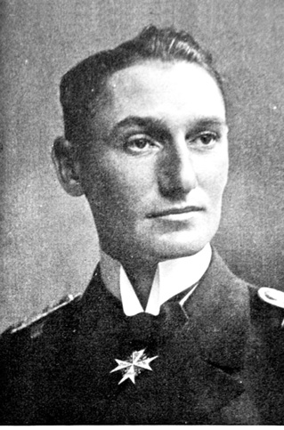
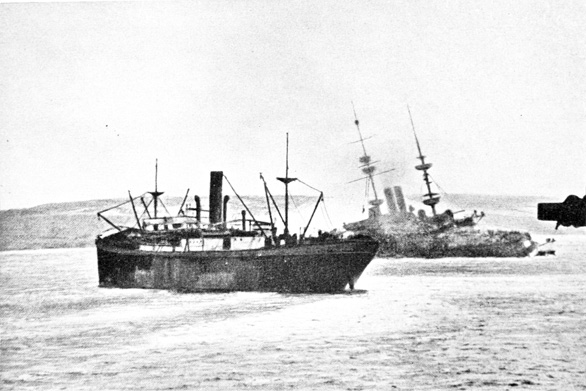
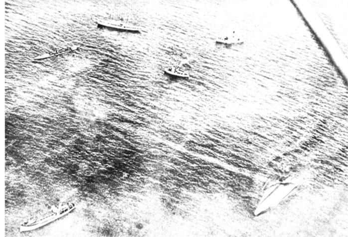
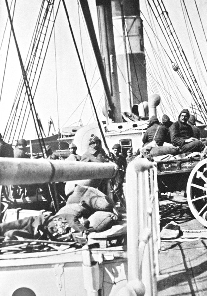
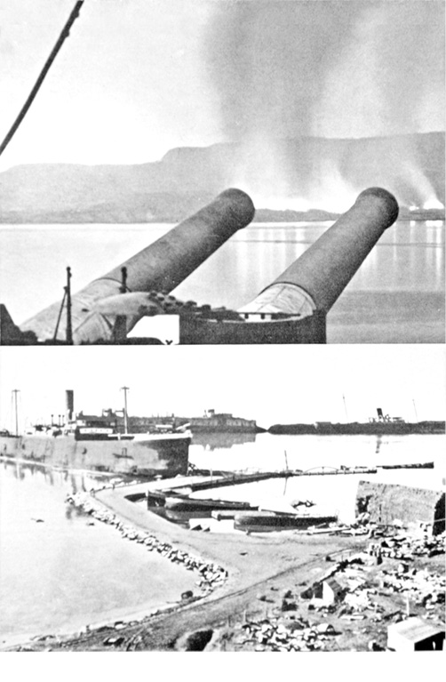

İKİ ORDU
Mevzi savaşı devam etmekteydi. Şimdi Büyük Savaş’ın bütün cephelerinde siper savaşları vardı, fakat Gelibolu’nun özel bir anlamı vardı. Avrupa’nın gerek batısında gerekse doğusunda, birkaç siperin düşmesi veya daha büyük alanların gönüllü olarak terk edilmesi pek önemsenmeyebilir. Oysa Gelibolu’da bu böyle değildi: Burada Türk hatlarının, hemen arkasında gayretli, zafer sözü vermiş bir hedef bulunmaktaydı. Bu sebeple burada mevzi savaşında hiçbir esneklik gösterilmezdi.
Her karış toprak son nefese kadar verilen kurbanlara rağmen savunulmak zorundaydı; belki de biraz daha ileri gidilirse daha uygun savunma imkânlarının ortaya çıkacağına bakılmaksızın her karış toprak son nefese kadar savunulmalıydı. İngilizler şimdi birinci muharebede karaya çıktıklarında başaramadıklarına, muazzam, ezici boyuttaki savaş malzemeleriyle yenidenulaşmayı denemekteydi. İngilizler, siperlerini geri kazanmaya çalışan Türkleri metre metre kıskaca almaktaydı. Siperler mümkün mertebe düşman siperlerinin yakınına kazılıyordu, çünkü ancak bu sayede top mermilerinden sakınabileceklerdi. Bu sebeple siperler çoğunlukla birbirlerinden sadece on metre, hatta bazen de ancak üç metre uzaklıktaydı.
Gelibolu’daki siper savaşının hiçbir sabit cephesi yoktu, bu sığınaklar denizden denize sürekli hareket eden ve ani hareketlerle koşuşturan bir yılan gibi uzanmaktaydı.
En ön hatta, fasılasız küçük bir savaş olurken, el bombaları havada uçuşur, keskin nişancılar her saniye ortaya çıkan düşmanın üstüne nişan alır ve her şeyin üzerinde mermilerin dehşetli melodisi tınlar, arka arazide ise fasılasız mevzi ve irtibat yolu inşasında çalışılırdı. Düz, hemen hemen koruma imkânı vermeyen siperler yerine yeni, dar ve iki metre derinliğindeki siperler yapılmıştı. Siperler sık sık araziye inşa edilen makineli tüfek yataklarınca düşmanın yan tarafını kuşatacak şekilde, zikzak çizerek kavisli arazi üzerinden geçerek uzanmaktaydı. Bu yataklar içine kahraman Boltz’un Alman denizcileri yerleşti ve bütün savunmanın bel kemiğini oluşturdu. Bir siper sistemi diğerine uzanmakta, onların arasında tam bir lağım galerisi ve irtibat yollarından oluşan bir labirent uzanmakta ve öne doğru toprak altındaki dinleme yolları düşman mevzilerinin hemen yakınına kadar ulaşmaktaydı. Ön cephenin önündeki düz çukurluklarda bulunan meşe ve fundalıklar koruma alanı açmak için tamamen yakılıp, kül edildi. Seyrek dikenli teller gece çekilmekte ve sivri kazıklı kurt kapanıyla her yerde tehdit oluşturulmaktaydı. İrtibat yerleri derin çukurlara ve dar boğazlara yerleştirildi, yedekler ve erkânı harbiye için sığınaklar yapıldı. Sahra topçularının on bir bataryası Kirte civarında tornistan etti ve gayet iyi bir kamuflajla araziye yerleşti. Gözetleme yerlerinden düşman siperlerinin bulunduğu arazi güney ucuna kadar görülebilmekteydi.
Askerler yaklaşan atışları umursamadan tahkimat çalışmalarını sessiz ve umursamaz bir tarzla yürütmekteydi.
Mermiler yakınına düştüğünde, onlar patlayan toz ve çelik bulutlarıyla neredeyse hiç ilgilenmez, istihkâm kazmaya devam ederdi.
Her köşe bucakta materyal eksikliği hissedilir olduğu için bütün bu savunma sistemlerini ikmal etmek gerçekten de çok zordu. Bombalara karşı emniyetli siperlerin yapımı için gerekli beton yerine, çok daha kalitesiz malzeme, tahrip olmuş köylerden toplandı. Ağaç malzeme de Küçük Asya’dan temin edilmek zorunda kalındı. Sadece en ön hatları boydan boya geçen engeller yapmak için bile dikenli teller kâfi gelmiyordu. Bu engeller sık sık ağaç dallarıyla oluşturulmak zorunda kalınıyordu.
Mevzi savaşlarının başlangıcında Türkler düşmanın güçlü topçusuna karşı ağır mukabelede bulunamadı, ancak, sürekli atış alanlarında gözüken ve dolaylı atışlarıyla Arıburnu civarındaki savaşlara müdahale eden iki eski hat gemisi “Turgut” ve “Barbaros”un gemiden yapılan top atışları istisna. Buna felaket boyutundaki mühimmat noksanlığı da eklenmeli. Özellikle kendi bataryaları susmaya mahkûmken, sürekli kuvvetli bir düşman ateşi altında bulunmaya sadece Türk askerinin tükenmek bilmeyen sinir yapısı tahammül edebiliyordu.
Bu inanılmaz olaylar o kadar sık oluyordu ki siperlerdeki arkadaşlarına en azından top gürültüleri vasıtasıyla bir topçu desteği vermek için topçular tereddütlü vaziyette manevra mühimmatı temin ediyordu. Düşmanın üstünlüğü karşısında güçsüzlüğün sebebiyet verdiği büyük bir trajedi yaşanıyordu. Öfkeden sıkılan yumruklarla kendilerine muhteşem hedefler sunulan topçular her gün buna şahitlik etmek zorunda kalıyor ama ateş edemiyordu. İngilizler bu cephane eksikliğini gayet iyi bilmekteydi ve böylece onların (İngilizlerin) sahildeki bütün ordugâh yaşantısı açık ve rahatsız edilmeden devam etmekteydi.
Düşman kahvesini demlerken, her yerde küçük duman bulutçukları sabahın berrak göğüne yükselmekteydi. Türk askerlerinin her gün onların etrafında gezindikleri veya ata bindikleri görülmekteydi. Bu ne işe yarar ki Konstantinopol’deki depolar boş… Cephedeki büyük stoklar en vahim zaman dilimleri için ihtiyat olarak kalmalıydı.
Ancak zaman içinde enerjik kaptan Z. S. Pieper bu hususa da çare bulmayı başardı. Konstantinopol civarında, uygun makinelerin, ham malzemelerin ve kalifiye işçilerin teminindeki devasa güçlüklere rağmen üretimi her hafta artan ve iyileşen bir top mühimmat fabrikası vücuda gelmişti. Yardımcı işletmelerle birlikte fabrikaların sayısı yirmi yediye yükseldi. Fakat bu fabrikalar kav ve barutun yanı sıra 23 değişik mermi türü imal etmek zorundaydı. Kaptan Z. S. Pieper ve onun Alman ustalarının ne tür zorlukların üstesinden geldiği pek anlatılamazdı. Elbette ki onlar bütün güçlüklerin üstesinden geldi, üretimi dört katına kadar arttırdı ve bu sayede hezimet karşısında cepheyi muhafaza ettiler.
Amiraller V. Usedom ve Merten de yorulmamış faal haldeydi. Herhangi bir şekilde elzem olmayan bütün obüsler ve havanlar Çanakkale Boğazı tabyaları tarafından teslim edildi. Mandalar, yürüyen top kundakları üzerine oturtulan topları dik yamaçlardan yukarı çekmek için zahmetli bir gayretin içine girmek zorunda kaldı. Sonsuz meşakkat altında zamanın seyri içerisinde cepheye 33 sabit top yerleştirmeyi başardılar. Hatta Konstantinopol’deki ordu müzesi kapılarını açtı. Eski, yüzyıllık havanlar ortaya çıkarıldı ve en ön hatlarda bomba topu olarak yerleştirildi.
Ancak kısa sürede onların faydadan çok zarar getirdiği tespit edildi, zira her atışta ortaya çıkan kalın beyaz duman bulutu, düşman ateşini üzerlerine çekmekteydi. Böylece havanlar müzeye geri döndü.
Filo şefi Amiral Souchon da gemilerin mühimmatlı birkaç uzun mesafeli topunu vermek zorunda kaldı. Gemiler, Asya sahillerinin tepelerinde bulunan Erenköy’den pek de uzak olmayan bir yerde tertip oldu ve oradan da düşman tarafından işgal edilen güney tepesini, düşman gemilerini ve ordugâh alanlarını etkin bir ateş altına alabildi. Goben’in sadece 15 cm’lik bir topu hedefine ulaşamadı, çünkü Çanakkale Boğazı’nı geçerken vapur Marmara Adası civarında bir denizaltıya kurban gitti.
Donanmanın ve tabyaların yardımları çok değerliydi, ancak İngilizlerin ateş gücüyle karşılaştırılması dahi mümkün değildi.
Teçhizat ve iaşedeki böylesi zor bir duruma savaş vasıtalarındaki yetersizlik de katılmaktaydı. Buna rağmen yeni yapılan fabrikalar gece gündüz ordunun ihtiyacı için çalışıyordu, Levazım Tuğgeneral İsmail Hakkı Paşa’nın teşkilat dehasına ve 5. Ordu’nun Levazım Albayı Burchardi’nin bütün gayretlerine rağmen üretim gerçek ihtiyaca adım uyduramıyordu. Hammadde eksikliği çok belirgindi. Orduların teçhizatı haftadan haftaya daha da eksilmekteydi. Bunlar, mükemmel kanaatkâr askerlerin vücutlarından sarkan bez parçalarıydı, sicimler deri kemer yerine kullanılmak zorundaydı ve çizme yerine çoğunlukla ayaklara sarılan deriler ve ayak giysisi olarak da bez parçaları hizmet vermekteydi. Bu adaletsiz mücadelenin seyri içinde kışın yedekler esasen hiçbir üniforma olmadan cepheye gitmek zorunda kaldı.
Türkler alacalı bulacalı yerli giysileriyle siperlerde duruyor ve memleketleri için öylesine kahramanca mücadele ediyordu. Sırtta gömlek, ayakta da ayakkabı olmadan savaşmak, güneşin hararetine kışın soğuğuna sebat etmek ne kadar da zordu. Mevzilerin ikmalinde kullanılan kum torbalarının askerler tarafından giysi amaçlı kullanılması ne kadar da hayret verici değil mi?
En azından bir miktar gıdanın emniyet altına alınabilmiş olması da bir şanstı. Her ne kadar Osmanlı, kanaatkâr ve tevazu sahibi ise de ebediyen boş mideyle elbette savaşılamazdı. Çöl benzeri bir yöre orduyu kuşatmıştı. Hemen hemen her şey, sürekli denizaltı tehlikesi altındaki uzak suyollarındaki operasyon bölgesinin yakınına getirilmek zorundaydı. Sayısız deve kervanları ve siyah mandalar tarafından ağır aksak çekilen yuvarlak tekerlekli kağnı arabaları, hali hazırda şarkta yüzyıllardan beri kullanıldığı gibi yüklerini, cephenin yeni oluşan irtibat yollarından sevk ediyordu. Orduların artan takviyelerine rağmen elzem olan malzeme gittikçe artan ihtiyaca sürekli cevap veremiyordu. Nihayet, ihtiyaç duyulan ama büyük gayretlere rağmen üstesinden gelmenin mümkün olmadığı günlük takriben 400 ton malzemeye ihtiyaç vardı. Giderek daha da sıklaşarak azalan porsiyonlar ve ekmek hisseleri daha da azaltılmak zorunda kalındı, ancak askerler sessizce sabrediyordu; cılızlaşan vücutları gerekli mukavemet gücünü ortaya koyamasa da sebat ediyorlardı. Onlar sebat ederler. Bu, arka bölgedeki su kaynaklarının Türkleri taze sularla bol miktarda besleyebilmesi, gökyüzünün (Allah C.C)’ın bir tür hediyesi gibiydi. Türk küçüklükten beri bol miktarda su içmeye alışmıştı.
O bütün eziyetlere sabırla katlanabilirdi, sadece susuzluğa katlanamazdı. Buna karşın düşman cephesinde durum bambaşka gözüküyordu. Modern kuşatma sanatının bütün vasıtalarıyla mücehhez olan düşman, gemi toplarının ateşi altında mevzilerini sükûnetle ikmal edebilmekteydi. Bombalara karşı güvenlikli beton sığınaklar meydana getirilmekte, dikenli tel mâniaları sığınakların önlerinde sıralar hâlinde uzanmakta, ağır toplar karaya taşınmakta ve cinslerine uygun olarak yerleştirilmekteydi. Mühimmat ve iaşe boldu, sürekli temiz çamaşır ve kıyafet... Türklerden sadece bir konuda daha zor durumdaydılar: Düşmanın suyu yoktu ve güneşin acımasız yakıcı ışınları altında korkunç bir susuzluk çekiyorlardı.
Suyun ta uzaklardan vapurla getirilmesi ve uzun borular vasıtasıyla karaya pompalanması gerekiyordu. Asker sadece bir matara dolusu ılık, kötü suya sahipti ve onunla bütün gün kıt kanaat idare etmek zorundaydı.
Böylece işgalciler şiddetli bir siper savaşıyla karşı karşıya kalmışlardı. Bütün savaş malzemelerinin ezici üstünlüğüne karşı Türk askeri metanetli bir sabır ve büyük bir fedakârlıkla savaşmak zorundaydı. O, bu cehennemde sarsılmadan sebat etmekteydi. Onun için nöbet değişimi ve dinlenme yoktu. Buna karşın düşman sadece üç gün en ön saflarda savaşmak zorundaydı, sonra onun nöbeti değiştirilir ve nihayet tekrar istirahat amacıyla adalara nakledilmek için birkaç gün yedekte kalırdı.
Cephedeki farklı durumların tasviri, daha sonra olacak hadiseleri daha iyi anlayıp değerlendirmemiz için mühimdir.
Bu arada vuku bulan, cephedeki küçük bir olay Türk askerini başarıya götüren o ruh haliyle ilgili bize fikir vermektedir:
Bir sabah, toz toprak içinde, ölesiye yorgun altı Türk askeri tam teçhizatlı olarak Mareşal Liman von Sanders’in önüne geldi.
Onlar, alaylarının savaşa katılmadığı yukarı Saros Körfezi’nden firar etmiş, ulaşılamaz arazilere tırmanmıştı ve şimdi de cepheye katılmak istiyordu. Onların ricası yerine getirildi.
Hayatta kalanlardan biri ebeveynine bu mektubu göndermiş olmalıydı:
“Pek muhterem Babacığım! Sevgili Anneciğim!
Kastamonulu Mehmet Mustafa Çavuş, bizim memleketten olduğu için sizlere bu mektubu yazmaktadır. O, sağlıklı olduğumu ve yaşadığımı ve Büyük Allah’a duacı olduğumu, benim pek muhterem ebeveynim, ağabeylerim, kız kardeşlerim olan sizlerin ve bütün köyümüzün sağlıklı olduğunu, hastalık ve açlıktan sizleri korumasını dilediğimi yazmalı.
Sizin son yazınızı Dersaadet’te almıştım ve büyük bir gururla kardeşlerim olan iki oğlunuzun daha askerde olduğunu öğrendim.
İlkbahar geldiğinde biz İstanbul’u terk ettik ve kutsal savaşa katıldık ve deniz kıyısında bulunan Gelibolu şehrine geldik.
Geceleri çadırımızdayken, birkaç büyük gemiyle dışarıda denizde bulunan düşman toplarının ateşini görüyorduk, güneş de açsa gece de olsa, daima top gürlemelerini ve tüfek ateşlerini işitiyorduk ve kalbimiz çok üzgündü. Fakat subaylarımız bize, savaşan kardeşlerimize destek vermek için savaş meydanının arka saflarında olmamız gerektiğini söylediler. Fakat biz kavgayı ve savaşı rüyamızda görmekteydik.
Sıcak bir yaz gecesindeydi, bir atlı çadırımızın etrafında dolaşıyordu. O bize bizim kardeşlerimizin ününden bahsetti ve oradaki adı Seddülbahir olan bir saray civarındaki sıcak savaşlardan bahsetti. Ve o bizimkilerin galibiyetinden bahsediyordu ve o gittiğinde uyuyamamıştık.
Ve şimdi çok saygıdeğer babam mektubu yazan Mehmet Çavuş sıçrar ve bağırır:
“Onlar orada, dışarıda Allah’ın yüce lütfünü kazanırken, annem beni burada çadırda ölmem için doğurmadı. Sizlerden kim bir nefer ise beni takip etsin.’’ Fakat bizim çevremizde yaraları bağlamayı doktordan öğrenmiş olan bir nefer vardı. Onun silahı yoktu. O silah yerine beyaz bezler ve sağlık şişeleri olan bir çanta taşıyordu ve o bilge bir adamdı. Size yazdığım geceden birkaç gün sonra o elindeki numuneyle çarpışmada İngilizlerin safına düştü. Adı Ahmed’di ve diyordu ki; ‘Mehmet Çavuş sen ve diğerleri subaylarımızdan emir almadan nasıl gidebilirsin? O zeki ve bilge bir adamdı. ‘Hadi gel’ dedi Mehmet Çavuş, bizim subaylardan değil ama en yüksek liderimiz olan Alman Liman Paşa’dan izin almak isteriz.’
Bu arada o da razı oldu ve daha sabah ağarmadan bizler silah ve örtülerimizle yüklü olarak, şiddetlendikçe şiddetlenen top gürültülerini işittiğimiz tarafa doğru yürüdük. Ve böylece bir yolun yan tarafında saatlerce yürüdük ve akşam olduğunda bir çeşmeye geldik ve orada uyuduk. Sabah olduğunda, birçok insan develeriyle, atlarıyla ve yük hayvanlarıyla geldi ve birisi bize Liman Paşa’nın çadırına giden yolu gösterdi. Yürüyüş dünden daha zordu ve bizim hiç ekmeğimiz ve zeytinimiz yoktu.
Bize karşı bir baba gibi iyi olan Paşa’yı bulduk ve o bize yemek yedirdi ve dedi ki: ‘Subaylarınızın izni olmadan birliklerinizi terk ettiğiniz için kusur işlediniz, fakat sizin kardeşleriniz savaşırken, sizler faydasız olmak istemediğiniz için de mükemmel bir savaşçı gibi davrandınız.
Bu gece benim çadırımın civarında kalırsanız yarın sizleri düşmana karşı gönderirim.’’
Böylece biz bir alaya geldik ve kardeşlerimizin birçoğu Konya’dan idi. İri ve güçlü insanlardı ve bizim dilimizi konuşsalar da onları güçlükle anlayabiliyorduk. Fakat onlar ihtiyaç duyduğumuz her şeyi verdi ve bize demir tellerin çekili olduğu siperleri gösterdiler, fakat düşmanı görme arzumuz gerçekleşmedi. Şimdi merak ettiğimiz gibi kısa bir şimşek bize Halifemizin ülkesini onun müsaadesi olmadan çiğneme cesareti gösteren bu alçak insanların orada –hemen önümüzdeki siperlerde– yığıldığını gösteriyordu.
Sonra, tüfeklerimizin gürültüsünden yerin titrediği o gece geldi ve bizimle az önce dua eden mübarek hocamız tıpkı çevik bir delikanlı gibi ilk defa, beyaz saçları ve de yüzü geçkin yaşıyla, siperinden fırladı. Bizler ileri doğru atılıp dipçiklerimizi salladık ve önümüzde gözüken her şey, merhametsizce öldürüldü.
Muhterem babacığım ve sevgili anneciğim, hassaten iyi olduğumu bilmenizi isterim. Kardeşlerimin birçoğuyla birkaç gündür büyük bir salonda bulunuyorum ve bize anne, bacı gibi ihtimam gösteren beyaz giysiler içindeki ‘hanımlar’ yataklarımız arasında aşağı yukarı gezinmekte ve bizim her arzumuzu yerine getirmektedir.
Kısa sürede tekrar sizinle beraber olacağım ve hasatlarınızı taşımada sizlere yardım edeceğim, zira yaşlı doktor, sol elimde iki parmağım eksik olduğu için bu yıl tekrar savaşmamı istemiyor.
Ellerinizden öper, erkek ve kız kardeşlerim gibi size de selam ederim. Sadık oğlunuz İsmail.
(Bu mektup, Hans Kannengiesser Paşa’nın “Gallipoli” kitabından alınmıştır, Schlieffen Yayınevi, Berlin)
Beyaz Bayrak
Böylece mayıs, şiddetli mevzi savaşlarıyla geçti. Ara sıra İngilizler ve Fransızlar yedeklerini savaşa sürdü ve saldırdı. Onlar bazen de Türkler tarafından dipçik dipçiğe savaşta tekrar fethedilen en ön saflara sızmayı başardı. Sekiz kilometrelik bütün cephe sarsıldı ve titredi. Savaşın karamsar melodisi hiç susmuyordu, ancak düşman Alçıtepe’den şimdiye kadarkinden daha uzaktı.
Arıburnu civarında da durum farklı görünmüyordu. Sadece mayısın ortasından itibaren Avustralyalılar ve Yeni Zelandalılar burada gözle görülür bir şekilde sakin davranıyordu. Acaba bu onların zayıflığının bir işareti miydi? Gerçi kısa süre önce savaş bakanı Enver Paşa burada cepheyi teftiş etmiş ve güçlü birliklerin müdahalesiyle düşmanı bu kara mevzilerini tahliyeye zorlama konusunda ikna olmuştu.
İki yeni tümen Konstantinopol’den geldi. 19 Mayıs gecesi dağ geçitlerindeki dört tümen muhaliflerin üst üste bulunan üç mevzisine baskında hazır bulunacaktı.
Burada Türklerin topları tıpkı güney cephesindeki gibi oldukça yetersizdi ve mevzileri hücuma elverişli hâle getirmek doğrusu cephane de kâfi gelmiyordu. Gece zifiri karanlıktı; sadece savaş gemilerindeki projektörlerin ışık huzmeleri titreşerek arazinin üzerine doğru yayılıyordu.
Hücuma kendini kilitlemiş 42 bin asker sabahın seherinde ileri harekâta geçti. Mevzileri zapt etmek için kalabalık kitleler hâlinde dar cepheye saldırdılar.
Birlikler toplanmadan evvel pilotlar vasıtasıyla tam vaktinde ikaz edilen düşman teyakkuzdaydı. Öldürücü top ve makineli tüfek ateşi ölümü hiçe sayarak saldıran Türklerin üzerine yöneldi.
Birçok mevzide, ilk siperlerin zapt edilmesi başarıldı. Süngüler ve dipçiler parlamaktaydı. Korkunç top mermileriyle biçilip yere serilen yiğitlerin yerine sürekli yeni askerler geçmekteydi. Kanlı saldırı bütün hızıyla devam etmekte, gün doğmaktaydı. Savaş acımasız ve merhametsizce kudurup gitmekteydi. Kayıplar korkunçtu. Mevziilerin önünde ve içinde bütün arazi ölü ve yaralıyla doluydu.
Akşam olunca geri çekilme emri verilmek zorunda kalındı. Tümenlerin kayıpları beyhudeydi. Mevziler alınamıyordu.
Düşman sadece bin metre derinliğindeki bir arazi hattını işgal etmişti. Bin metre ve onun arkasında da deniz... Türkler için elbette ki büyük kayıplara ve ölümü küçümseyen cesarete rağmen düşmanı denize dökmek mümkün değildi. Bu köprübaşı, güney cephesi sırtları ve Çanakkale Boğazı tabyaları için daimi bir tehlike meydana getirmekteydi. Böylece Türkler öncelikle bu konuda tevekkül etmek ve mevzilerini savunarak düşmanın ilerlemesini ertelemek zorundaydı. İçler acısı mevzi savaşı burada da ilerlemesini sürdürmekteydi.
Atışlar tekrar ulumakta, el bombaları mevziden mevziiye uçuşmaktaydı. Mevziler arasındaki binlerce silahsız ölü vadileri doldurmaktaydı.
Aşırı sıcak vardı ve bir süre sonra bu dehşetli ölüm sahasında, çürümenin de kendini gösterdiği bu yerde soluk almak korkunç bir ıstırap vermeye başladı. Savaşta çok cesur olan Avustralyalılar artık buna daha fazla tahammül edemedi. Karanlık yağmurlu bir günün sabahında onlar beyaz bayrak açtı. General Birdwood bir parlamenter vasıtasıyla ölülerini ebedi istirahatgâhlarına tevdi edebilmeleri için ateşkes ricasında bulundu. Esad Paşa buna razı oldu ve hemen İngiliz Erkan-ı Harbiye Şefi Sir Skeen üç subayla mezarı terk etti. Türk Erkân-ı Harbiyesi’nden subaylar hemen hemen bir buçuk kilometre uzunluğundaki cephe boyunca defin sınırlarını tespit etmek için onlara doğru geldi.
Mevzilerin üzerinde korkutucu bir sessizlik hüküm sürüyordu ve parlamenterlere yöneltilen bakış korkunçtu. Gayri iradi olarak Albay Skeen’in ağzından şu sözler kaçtı: “Baylar, medeniyetin bizi götürdüğü yere gidiniz! Ben buradaki bu mezarlar arasında diplomatlarımızı, bakanlarımızı ve gazetecilerimizi görmek istiyorum sadece kısa bir süre için.”
Silahlar on saat sustu. Tespit edilen zaman dilimi içinde defin işini tamamlamak için düşman on saat boyunca büyük bir hırsla çalışmaktaydı. Öğleden sonra saat tam 4.30’da bu iş tamamlandı. Birlikler mezarlarında kaybolup gitti. Sadece sekiz subay, Türklerin ve İngilizlerin elinde saatlerce kanla sulanmış topraklarda siperler arasında durmaktaydı. Saat: 4.45… Süre bitti. İngilizler ellerini düşmanlarına (Türklere) uzattı. Bu kısa tokalaşma, düşmanların birbirlerine olan saygılarının, karşılıklı görev ifasının ve cesaret örneğinin bir ifadesiydi. Sonra onlar mevzilerine döndü. Arıburnu cephesinde ölüm sessizliği vardı, ıstırap verici bir sessizlik.
Dakikalar akıp gitmekte
Saat beşi bir saniye geçmekteydi ki bir Türk bataryasının ilk atışının sebebiyet verdiği gürültü, engebeli arazinin derinliklerine doğru yayıldı.
Üç gün sonraki gece, İngilizler ve Fransızlar büyük takviye güçleriyle güney cephesinden hücuma geçti, ancak Alman makineli tüfekleri tam zamanında General Weber Paşa’nın uyguladığı karşı saldırıyla düşmanı geri çekilmeye zorladı. Birçok İngiliz makineli tüfeği mühimmatıyla birlikte ganimet olarak ele geçirildi ve takriben dört bin ölü, hatlar arasında kaldı. Her zaman olduğu gibi şimdi de ulaşılamaz uzaklıkta bulunan yüzer tabyaların ağır ateşi, başarıdan faydalanmayı engellemekteydi.
Evet, Türkler de uzun süre, sınırlı savaş malzemeleriyle düşmanı denize dökmeyi asla başaramayacakları hususunda tevekkül etmişlerdi. Esasen cepheyi koruyabildiklerinde ve düşman eline düşen siperler karşı saldırıyla tekrar geri kazanıldığında, onlar mutlu olmak zorundaydı. En ön hatlarda makineli tüfekli Alman denizciler savaşmamış olsaydı bütün bu cephelerin hâli ne olurdu. Onlara daima en önemli, fakat aynı zamanda da en tehlikeli, ileri (öncü) kalelerde (burçlarda) rastlanabilirdi, etraflarındaki cehennemlere ve büyük kayıplara rağmen sendelemez ve geri çekilmezlerdi. Düşmanın kitlesel silahlarını kahramanca dağıtan bu kahraman insanlara (Almanlara) ne kadar şükran duysak azdır.10 Bu mavi ceketliler bir zaman gelip de gemilerini terk etmek ve sığınaklardaki kanlı mevzi savaşlarında yararlılık göstermek zorunda kalacaklarını hayal bile edemezdi.
Albay Kannengiesser bu neferler hakkında şunları yazar: “Fakat bu doğrudan yardımı bize bahriyenin makineli tüfek müfrezesi sağlıyordu. İlk savaşlarda dokuzuncu tümende kara çıkarma birliğine sahip olan, kendini ispat etmiş, cesur Yarbay Z. S. Boltz’a sahip olmak benim için bir şanstı.
En ön hat, orada kurulu bulunan sekiz makineli tüfekle önemli bir yer elde etmişti. Bu muhteşem Alman bahriyeli sınıfını orada önde bilmek benim için büyük bir teselliydi. Onlar sayesinde ben de en ön hatlardaki durum hakkında şüphe götürmez malumatlar alabiliyordum. Teğmen Z. S. V. Thomsen ve v. Rabenau haricinde, ekipten Deniz Gedikli Üstçavuşu Niemand, Schafföner ve kıdemli Deniz Eri Peters şükranla andığım kişilerdi.
Normalde kuru, can sıkıcı, fakat doğrusu sürekli temiz en ön Türk hatlarındaki Alman birliklerine yaklaşıldığında insana memleket atmosferi gibi geliyordu. Uzaktan “Bismarck durağı” yazısı okunuyordu bir tahtada; bir erat koğuşunun astsubay odasındaki gibi resimler ve hatıra kartpostallar vardı bunun içinde.
Esas mesele olan makineli tüfekler, şımarık yetiştirilmiş çocuklar gibi ihtimam altına alınmıştı. Tüfekler tertemiz yağlanmış. İnce kum taneciklerine karşı itina ile örtülmüş, fişek şeridi müsadere edilmiş olarak ani bir kullanıma hazır hâlde orada duruyordu. Benim sorularıma, vazife duygusu ve erkek sağlamlığından (dayanıklılığından) kaynaklanan, fakat aynı zamanda da yeni denizci şakaları ve Alman duyarlılığıyla mana ışıkları saçan taze, neşeli, özlü cevaplar geliyordu.
En ön sığınaklardaki bu Alman hücresi, arazideki birliğin birbirine kenetlenişi gibi etkiliydi ve herkese, Almanlar gibi Türklere de moral desteği veriyordu. Keşke böyle daha çok hücrelerimiz olsaydı!”
Kaptan Hersing
Bir denizci şimdi bütün ruhuyla kendi unsuruna bağlıdır: denize. Gelibolu’nun siperlerine yönelen denizcilerin bakışlarının tekrar önlerinde yayılan derin mavi denize ilişik kalması şayan-ı hayret bir durum mudur? Savaşsız geçen her saatte, fasılasız olarak düşman seri ateşinin müsaade ettiği her istirahatta onlar ta uzakları, dışarıları gözetliyordu. Fakat kara çıkarma yerlerindeki çok yönlü faaliyetler, savaş ve nakliye gemileri esas ilgi alanları sayılıyordu. Onlar da en kısa sürede düşmanın gemi güvenliğini gözle görülür şekilde artırdıklarını, güçlendirdiklerini müşahede etti. Karakol gemileri ve destroyerler hat gemilerinin etrafında dolaşmaktaydı. Bunlar, esasen bildikleri gibi sadece torpidolara karşı koruma hizmeti sağlayan ağlar gerdiler. Hatta bizzat ağ gönderlerinde gözetleme görevlilerinin oturdukları görülmekteydi. Bütün bunlar ne anlama gelmekteydi? Gerçekten düşmanı böyle aniden kendinden emin bir haldeyken, korkutup ürküten bir denizaltı tehlikesi mümkün müydü? Gerçekten bir Alman denizaltısının geldiğini haber mi almışlardı? O zamanlar henüz imkânsız görünen bir cesaretle, bir denizaltının yalnız başına memleketinden destek almadan ve Avrupa’dan dolanarak gelmesi mümkün müydü?
Onları kuşatan gemilerin demir halkalarından ateş demetleri çaktığında, patlama üzerine patlama olduğunda, Lyddit- mermilerinin sarı dumanları ve havaya fışkıran kalın toz bulutları nefes almayı ıstırap hâline getirdiğinde ve yanlardan gelen şarapneller siper boyunca geçip gittiğinde, Türkler böyle bir Alman denizaltısını ne kadar çok özlemişti. Önünde hiçbir kurtuluşun olmadığı zırhlı devin atışlarıyla oluşan bu cehennemde onlar da (Türkler ve Almanlar) bir gün ölmek zorunda kalacaktı.
Hiçbir insan buna sürekli katlanamazdı, bu insan gücünün üstünde bir şeydi. Sadece bir solukluk dinlenme, sadece kısa bir süreliğine çelik mermilerle yarılan çıplak yarımada etrafındaki cehennemi demir halkalardan (ateş kusan toplardan) kurtulmak, sadece bir kez hava alabilme ve sebat edebilmek için yeni bir sinir takviyesi.
Kurtuluş yok mu? Evet, bir Alman denizaltısı yaklaşmakta... Kaptan Teğmen Hersing U21 ile denize dümen kırdı, gök ve deniz arasında büyük bir yalnızlık içinde süzülüp, düşmanın demir halkasını parçalamak için uzak hedefine doğru şaşırmadan gayret sarf ederek gitti.
Yorulmaz savaşçı, ileri görüşlü, dahi lider ve organizatör Mareşal Liman von Sanders daha mart ayında uzaktaki memleketine, denizaltılara acil yardım çağrıları göndermişti. O “U 21”in 25 Nisan’da Wilhelmshafen (W. limanından)’dan ayrıldığını, aynı gün düşmanlar Gelibolu sahili boyunca birliklerini sevk ettiğinde, o yöne doğru dümen kırdığını biliyordu.
İngilizler de bundan kuşkulanmıştır, zira bir Alman denizaltısı iki defa Akdeniz’de görülmüştü. Maalesef! Elbette bot’un hangi hedefe doğru yöneldiğini tahmin etmek zor olmazdı. Gemilerin başına buyruk güvenliği ellerinden alınmıştı. İngilizler hâlâ görevlerinde kalıyor, ateşe devam ediyor, yok oluşun ölüm dansına ara vermiyordu. Gerçi onlar diken üstündeydi, huzurdan mahrumdu. Tevekkeli İngiliz elçi Atina’da Yunan gazetelerine Alman denizaltıları hakkındaki haberler için boş yere yüksek miktarda para ödülü sözü vermemişti ki bu haberler onların yok olmasına sebebiyet verecekti.
Şimdi Gelibolu siperlerindeki Alman denizciler biliyorlardı ki kurtuluş vaadinde bulunan bir intikamcı yaklaşıyordu.
Şimdi yeniden cehennemde sabretme gücü buldular, yeni umut onların ruhunu canlandırdı. Her yeni günde topçu dürbünleri denizin mavi aynası üzerinden süzülüp gitmekte; erlerin bakışları uzaklara doğru, beklenti dolu, arayış içinde, umutla akıp gitmekteydi.
U21 pek gerilere giderek İngiliz adalarının kuzeyine doğru yol aldı. Sürekli teyakkuz halindeydi, düşman abluka zincirlerini kırmaya düşman veya tarafsız olup olmadığına bakmaksızın karşı karşıya geldiği bütün araçlardan tam zamanında kaçmaya çalışıyordu. Kar tozakları hızla denizin üzerinden geçip gitmekteydi. Sis bulutları onları çözmekte, ayırmaktaydı. Sonra tekrar kar, uğuldayan bir fırtına, kuduran vahşi deniz. Bir karış ilerisi bile görülemiyor. Kalın buz tabakaları yalpalayarak, bata çıka dalgalar arasında yol alan U 21’i istila etmekteydi.
Şimdi o düşmanın öncü kuvvetlerinin ortasında olmalıydı, ancak bu havada hiçbir şey görülemiyordu. Bu arada hava açıldı. Sadece kısa bir süre için sis örtüsü kalktı, kar fırtınası sona erdi. Botun hemen arkasında düşmanın öncü kuvvetleri bulunmaktaydı. Sağda bir vapur, solda bir vapur… Onda stop sinyalleri yükseliyor; vapur düdüğü salınan deniz üzerinde boğuk boğuk uğulduyordu.
Hemen ilk atış yapılmalıydı. Şimdi çabucak dalmalıydı, düşman mermilerinin takip edemeyeceği derinliklere doğru. Ancak gene büyük bir sis kütlesi botu yuttu. Hayalet geçti gitti.
Hersing sürekli güneye dümen kırıyor, İngiltere ve İrlanda sahillerinden geçerek, fırtınaların kamçıladığı Biskana Körfezi’nden geçip gidiyordu. Hava gittikçe daha da sevimli hâle geliyor, gök ve deniz gittikçe daha da mavileşiyordu.
İspanya sahillerine ulaşılmıştı. İki mayıs akşamı U 21 hemen, deniz Binbaşısı A.D.V. Krohn idaresinde akaryakıt ve stoklarla hazırlıklı bekleyen Karanlıkburun’a doğru yol aldı. Bu arada da bir gemi silueti hemen sahilin arkasında görüldü.
Tanıma sinyalleri derhal kesin bilgi verdi: Bu “Marzala” vapuru. Gecenin koruyuculuğunda U21, sahilin hemen altında, geminin yanına uzunlamasına kondu. Akaryakıt ve erzak alımı başladı. Daha önceden Arasa Körfezi önlerinde akşamın kızıllığında yeni bir buluşma noktası sözü verildikten sonra, yaklaşan gün, botu tekrar yukarıya denizin üstüne çıkardı.
Hersing yavaş bir rotayla güneye doğru ilerledi. Bordoda sevindirici bir maneviyat hâkimdi. Bir gece daha akaryakıt tankları tıka basa dolduruldu, sonra da arkadaşlarının ve müttefiklerinin, bir çelik cehenneminde yavaş fakat kesinkes kırılıp yok olduğu yer olan uzak hedeflere doğru ilerleyebildi. Onlar bunu yapmak zorundaydı ve yapacaklardı da.
Evet, yeni alınan akaryakıt derhal denenmeliydi. Ani bir dehşet, erlerin uzuvlarını felç etti. Bu gerçekten mümkün müydü? Buna inanmak istemiyorlardı, inanmıyorlardı; akaryakıt yanmıyordu. Akaryakıt motorlar için kullanışsızdı. Tekrardan dizel basınçlı havayla harekete geçirildi ve ancak yine aynı netice: akaryakıt yanmıyordu. Akaryakıt hâlâ mevcut eski bir yakıtla karıştırıldı. Yine yanmıyordu.
Şimdi ne olacaktı? Geri dönüp, taviz mi verilmeli, arkadaşları Gelibolu’ya bırakıp ölüme mi terk etmeliydi? Asla!
Akaryakıt mevcudiyeti hâlâ 26 tondu. Botun sık ve uzun dalışlarla zorlanmaması durumunda, yapılacak azami ölçüdeki bir tasarrufla Cattari’ya kadar yetebilirdi. Hersing geri dönemezdi, güneye doğru, Cebelitarık Körfezi’ne devam etti. Bu cesur kararın fevkalade askerî önemi vardı.
Deniz Önyüzbaşısı Hersing geri dönüşe karar vermiş olsaydı, sadece bir gecikme vuku bulmuş olmayacak, aynı zamanda da bütün teşebbüs lüzumsuz hâle gelecekti. Türkler, İngilizlerin saldırısına karşı koyamamış; cephe, gemi toplarının ateşi altında yıkılmış olacaktı. Müttefik güçler savaşı sürdürebilmek için hiç beklenmedik sürprizlerle mücadele etmek zorunda kalacaktı.
U21 güneye doğru dümen kırdı. Günler geçmekteydi. Kendilerinden özenle kaçınılması gereken vapurların duman bulutları arasında görülmekteydi. Kıymetli zamanlar kaybolup gitmekte ve böylece bot gece yerine ancak sabah gün ağarırken Septe Boğazı önlerinde durmaktaydı. Geminin iskele tarafında hâlihazırda Cebelitarık Boğazı’nın top gibi tıka basa doldurulmuş üç köşeli, yüksek kayalıkları su yüzüne çıkmaktaydı. Sancak (geminin sağ tarafı) mavi vişneçürüğü rengindeki dumanlar içinde Afrika sahiline doğru yol aldı.
Akaryakıt eksikliği gelecek geceye kadarki bir beklemeye müsaade etmemekteydi. İspanyol Marokkosu’nun hemen ardındaki kumullarda bot ileri doğru sessizce gelmekte, düşman destroyerlerinin öncü birliği giderek yaklaşmaktaydı. Onlar burun dalgalarıyla aşağı yukarı yol almaktaydı. Ancak Hersing gizlice, dalmak zorunda kalmaksızın, maharetle sıyrılıp geçti.
Rota sürekli Akdeniz’e yönelmekte, Sicilya sahilleri mavi seyelanlardan çıkıp yükselmekteydi. Sahiller efsanevi bir çiçek ihtişamıyla kaplanmıştı. Palmiyeler sallanmaktaydı. Ancak hemen bulutlar geldi. Hava kapandı. Yağmur tanecikleri şakırdamakta, görüş açısı kaybolmaktaydı. Sonra önde mavnalar oluşmakta ve orada...
“Çabuk dalınız!”
Dört Fransız destroyeri hemen botun önünde, iki bin metre uzaklıkta bile değil! Su, tankın içine doğru şırıldamakta, elektrikli motorlar pervaneleri döndürmekte ve artık bot derin kürekçilere itaat etmekteydi. Nefessiz bir gerilim içerisinde bakışlar derinlik ölçen alete odaklandı: 10 mt-12mt-14mt-16mt.
Bu arada bir destroyer denizaltının üstünden hızla geçip gitti. Takırdayan pervane gürültüsü yavaş yavaş sönmekte, ancak hemen yeniden işitilebilmekte, tekrar yeniden sönmektedir.
Hiç şüphesiz düşman denizaltıyı keşfetti, yüzeyde vahşicesine avlandı ve özgüvenle gökyüzüne bir ikaz gönderdi. Pervane gürültüsü susmuştu. Hersing etrafı gözetlemek için dikkatlice periskopunu çıkardı. Çabuk derine! Bir destroyer hemen botun bitişiğinde!
Burada suyu yarıp geçebilmek imkânsızdı. Takipçilerden kaçmak için Malta üzerinden büyük bir dolambaçlı yol yapılmak zorundaydı. Ve yakıt? Yetecek mi? Herkes endişeli, asık suratlar…
Şimdi U21, Otranto Körfezi’ne yaklaşmaktaydı. Kısa sürede Adriyatik’e ulaşıldı. Ancak Fransız Destroyerleri tekrar gözüktü, bot tekrar dalmak zorunda kaldı. Avlanmak saatlerce sürdü, zor, endişeli saatler... Sonra yarma harekâtı başarıldı.
U21, 13 Mayıs’ta Cattari’ye ulaştığında yakıt hemen hemen bitmişti. Botta da hemen hemen yarım ton yoktu bile. Ve buna rağmen başarılmıştı.
Sessizlik sadece birkaç gün sürdü. Motorlar revizyondan geçirilir geçirilmez ve yakıt tankları doldurulur doldurulmaz U21 Konstantinopol’e doğru yol aldı.
Yunan gemileri etrafta dolaşmaya başladı. Ege Denizi’nin güzel adaları botun etrafını kuşatmıştı. Parlayan mavi gökyüzü, ayna gibi dümdüz deniz... Ancak, derin bir huzur varmış gibi görünse de erler daima uyanık olmak zorundaydı.
24 Mayıs’ta, öğlen vakti ilk düşman öncü birlikleri gözüktü. U21 derhal su seviyesinin altında kayboldu. Hemen Dedeağaç’ın güneyinde, denizden takriben 5 mil uzakta kaygısız bir şekilde demir atan bir savaş gemisi keşfedildi.
Şimdi Rus kruvazörü “Askold”e ait olabilecek beş uzun baca görülebilmekteydi. İşte birinci kurban… Birinci atış garantiydi. Bir saldırıyı dikkate almamak büyük bir özgüven ister. Deniz Önyüzbaşısı Hersing müdahale etmezdi. Bu torpido atışı çok korkutamasa da Gelibolu önlerindeki İngiliz donanmasını en üst alarm durumuna geçirmeye yetecek ve bu korkusuzca yapılan teşebbüsün başarısı söz konusu olacaktı. Sadece kısmî başarılar elde edilmemeli, bilakis düşman kararlı bir şekilde vurulmalıydı.
U21 bütün gün pusuda bekledi. Gece çöker çökmez ortaya çıktı ve ilk öncü birlikler arasından başarılı bir şekilde geçildi. Ve akabinde bot güneye, Gelibolu’ya doğru yol aldı. 2. öncü birlikler de geçilmeliydi. Çok yavaş bir rotayla bot 400 m. derinlikte ileri doğru dümen kırdı. Uyku erleri sarmaktaydı, gelecek sabahta, nihai bir karara varılmak zorundaydı.
İlk hafif puslu ışık denizin bütün yüzeyini yalayarak geçerken, Her-sing yöreyi gözetlemek için dürbününü çıkardı. Nihayet hedefine varmıştı, Gelibolu sahili önündeydi. Ancak kaygısızca uyuyan bir düşman yerine,onları en yüksek alarm durumunda hazır buldu. Fransız destroyerlerinin Akdeniz’de mevcudiyetlerini gösterdiğinden hiç şüphe yoktu. Su yüzeyi büyük bir süratle şuraya buraya giden küçük vapurlar, gemiler ve destroyerlerle kaplanmıştı. Tam bir yaban arısı yuvası… Hersing tereddüt etmeden ileri doğru dümen kırdı. Bu derinlikte ona köpek sürüleri hiçbir şey yapamazdı ve bunların arasından sıyrılıp çıkmalıydı.
Dakikalar sonsuza doğru yavaş yavaş akıp gitmekteydi. Dürbünler dikkatlice birkaç saniyeliğine tekrar yerinden çıkarıldı.
Saat 5.30 Helles Burnu civarında pruvada üç hat gemisi görüldü. Gemiler koruma ağı olmaksızın demir atmış, sayısız araç tarafından çevrilmişti. Saldıran bir denizaltı için en kötü düşman, ayna gibi dümdüz bir denizdir. Maalesef o günde deniz öyleydi. Ancak buna cesaret edilmeliydi. Sadece bir hastane gemisi çok yakında bulunuyordu. İnşallah orada her şey uyumaktadır. Az önce U21 çok yakında bulunan hat gemisini takibe başladı ve oradaki hastane gemisi, büyük bir çeviklikle bota doğru yöneldi. Tekrar derinlere dalmak zorunda kaldı.
Pervanesinin dönüşü açıkça sürekli işitilmekte, ancak Hersing şaşmadan rotasına sürmekteydi. Periskop gayet dikkatli bir şekilde tekrar dışa doğru çekildi. Şu anda hat gemisi elle dokunacak kadar yakındaydı. Torpido birazdan süratle kurbanın üzerine hücum edecekti, ancak gemi nöbette olduğu için periskopu fark etmiş görünüyordu, çünkü demir atmadan önce gemiye manevra yaptırıp bota, boğaza doğru döndü. Ancak Hersing avını kaçırmak istemiyordu. Periskopunu tekrar çıkardı. O sırada da devasa zırhlının ön kulesinde şimşekler çaktı ve ağır top darbeleri, patlama altında sarsılan botun etrafına kadar denizi kabarttı. Saldırı ertelenmeliydi.
25 m. derinlikte U21 sahil boyunca gelecek saldırıda daha şanslı olma umuduyla ilerledi. İki uzun saat geçti. Takip eden destroyerin pervane gürültüsü sustu. Hersing tekrar 10 m. derinliğe çıktı ve periskop göründü. Karanın hemen altında sefer hâlinde bulunan hat gemisi gözükür gözükmez hemen saldırıya geçti.
O arada U21’n kıç kısmının arkasında “Queen” sınıfı bir gemi belirdi ve habersizce yanından geçip gitti. Denizaltıyla bu geminin arasında en fazla 1.000 m. vardı. Arka topların birinden bir torpido fırladı, ancak gemi muazzam makine gücüyle uzaklaştı ve bir atış yağmuru, az önce torpido atışlarının yüzeyde gözüken hava kabarcıklarının olduğu yere düştü. Saldırı gene boşa gitmişti.
Neferlerin sinirleri parçalanacak derecede gerilmişti. Büyük bir çelik tabutun içine kapatılmış gibi yüzeyde önlerinde geçip gideni göremeden beklemekteydiler. Sadece aşağı yukarı kayan periskopun hafif gürültüsü sessizliği delip geçiyordu. Ara sıra da körü körüne itaat ettikleri komutanlarının kısa, keskin emirleri sessizliği kesintiye uğratıyordu. Bazen onların botu, çepeçevre suda infilak eden mermilerden dolayı titremekteydi. Bundan da saldırının başarısızlığa uğradığını anlıyorlardı. Bu denizaltı yolculuğunun saatlerini kimse saymadı. Hava giderek daha da dumanlaşmakta ve oksijeni daha da azalmaktaydı. Akciğerler ağır ve hızlı bir şekilde çalışmaktaydı. U21 yoluna devam etti, rotasını Kabatepe’ye çevirdi. Çok uzaktan gelirmişçesine top gürültülerinin boğuk sesleri erlerin kulaklarını çınlatmaktaydı. Bu arada gemiler tekrar Arıburnu siperlerine sanki ölüm ve yıkım kusacak gibi görünmekteydi. Saat on ikiye doğru top atışları sustu. Herhalde düşman öğle molası yapmak istiyordu.
Şimdi Hersing sahilin hemen alt tarafında bir hat gemisini fark etti. Bu Triumph’tu. Bu gemi uzaktan Doğu Asya’dan gelmişti. Aylar önce onun ağır gülleleri kahramanca savunulan Tsingtau mevziilerini paramparça etmişti. O şimdi buradaydı ve her gün çevik güllelerini Türk siperlerine göndermekteydi. U21 giderek yaklaşmaktaydı.
“Triumph” ileri geri gidip geliyordu. Bir destroyer fevkalade üstün bir güçle onu yakaladı. Taarruzun başarı ihtimali az gözükmekteydi, buna karşın gemiye bindirerek batırma tehlikesi ise büyüktü. Deniz Ön Yüzbaşı Hersing yine de buna cesaret etti. Büyük bir öfkeyle yaklaşan destroyer, onu birkaç kere daha derinlere, batmaya zorladı ve botun (denizaltının) üzerinden hızla geçip gitti. Pervaneler sebebiyle alt üst olan su, botu aşağı yukarı savurdu. Erler birbirlerine sımsıkı sarılmak, kenetlenmek zorundaydı. Su bombaları birazdan infilak edebilirdi, ancak hiçbir şey olmadı. Pervanelerin gürültüsü gittikçe azaldı. Periskop yerinden hareket etti. Bir saniye bile kaybedilmedi, çünkü devin su altından çıkan çelik gövdesi sadece öne doğru 300 m’lik bir çıkıntı yapmaktaydı.
“Pruva Torpidoları Atılsın”
Bir ağ makasıyla mücehhez olan çelik mermiler şimşek hızıyla kurbanın üstüne yönelmekteydi. Hersing bütün topların botuna yöneldiğini görebiliyordu, vakit kaybetmeden derinlerde kaybolup gitti. Çatırdayan yaylım ateşleri… Korkunç sarsıntılar… Bot, bir ceviz kabuğu gibi etrafa savruldu. Sonra gürültülü bir infilak erlere doğru yöneldi ve küçük botu dolduran bir hurra sesi, çarpmamak için ölümcül bir yara almış devin altından geçip gitti.
Arıburnu siperlerindeki savaş gürültüleri bir darbeyle susmuştu. Dost ve düşman göğüs siperlerine atladı ve denize baktılar. Türk siperleri kendilerine eziyet veren gemilerden birinin battığını görünce, tarifi mümkün olmayan bir tezahürat yankılandı. Nihayet bir intikamcı geldi. Nihayet onlar tekrar nefes alabileceklerdi!
“Allah büyük!...” sesleri düşmana kadar gidiyordu. Türkler sevinçten havalara uçuyordu.
Özellikle Triumph, Türklerin mukavemetini bilhassa zorlaştırmıştı. O programlı bir biçimde her gün gözükür, her sabah, her öğle ve her akşam topları gürlerdi. Türkler şimdi devin, yani geminin gözleri önünde hareketsizce batışını seyrediyordu. Diğer büyük gemiler bozguna uğramışçasına araziyi tahliye ederken, destroyerler, balıkçı gemileri ve botlar kurtulmak için acele ediyordu. Triumph yavaşça yana yattı. Boru sinyalleri de tınlamakta ve yüksek sesli komutlar duyulmaktaydı. Bordoda her şey birbirine karıştı, eşyalar bordonun üstünde uçuştu. Bacalar ve direkler suyun içindeyken, makineler hâlâ çalışmaktaydı. Bir pervane vahşi bir şekilde havaya kalktı, şiddetle dönmeye devam etti. Sonra gemi alabora oldu. Yüzen insanların etrafında kanlı cesetler ve bunları kurtarmaya çalışan botlar vapurlar vardı. Bir çeyrek saat sonra ölmekte olan dev, tekrar yukarı yöneldi. Geminin arka kısmı dik olarak sudan çıktı ve Triumph ön kısmı ileri çıkaraktan 3 subay ve onunla birlikte 70 kişiyi derinliklere alarak temelli kaybolup gitti.
Bu arada deniz Ön Yüzbaşı Hersing, korumadan uzak, erişilemez derinliklerde, açık denizlere dümen kırdı. Tekrar yüzeye çıkma imkânı bulamadan, hemen hemen 29 saat aralıksız su altında sabretmek zorunda kaldı. Olabilecek yeni bir savaş için tükenmiş pilleri derhal dolduruldu.
Şimdi ise Hersing daha önce, istemeden tahrip etmekten vazgeçmek zorunda kaldığı “Askold’’u kendisine hedef almak istiyordu. Ancak uzun yolculuk yapmaya gerek yoktu, çünkü Askold şu an için ortada görünmüyordu, kaybolmuştu.
27 Mayıs’ın sabah kızıllığında Gelibolu’ya geri dönüldü. Hafif bir gündoğusu esmekteydi ve küçük dalgalar denizi sallamaktaydı. Denizaltı saldırısı için en güzel hava buydu.
Sabah ağarırken U21 hazırdı. Kabatepe civarında deniz ulvi bir yalnızlık içindeydi. Hiç bir savaş gemisi, hiç bir araç görülemiyordu. 10 m. derinlikteki Hersing güney tarafına dümen kırdı. Bir sürü küçük tekne ve vapur sürekli hareket hâlinde bulunan çıkartma yerinin önünde tutuluyordu. Orada ne oluyordu? Niçin bu masraf ve telaş? U21 aşağı yukarı gidip gelmekteydi. Periskop ara sıra görünmekte ve dikkatlice etrafını gözetlemekte, bakınmakta... Hiçbir yerde bir hat gemisi keşfedilemedi. Artık Hersing başka bir faaliyet sahası aramak üzereydi, bu arada dev bir zırhlının direğini keşfetti ki bu bir sürü nöbetçi aracın oluşturduğu tam bir avcı zinciriyle gizlenmişti. Torpidonun arasından geçebileceği bir boşluk araması boşunaydı. Her defasında bot bir yaban arısı yuvasının yanından süzülüp gitti. İki vapur arasındaki boşluk nereyse 20 metre kadardı. Belki şimdi başarırdı.
Mesafe 700 m. Hersing, denizaltısıyla sessiz bir şekilde tam olarak hedefe yöneldi. Elektrikli mors maniplesine (elektrik düğmesine) dokunmasıyla torpido dışarı fırladı. Birkaç saniye sonra korkunç bir infilak havayı sarstı, değişik sesler içerisinde Gelibolu’nun vadilerinde yuvarlanıp durdu, İngilizleri sığınaklarında avlayarak mezara gönderdi. Makineli tüfek yuvalarındaki Alman denizciler ve Türk arkadaşları yüksek sesle tezahüratta bulunuyordu. Bu, insanı sıkboğaz eden kuşatmadan bir kurtuluştu. Demir kuşatma yarılmıştı. Türkler haftalarca umut etti, sebat gösterdi ve bu anı iple çekti.
Anadolu’nun yiğitleri bir çocuk masumiyetiyle devasa boyuttaki ateş ve duman bulutuna ve panik içinde çil yavrusu gibi dağılan küçük araçlara bakıp durdu. “Majestic” gittikçe daha kuvvetli bir şekilde yana yattı ve alabora oldu. Henüz beş dakika geçmişti ki sadece geminin baş tarafında küçük bir çıkıntı görülebildi.
“Allah büyük, ...” sesleri berrak sabah havasında boğazı yırtarcasına yankılanıyordu.
Artık İngilizler, haftalarca süren ateş sayesinde Türklerin moralinin, mukavemet gücünün kırılmış olduğuna inanmaktaydı. Şimdi onlar delicesine bir cesaretle, korku ve dehşete kapılmış bütün gemilerinin, adalardaki gizli köşelere nasıl saklandığına şahit olmak zorunda kaldı. Deniz Gelibolu civarında güçlü bir süpürgeyle süpürülmüş gibi tertemizdi.
Artık ateş ve çelik mermiler kusan gemiler, her gece Türk mevzilerini gün gibi aydınlatan projektörler; yeni birlikleri, cephaneleri ve iaşeleri karaya taşıyan nakliye gemileri yoktu. İngiliz siperlerinde derin bir ümitsizlik, Türklerde ise belirgin bir coşku vardı. Galibiyet inancı tekrar geri geldi.
U21 iki gün mavi denizin sonsuzluğunda kayboldu kaldı, sonra tekrar sessizce yeni kurbanlar arayarak sahile ulaştı. Ancak bütün aramalar nafileydi. Deniz ölü gibiydi. Düşman adalardaki kuytu köşelerden bulunup çıkartılmalıydı. 29 Mayıs’ta Hersing, İmroz adasında demir atmış bir hat gemisi keşfetti ve derhal botunu hücuma geçirdi. O, artık hemen giriş önlerindedir. Ancak birdenbire bordonun duvarlarında acayip bir tahriş ve çatırdama fark edildi, sonra ani bir hareket ve bot çalışmamaktadır. U21’deki erler bunun ne manaya geldiğini çok iyi bilmekteydi.
Onlar botlarının bir ağa takıldığını, parmak kalınlığındaki çelik ağlarla kuşatıldığını ve denizin yüzeyindeki şamandıraların şimdi bir dans gösterisi yaptığını biliyordu.
“Tam gaz geri!”
Pervaneler, vahşice suları kamçılamakta, çelik ağlar kurbanlarını yakalamaktaydı. O yerinden kımıldamadı.
“Tam gaz geri ileri!”
Her saniye nöbetçi araçlar su bombalarını infilak ettiriyordu. Bot kapana düşmüş bir hayvan gibi sürekli engellere doğru ilerliyordu. O anda ani bir hareket, bir nefes alma, rahatlama… Bot ağı parçaladı. Bu defa da işler yolunda gitti, fakat ikinci bir defa aslanın inine girmeye cesaret edecek hava dağılıp gitmişti. Kalın halatın uçları pervanelere ne kadar da kolay dolanmış olacaktı veya karakol gemileri ağa yakalanmış botu ne kadar da kolay görebilir, keşfedebilirdi. Bu da onların sonu olmuş olurdu.
Bot, Çanakkale Boğazı önlerindeki av sahasında iki gün daha dolaşıp kol gezdi, ancak periskopun önüne kayda değer hiçbir hedefi gelmedi. Sadece, büyük bir gayretle denizaltıyı arayan balıkçı vapurlarına ve destroyerlere rastladı.
Burada boş yere zaman harcanıyordu. İngiliz hat gemileri ve kruvazörlerinin bu felç yapan korkularından kurtulmaları ve tekrar kuytu köşelerden çıkmaları belli ki daha zaman alacaktı. Nihayet U21’in mürettebatı da haftalar süren yolculuktan ve birçok meşakkatten sonra bir istirahat molasını hak etmişti. Bu sebeple Hersing, haziranda Bodrum’a gitmeye karar verdi. Sadece bir gece istirahat vardı, sonra U21 tekrar Ege Denizi rotasındaydı. Gelibolu civarındaki deniz, düşmandan arınmış durumdaydı. Böylece galip bot Çanakkale Boğazı’na girdi ve 5 Temmuz’da, halk tarafından coşkuyla karşılanarak Haliç’e demir attı.

Deniz Önyüzbaşı Hersing

“U21” “Majestic”i bombalıyor

Bir Alman uçağı tarafından çekilen fotoğraf.
İnsafsız Küçük Savaş
Hersing, o anda yaptığı hesaplamalarıyla, Türklerin mukavemet isteğinin yeterince zayıflatıldığını ve mevzilerin haftalarca süren ateş sayesinde hücum için elverişli hâle geldiğini sanan, General Hamilton’un planını suya düşürmüş ve bu sayfayı kapatmıştı. Hamilton hâlâ, güçlü bir saldırıyla mevzi savaşına bir son verme umudundan vazgeçmemiş ve ağır kayıplar altında da olsa Alçıtepe’yi hücumla zapt etme umudunu kaybetmemişti. O, sebatla bu hedefi takip etti. Türkler, ağır top atışlarıyla mukavemet için yeni güç kazanmadan önce, derhal harekete geçilmeliydi. Hamilton, gelecekte hat gemileriyle sağlanan bir destekten vazgeçmek zorunda olduğunu açıkça biliyordu. O hâlde saldırmak, hemen saldırmak! Evet, o çoktan karaya yeterince topçu sevk etmişti. Birkaç kruvazör ve destroyer, küçük gemiler tarafından korunarak nihayet buna cesaret etti.
Üç gün boyunca İngiliz mevzilerinde korkutucu bir sükûnet hüküm sürüyordu, fırtına öncesi sessizlik... Düşman büyük bir hararetle saldırıya hazırlanmaktaydı.
4 Haziran’da deniz tekrar canlandı. Kruvazör ve torpido botları ortaya çıktı. Saat 11’e doğru birdenbire fasılasız şiddetli bir ateş başladı. Bütün gemi toplarından ve kara bataryalarından en ön siperlere öldürücü bir ateş yağıyordu.
Onların etrafı bir anda toz, demir ve duman bulutuyla kaplandı.
34.000 müttefik bu siperlerin yıkıntıları üzerine saldırmaya hazırdı. Birdenbire bir darbe yemişcesine top atışlarının sesi kesildi. Türkler sıçramaya hazır bir şekilde, tahrip olmuş en ön siperlerin arkasındaki sığınaklarında beklemekteydi. O arada tıpkı topraktan bitercesine düşmanın ilk hatları hücuma geçmeye başladı.
Yabancı bir lejyoner olan İsviçreli Ferdinand Kugler, savaş günlüğünde bu saldırıyı çok etkileyici bir şekilde anlatmaktadır: “ Biz barut dumanından dolayı hemen hemen sis altında kalmıştık. Bizim arkamızda topçuların çatırtıları ve gürlemeleri duyulmaktaydı; üzerimizde düşman atışları vızıldamakta, ıslık çalmakta, infilak etmekte, zaman zaman sığınaklarımızda patlamalar olmakta, öldürmekte veya yaralamakta; o anda birisi vahşi bir hayvan gibi bağırıyor; orada birisi yerde can çekişiyordu. Yer sanki yerinden oynarcasına zangır zangır titriyor gibiydi; havada ise uğultu ve vızıltılar duyuluyordu. Bütün cehennem ipini koparmış gibi gözüküyordu. Ve biz, sararmış solmuş yüzlerle mazgallarda duruyorduk, ter; simsiyah olmuş yüzümüzden akıyordu.
Nihayet sanki bir kurtuluş gibi hücum işareti verildi, klakson çok yüksek bir tonla sinyalini haykırıyor, subaylar kılıçları, palaları çekip alıyor ve bizim engellerimiz içindeki geçitlerden yukarı doğru ölüme karşı yürünüyordu. Düşman ateşi korkunç bir şekilde bizim safları biçti geçti, buna rağmen biz sadece küçük sıçrayışlarla ilerliyorduk. İki kişi kalıncaya kadar bütün subaylarımız, en çok da astsubaylar öldü; kendimi zincire vurulmuş çılgın insanların bulunduğu durumda gibi hissediyordum, onlar perişan bir hâlde öylesine bağırıyorlardı ki bu meyanda şarapnellerin kulağı sağır eden patlamaları, keskin bir ses çıkaran tüfek ateşleri yegâne haykırış gibi geliyordu.
Birdenbire keskin, mütereddit bir sinyal, bu kudurmuşluğu bastırdı: Geri çekil! Türkler üstün silahlarla bir karşı saldırı hazırlığındaydı ve bizim hemen hemen tamamen mahvolan saflarımız, saklananlar hariç, saldırıya mukavemet edemezdi. Yavaş yavaş, mütemadiyen ateş ederek, sürünerek geri çekiliyorduk, yaralılarımız da bizimle beraber geri çekiliyordu. Ve biz orada tekrar sipere döndük, ilk başta yola çıkanların üçte biri bile kalmamıştı.
İstirahat yok, artık Türkler sık saflar hâlinde saldırıyordu. Biz, yukarı doğru pişmiş kelle gibi sırıtan, mitralyözlerimizden arda kalan 4 kişiye bakıyorduk. Düşmanın seksen metre kadar yaklaşmasına izin verdiler. Sonra çatırdı koptu ve Türkler, ekin biçen adamın önündeki bir saman çöpünden daha hızlı bir şekilde yere yığıldı. Ani bir hareketle sarsılarak ellerini öne attılar, havada cümleler oluşturarak sanki dehşetli bir kukla tiyatrosundaymışcasına. Birisi birazcık başını kaldırıp hareket ettirdiğinde, o hemen mermilerimiz tarafından yere yıkılıyordu.”
Bütün cephede en ön mevzilerde savaş kudurmuşçasına sürüyordu. Burada İngilizler ve Fransızlar boş yere yer ile yeksan olmuş siperlere karşı hücum ediyordu. Çünkü Alman makineli tüfekleri onları adeta biçmekte, tırpanlamaktaydı. Orada Türk taburu süngüyle karşı saldırıya geçti. Birçok mıntıkada düşmanlar, vahşi bir fanatizm ve mütereddit bir azgınlıkla göğüs göğse çarpışarak, hareketsiz hâle getirildi. Dipçikler şiddetle yere çakılmakta, süngüler itip kakmakta, el bombaları kana susamış kan içen toprakta yuvarlanıp giden ve savaşan insanların ortasında uçuşmakta, Arapların kamaları ve Gurkaların Kirileri (bir çeşit süngü) parıldamakta, boğmaya çalışan eller, gırtlakları tutmaktaydı. Ölüm yüz çeşit şekle girerek savaş meydanının üzerine çökmekte, hava vahşi ve boğuk çığlıklarla dolmakta, yaralıların korkunç iniltileri ortalığı kaplamaktaydı. İnsan kümeleri, sahile vurup dağılan dalgalar gibi ileri geri hareket etmekte, ileri geri yuvarlanmakta ve geri çekilmekteydi.
Vakit öğlen sonrasına yakındı. Savaş acımasızca kudurmaya devam etmekteydi. Hamilton aldığı kararı zorla yeniden uygulatmak istedi, buna mecburdu da... Zığındere’nin merkezinde ve sol kanadında, düşman en ön siperleri tutmayı ve orada siper kazmayı başarmıştı. Zığındere’nin öbür tarafı olan sağ kanatta da makineli tüfekler saldırıyı durdurma şansını elde etti. Şimdi burada da makineli tüfek tıkırtıları susmuştu. Hiç iyi bir şey hissetmeyerek Üsteğmen Z. S. Boltz aceleyle yaklaştı. O, siperlerin Türkler tarafından tahliye edildiğini dehşet içinde tespit etmişti, çünkü onların bütün desteği olan makineli tüfekler çalışmıyordu. Şükür ki bir tanesi halen zarar görmemişti, fakat Alman denizciler bunun yanında ölmüş olarak yatıyorlardı. Kaderin cilvesine bakın ki düşman şu anda toplanmak için saldırıya ara verdi. O, boş ellerle bu önemli mevziiyi işgal edebilirdi. Ancak bir saniye bile yitirilemezdi. Artık yeni takviyeler de yaklaşmaktaydı. Deniz gedikli Çavuşu Schafföner makineli tüfeğini kaptı ve bir kurşun yağmuru düşman saflarını sildi süpürdü. Boltz hemen ikinci bir makineli tüfek temin etti ve Türk yedekleri tekrar siperleri doldurdu. İngilizler dördüncü defa hücuma geçti ve saldırı dördüncü defa bu mevzilerin önünde son buldu. Mevziler Türk tarafında kaldı.
Ancak, Zığındere sahilinin solundaki en ön hatları tekrar geri kazanma teşebbüsleri başarısızlıkla sonuçlandı. Sürekli yeni yedekler öne çıkmakta, umutsuzca ve bitkin bir hâlde savaşmaktaydı, ancak düşmanın asgari toprak kazanımı bile feci sonuçlara sebebiyet verebilirdi.
Burada Teğmen Z. S. von Rabenau askerleriyle galip gelene kadar savaştı. Onlar burç şeklinde ileri doğru çıkıntılı bir mevzide merkezi bir yere makineli tüfeklerini monte etmişlerdi. Mermilerinin mahvedici gücü, saldıran İngilizlerin saflarını silip süpürüyordu. İngilizlerin bütün cephe hücumları duraklıyordu. Rabenau ne kendi yaralarına aldırıyordu ne de askerlerini hedef alan ölüme dikkat ediyordu. Kimse sağa sola bakmıyordu. Sadece ateş ediyorlar, ateş ediyorlardı. İngilizler, Türklerin yan siperlerden çekildiğini, oraya sızdığını ve mevzilerini kuşattığını fark etmiyordu. Türkler nöbette kaldı ve geri çekilmedi. Ancak düşman geriden saldırmaktaydı. Tabancaları çıkartın, yumruklarla saldırın. Sadece kısa süreli bir çarpışmanın ardından küçük müfreze yenildi. Ağır yaralı Rabenau ileri taşındı ve cesur kıdemli Deniz Eri Peters’in de aralarında bulunduğu hayatta kalan birkaç kişi, esaretlerinde de onunla birlikte olmak zorunda kaldı.
Böylece cephe mıntıkasının temel direği olan küçük burç düştü. Şimdi Türk taburları mevzilerini geri kazanmak için tekrar ileri saldırıya geçmek zorunda kaldı ve çok kan kaybetti. Gece olmaktaydı. Yeni yedek askerler cepheye ulaşmakta ve derhal görevlendirilmekteydi. Kanlı mücadelelerden sonra kaybedilen siperlerin bir kısmı tekrar geri alındı. Zamanla muharebe gürültüleri de sustu. Makineli tüfek ateşi takırtısını halen ara sıra gecenin derinliğinde sürdürmekteydi. Sonra sessizlik oluştu. Sadece mevziler arasında bulunan ağır yaralıların inlemesi ve sızlaması duyulabiliyordu. Kimse onlara yardım edemiyordu.
Dost ve düşman güçlerinin son kertesindeydi. İngilizler ve Fransızlar hareketsiz bir şekilde siperlerinde oturmaktaydı. Diğer taraftan düşman, kendi kısmi başarılarından ve Türklerin geçici zayıflığından azami derecede faydalanacak zamanı kollamaktaydı.
Türk birliklerinde iflah olmaz bir karışıklık hüküm sürmekteydi. 9. Tümenden sadece hüzünlü bir bakiye kalmıştı ve çeşitli tümenlerin muvazzaf yedekleri karma karışık bir haldeydi. Ancak düşman saldırmadı, ne bu gece ne de takip eden günde.
Böylece General Weber birlikleri düzenlemek ve tek bir emir komuta zinciri kurmak için zaman kazandı.
Liman von Sanders, kaybedilen mevzilerin ne pahasına olursa olsun yeniden ele geçirilmesini emretti.
Bu meyanda beş yeni tabur onun emrine amade kılındı ve Albay Kannengiesser’e emir iletildi. 6 Haziran gece karanlık basmakta. Gece yarısından sonra, Kirte harabeleri civarına ilk birlikler ulaştı. Saat 3.30 da hücum taburları toplandı ve dikkatlice ilerledi. Düşman bu ani ve aceleci hücumla tamamen şaşkına dönmüş ve gafil avlanmıştı. Tabii ki yorulma nedir bilmeyen Boltz, makineli tüfekleriyle tekrar oradaydı.
Mücadele kısa sürdü. Kaybedilen siperler birbiri ardı sıra zapt edildi ve en kısa sürede eski mevzi tekrar tamamen Türklerin eline geçti. 17 İngiliz makineli tüfeği ve birçok savaş malzemesi ganimet olarak alındı. General Hamilton’un umudu azalmıştı, Alçıtepe’de galibiyet bayrağının dalgalandığını görme hayali artık daha da zayıftı.
Mevzi Savaşı Devam Etmekteydi
Üsteğmen Z. S. Boltz ve onun sayıları iyice azalmış sadık birliği istirahat hâlindeydi. Onların son günlerde ve gecelerde başardıkları insanüstüydü. Bu arada iki Türk askeri bir Alman denizciyi onlara getirdi.
Evet, elbette ki bu onların iyi dostu ve silah arkadaşı Peters’ti, gedikli Denizci Eri Peters… O âdeta açlıktan ölmüş bitmiş gözüküyordu ve yorgunluktan neredeyse ayakları üstünde duramıyordu, dili damağına yapışmıştı. Neredeyse susuzluktan ölmüş gibiydi. Çabucak su getirildi. Sonra Peters bir ölü gibi uyudu, bütün gün uyudu. Ancak akşam konuşabildi, başından geçenleri ancak akşam anlatabildi. O, nasıl savaştığını, kendisine nasıl muamele edildiğini ve etraflarının nasıl çevrildiğini, İngilizlerin onun teğmenini ve kendisini nasıl götürdüklerini anlattı. Birçok siper ve irtibat yolundan geçerek iki güçlü İngiliz onu sürekli kalacağı esarete götürmüştü. Fakat o esarete gitmek istemedi, arkadaşlarıyla kalmak ve savaşmak istedi. Nöbetçi onun yanından uzaklaşır uzaklaşmaz sağlam bir denizci yumruğuyla ikincisini de yere yıktı ve kaçtı ve biraz önce götürüldüğü yoldan çabucak geri döndü. Kimse onu durduramadı. O kaybedilen Türk siperlerine daldı ancak orada bulunan İngilizler o anki telaşla onunla ilgilenmedi. Peters bu siperlerden tekrar dışarı çıktı ve koşarak ilerledi. Fakat bu defa da Türk mevzilerinden gelen mermiler şimdi ona doğru adeta ıslık çalmaktaydı. Peters, mevziler arasındaki derin, huniye benzer bir yerde kendine bir korunak aramak zorunda kaldı. Peters şimdi buradaydı ve bu gönülsüz hapishaneyi terk edemiyordu. Başını dışarı çıkarır çıkarmaz mermiler her iki yönden ıslık çalmaya başladı. Güneş acımasızca yakmaktaydı. Susuzluk acıları dayanılmaz kılmakta, açlık rahatsızlık vermekteydi. O iki gün iki gece burada kaldı, kurtuluş için zayıf bir ümit ışığı da giderek sönmekteydi. Hararet artık dayanılamaz seviyedeydi. Su, su… Ancak onun başı üzerinde sadece mermiler uğuldamakta. Kuvvet uçup gitmişti.
İkinci gece bitmek üzereydi. O rüya mı görmekteydi yoksa bütün bunlar hezeyan mıydı? Uzaktan gelen savaş gürültüsü kulağını zorlamaktaydı. “Allah…” nidaları giderek daha da yaklaşmakta ve kuvvetlenmekteydi ve sonra Peter de artık olduğu yerden dışarı çıktı, o şimdi ileri atılan silah arkadaşlarının tam ortasındaydı. Ve şimdi o tekrar arkadaşlarının ve Üsteğmeni Boltz’un yanında esarette erimek yerine savaşmaya devam edecekti.
“Evet, ben sadece görevimi yaptım, sayın üsteğmen.’’ Bu basit sözlerle gedikli Denizci Eri Peters raporunu bitirir.
En kısa sürede tekrar en ön mevzideki arkadaşlarının yanına gelmiştir. Evet, şimdi yeterince makineli tüfek vardı. Birçok İngiliz makineli tüfeği ve buna ilaveten mühimmat... Şayet İngiliz mühimmatı yetmezse, o zaman başka bir plan tatbik edilir ve sonra tüfekler tekrar takırdamaya devam eder.
Müttefiklerin başarısız son yarma harekâtından sonra ordular tekrar yeryüzünden çekildi, sığınaklarına ve çukurlarına girip sindiler. Sadece en ön siperlerde daimi bir savaş vardı. Düşmanın her zayıf yönünden hemen faydalanılıyordu. El bombaları vızıldıyor, tüfeklerin yaylım ateşleri takırdıyordu. Topların gürlemeleri hiç susmuyordu ne gündüz ne de gece… Ara ara düşman, karşı saldırıyla yeniden sürülüp atılacağı küçük siperleri ele geçirmeyi başarıyordu. Lakin düşman hiçbir yerde bir karış bile ilerleyemedi. Sadece toprak insan kanına doymaktaydı.
Gelibolu’daki mevzi savaşı: Ne bu taraf ne de öbür taraf için en küçük bir başarı ihtimalinin bile olmadığı kaçınılmaz küçük savaş…
Güneş, yakıcı devasa bir top gibi her gün bulutsuz gökyüzündeki yörüngesine çekiliyordu.
Bunaltıcı, tahammül edilemez bir sıcaklık, pırıl pırıl hareketsiz bir hava… Gelibolu üzerinde kısa süreli bir bora hızla geçip gittiğinde ince kum yukarı doğru helezon oluşturmakta, insanın gözüne, burnuna ve ağzına dolmakta, akciğerlerine sızmakta, savunma silahlarına nüfuz etmekteydi.
Mevziler arasında ölenlerin iskeletleri kurumakta ve sararmaktaydı. Havayı berbat eden çürümüş insan kokusu nefes almayı güçleştirmekte ve neredeyse tahammül sınırlarını aşmaktaydı. Yeryüzünün hiçbir noktasında, bu küçük üçgende olduğu kadar çok sinek ve sivrisinek yoktur. Onların milyonlarcası havada vızıldamakta, sığınakları, barınakları mesken edinmekteydi. Birkaç sineğin olmadığı bir dilim ekmeği ve bir kaşık çorbayı ağza koymak hemen hemen imkânsızdı. Bir konserve kutusu açılır açılmaz sinekler çoktan içinde biter, her bir parça et derhal sineklerle simsiyah olurdu. En kötüsü de savaşçıların taze yaralarıydı. Bu meşakkatin düşman tarafında daha ağır bir şekilde yaşanması onlar için az da olsa bir teselli kaynağıydı. Gelibolu üstündeki savaş gürültüsü geceleri nadiren susmaktaydı. Sonra vadilerden, gerçi şu anda acıkma ihtiyacı duymaması gereken çakalların, iğrenç uğultuları gelmekteydi.
Geceleyin ganimet arayarak etrafta dolanan sadece çakallar değildi. Türk askerleri de ganimet hedeflemekteydi. Ancak her alanda eksikleri vardı: Kıyafette, donanımda, iaşede ve Türklerin hemen hemen yokluğuna katlanamayacağı tütünde noksan vardı. Düşmanlarda ise bütün bunlar bol bol mevcuttu. Akşamları giderek daha çok gönüllünün devriye görevine başvurması şayan-ı hayret bir durumdu. Onlar beş on kişilik birlikler hâlinde ilerleyip küçük savaşı yumruk savaşına çeviriyordu. Geceler karanlıktı ve sık sık denizden gelen sis tabakası mevzilerin üzerine çöküyordu.
Devriyeler dikkatlice siperlerinden çıktı, çalılık ve fundalıklardan gizlice geçerek, sürünerek ve kıvrılarak dikenli telleri geçti. Onların gerçek koruması, maharet ve dikkatti, yegâne silahları ise bıçak ve yumruk… Onlar biliyorlardı ki bu bir hayat memat meselesiydi. Çatırdayan kuru bir dal, kayalıklardan kopup gelen ve baş aşağı yuvarlanan bir taş, onların sonunu getirebilirdi.
Oldukça yavaş bir hâlde ilerlediler. Her defasında dakikalarca yere yatarak beklediler ve gecenin derinliklerini dinlediler. Onlar, bu saatlerde siperlerin çok daha tenha olduğunu, düşmanın sıcaktan ve savaştan gevşediğini, derinden derine bir uyku bastırdığını bilmekteydi. Sadece öndeki gözetleme mevzilerindeki nöbetçiler uyanık beklemekteydi. Askerler gizlice giderek daha da yaklaştı. Soluk soluğa bir dinleme, hararetli bir telaş. Hafif sesler kulağı tırmalamaktaydı. Birazdan tamamdır. Dikkat... Siyah bir çizgi belirir onların önlerinde. Bu hendektir, siperdir. Dakikalarca nefeslerin tutulduğu bir gerilim... Bir sıçrama ile yırtıcı hayvan misali iki kişi her iki nöbetçinin üzerine saldırdı. Zalimane bir çığlık, kısa bir hırlama, sonra sessizlik oluştu. Konserveler; tütün, çikolata, arazi telefonu, silahlar, mühimmatlar, hatta bir adet ayaklı periskop ganimeti oluşturmaktaydı. Siperin kenarından nesneler birbiri ardına gitmekteydi.
Yiğit erler genellikle böylesi bir gözetleme yerinde kalmaya devam ediyor veya dinleme görevlilerinin nöbet değişimi yaklaşana kadar bir lağım galerisine saklanıyorlardı. Tekrar kısa ve sessiz bir mücadele ve düşman siperlerinin yakınlarına giden yol serbestti, boştu. Gözetimsiz bir makineli tüfeği, mühimmatı ve savaş materyali ile beraber kaç defa ganimet olarak alınmıştı, kaç defa bu korkusuz erler cüretkârlıklarını çoğu kez hayatlarıyla ödemek zorunda kaldı.
Gelibolu’da Mevzi Savaşı!
Türklerin mukavemeti her hafta sertleşmekteydi. Sadece mevziler sürekli olarak daha iyi ikmal edilmekle kalmıyor, mühimmat da daha bolca ulaşıyordu. Deniz Önyüzbaşısı Bieper ve onun Alman ustaları boş yere gece gündüz tetikte değildi. Bundan böyle düşmanın en dış güney ucundaki kamp yaşamı artık eskisi gibi açık seçik göz önünde devam edemezdi, çünkü Türk topçularının da artık her gün bunlar için birkaç obüs mermisi vardı. İntepe civarındaki Asya sahillerinde konuşlandırılan gemi toplarının da artık sürekli susmalarına gerek yoktu. Onların obüs mermileri, sığ sularda kendilerine, gemileri batırarak mendirekli bir liman inşa eden, düşmanın kara çıkarma mıntıkasına kadar ulaşmaktaydı. Nakliye gemileri sık sık mermilere yakalanırdı ve mermiler sık sık karaya çıkan birliklerin arasında, tam orta yerinde patlardı ve stokların tahliyesini çok daha az sevilen bir meşgaleye dönüştürürdü.
Şimdi Türkler yeni bir silaha sahipti. Uzaktan uçaklar geldi. Alman savaş uçakları, yabancı ülkelerin üzerinden uçurarak buraya doğru yöneldi. Demir haçlı ilk uçak onların mevzileri üzerinde tur attığında, sığınaklarda tarifsiz bir tezahürat hüküm sürüyordu. Hâlihazırda Yüzbaşı Serno idaresinde tayyareci bölüğü de vardı. Şimdiye kadar ceza görmeden Türk siperlerinin üzerinde ve arka arazilerde dönüp dolaşan, gövdesinin altında gümüşi renkli parıldayan bombaları taşıyan ve bunları Türk askerlerinin kafasına atan, düşman pilotlarının inanılmaz cesaretleri sona erdirildi. Üsteğmen Buddeke tek başına yedi İngiliz uçağını düşürdü. Şimdi mevziler üzerinde sürekli hava savaşları vuku bulmaktaydı ve hararetli bir coşkuyla Anadolu’nun evlatları mavi gökyüzünde nefes kesen düelloyu takip etmekteydi.
Bu Alman pilotlar yorulma bilmez gözükmekteydi. Her türlü hava şartlarında, gece ve gündüz motorlar çalışmakta, bombalar ise düşmanın mühimmat depolarının üstüne, nakliye gemilerinin üstüne veya karaya inen takviyelerin içine doğru düşmekteydi.
Mânia (Engel)
Tabiî ki Hersing de U21 ile sürekli Konstantinopol’de defne ağaçlarının altında dinlenmiyor, bilakis çok defa Gelibolu civarında ve Ege Denizi’nde dolaşmaktaydı. Ancak o son derece dikkatli olmak zorundaydı, çünkü her yerde ona, İngilizlerin ağ ve mayınlarıyla sinsi bir pusu kurulmuştu. Denizaltı korkusu hâlâ sürekli olarak İngilizler üzerinde kötürüm edici bir tesire sahipti. Küçük koruma konvoylarının oluşturduğu tam bir avcı sürüsü tarafından kuşatılmalarına rağmen, ara sıra savaş gemileri toplarıyla kara savaşına müdahale etseler de savaş gemilerinin ateşi öfke dolu ve tereddütlüydü. Siperlerdeki birlikler mutluydu. Alman denizaltısının mevcudiyeti, onları devasa bir zırhlının çelik cehenneminden kurtarıyordu. Aralıksız mevzi savaşlarına, güneşin yakıcı hararetine ve birçok mahrumiyete rağmen, onlar şimdi tekrar mukavemet edebilmekteydi.
İmroz’la Gelibolu arasındaki nakliye gemileri trafiği şimdi daha ziyade geceleri olmakta ve nakliye gemileri gün boyu sahilde itinalı bir şekilde emniyet altına alınmaktaydı. Hersing sonuca ulaşamıyor.
Ancak 4 Temmuz’da, botunu büyük bir başarıyla getirmeyi başardı. Tekke Burnu civarında o iki kırmızı bacalı büyük nakliye gemisini, iki hastane gemisini ve dört küçük nakliye gemisini destroyerler ve balıkçı vapurlarıyla çevrilmiş gördü. Deniz dümdüzdü ve birçok keskin cam parçası denizin yüzeyinde bir şeyler ararcasına geziniyordu. Geminin önündeki torpido 800 metrede toptan ayrıldı. Güvenlik kuvvetleri köpek sürüsü gibi bota hücum etti. Hersing derine dalmak zorunda kaldı. O, U21’in balıkların yanına gönderdiği Fransız vapuru “Chartago” olduğunu ancak daha sonra anlayabildi.
Neredeyse denizaltı iki gün sonra bir İngiliz mayınına kurban gidecekti. Tekke Burnu-İmroz hattında Hersing huzurlu bir şekilde yan yana duran iki balıkçı vapuru gördü. Onlar burada ne arıyordu? Bu çok şüpheli görülüyordu.
Bir denizaltı ağını mı yoksa bir mayın tarlasını mı bekliyorlardı? Vapurun biri ayaklı topu fark ettiği vakit, alarm bayrağını çekti ve hızlı bir rotayla bota doğru dümen kırdı. U21 derine daldı. 20 metre, 22 metre – orada hemen denizaltının arkasında şiddetli bir infilak oldu. Hemen hemen bütün lambalar söndü, suyun seviyesindeki camlar parçalandı, kulede ve merkezde birçok komando malzemesi iflas etti. Ancak botun bünyesi su almıyordu. Hiçbir yerde su sızıntısı tespit edilemedi. Sadece dalış tankları zarar görmüş gözüküyordu. U21’deki erlerin bir kere daha şansları vardı.
U21 uzun süre için bir tersanede saklanmak zorunda kalsa bile, yine de İngilizlerin rahat bir nefes almak için çok fazla bir sebepleri yoktu, çünkü bu arada Konstantinopol’e bir sürü Alman denizaltısı yanaşmıştı. Denizaltılar trenle Almanya’dan Pola’ya (Polonya’ya) parçalanmış bir şekilde getirilip, orada tekrar birleştiriliyordu. Bazı Alman denizaltılarının hiç saldırı silahı yoktu.
Bunun için makineli tüfekler, hassas mekanik ürünler, kimyasallar ve savaşı idame ettirebilmek için elzem eşyalar tıka basa dolduruldu, bunlar savaş bölgesinde su altından geçirilerek, fark ettirilmeden getirildi ve tezahüratla Konstantinopol’e kabul edildi.
Savaş yeteneği olan denizaltılar da bu yolla oraya ulaştı. Gerçi onlar U21 gibi öylesine büyük değildi, ancak daha büyük haçlı seferlerine teşebbüs edebilmek için yeterince deniz yeteneğine sahipti. Düşman kâh burada kâh orada bir periskop veya bir hareketli torpido pisti (yatağı) keşfetti. Yalnız, gemiler gizli köşelerinde kendilerini daha güvende hissetmekteydi. İngilizler her yerde tehlike hisseder ve su üstünde salınan her boş konserve kutusunda bir periskop gördüklerine inanırdı. Denizaltı paniği düşmanı sarmıştı.
Düşman da yeni mukavemet araçlarıyla bu tehlikeyi defetmek için bütün gücüyle çalışıyordu. Onun ağ ve mayın engelleri her yerde fırsat kolluyordu. Küçük, çevik savaş gemileri oraya ulaştı. Onlar su yüzeyinde oldukça yatık vaziyette duruyorlardı ve bu sebeple torpidolar onlara hemen hemen ulaşamıyordu. Ağır kalibreli toplar bu gemilerin güvertesinde bulunmaktaydı. Kısa süre sonra büyük gemiler de denizaltı saldırılarına karşı özellikle korunarak ve teçhiz edilerek, tekrar gizlendikleri köşelerinden çıktı. Dehşetli körfezde top gürültüsü tekrar yükseldi, çelik mermiler tekrar Türk tabyalarının üstüne yağdı. Ancak birkaç haftalık bir istirahat, sığınakları inşa etmek ve arka alanlardaki dar geçitlerde yedekler için kapalı mevziler yapmaya yetmişti.
General Hamilton, mevzi savaşının kendisi için sonun başlangıcı anlamına geldiğini gayet iyi bilmekteydi. Şayet o, - cepheyi yarıp geçme- hedefinden vazgeçerse, o zaman bütün muharebe sadece hedefsiz bir katliam olurdu. Alçıtepe elle dokunulacak kadar yakındı. Fakat Almanlar tarafından sevk ve idare edilen kurnaz Türkler sarsılmaz durumlarını korudu. Hamilton bu birlikteliği parçalamak zorundaydı.
İstenen yeni birlikler gelir gelmez, Hamilton onları tekrar Türk mevzilerine karşı saldırıya gönderdi. 4 Haziran’dan 7 Haziran’a kadar süren muharebe nasıl sonuç alınmadan cereyan etmişse, aynen büyük hücumlarda 21 ve 28 Haziran’da da tıpkı 12 Temmuz’da olduğu gibi kanlı bir şekilde neticelendi.
İngiliz toplarının karadan ve denizden bütün Türk savunma hatlarını dövmesinin ve bütün hayatı yok ettiğine inanmasının ona ne faydası vardı. Hücum birlikleri siperlerini terk eder terk etmez Türk bataryaları atışa başlıyor, yan mevzilerden de makineli tüfek takırtıları geliyordu. Neredeyse yerle bir edilen en ön siperlerde yeniden bir canlanma oluştu. Aceleyle barınaklarından çıkan yedekler, saldırganlara el bombaları ve takılı süngüleriyle saldırdı. Vahşi yakın savaşlar, ıstırap verici göğüs göğse savaşlar, kaçınılmaz muharebeler ve kan deryası… Birkaç zapt edilmiş siper için verilen bütün bu kurbanlar, birçok kan, buna değer miydi? Şayet Türk cephesinden bir parça azalırsa, bunun neye yararı olur; birkaç metre toprak kazanımının ne faydası olur?
Ve mevzi savaşlarındaki cephe yeniden hareketsiz kaldı. Her iki cephede, muhaliflerin şimdiye kadar devasa boyuttaki maddi harcamalarına rağmen, sarsılmadan mukavemet edilebiliniyorsa, o zaman Liman von Sanders’in üstüne kendi ordusunun ve Çanakkale’nin geleceği dair ağır bir yük yüklenmiş olurdu. Şimdiye kadar kan deryaları akıp gitti ve daha birçok kan akıp gidecek ve sonunu kestirmek mümkün değildi. Düşman karaya çıktığında ordusu 60 bin kişiydi. Fakat 60 bini de kayboldu veya öldü. Bu korkunç boşluğu doldurmak için imparatorluğun her tarafından sürekli yeni tümenler getirilmek zorunda kalındı. Bazı büyük savaş günlerinde onlar sahip olduklarının yarıdan fazlasını kaybetti. 14 tümen şimdi Gelibolu’nun sınırlı mekânında toplandı, 450 bin asker, Osmanlı imparatorluğunun gençliği…
Bu devasa ordu, şayet, Balkan Savaşı’nda olduğu gibi, en fena düşman olan açlık ve salgın hastalığa kurban edilmeyecekse, beslenmeli ve bakılmalıdır.
Bu, mareşalin en büyük endişesiydi. Gıda maddelerinin ikmali kara yoluyla mümkün değildi. Her gün elzem olan 4-5 yüz ton iaşeyi kağnılarla ve deve sırtında getirmek öyle çok da kolay yapılabilecek bir şey değildi. Bu ikmal sadece deniz yoluyla mümkündü. Elde mevcut olanlar zamanla tükendi ve Türk ordusu eliyle getirdiğini ağzına götürme misali, günü gününe yaşamaktaydı. Sevk bir defa gecikince, asker beklemek ve acıkmak zorunda kalıyordu. Fakat sevkiyat sık sık duraksamakta, zira düşman denizaltıları misli bulunmayan bazı kayıplara sebebiyet vermekteydi.
Düşman denizaltıları çoğu defa, şiddetli karşı mukavemete rağmen Marmara Denizi’ne sızmayı başardı. Bir denizaltı isabet almadan Marmara Denizi’ne ulaştığında, orada iki üç hafta elinden gelen kötülüğü eder. Vapurlar, römorkör kafileleri ve hatta münferit yelkenliler saldırıya uğrar. Böyle bir zamanda, bu ordu için iaşe temin etmek çok zahmetli bir işti. Hatta “E 11” Konstantinopol’e kadar girdi ve torpidolarını limanda bulunan gemilerin üstüne yolladı. Bir mavna havaya uçtu, Alman vapuru ‘’Stambul’’ yara aldı ve torpido rıhtım duvarına isabet ederek liman halkını büyük bir heyecana sevk etti.
Orduyu bu felaketten korumak için bir şeyler yapılmalıydı. Düşman denizaltılarının Boğazlara sızmasına tamamen mani olunmalıydı.
Her yere çelik ağlar döşemek İngilizlere kolay gelmekteydi. Çanakkale Boğazı da böyle bir ağ engeliyle kapatılabilirdi. Fakat bunun için elzem olan çapalar, zincirler, şamandıralar ve bütün bunlardan önemlisi halatlar nereden temin edilecekti. Türkler, hiçbir şeylerinin olmadığını ve tersanelerinin boş olduğunu iddia etmekteydi. Ancak Almanlar bununla yetinmek istemedi. Onlar asla olur olmaz patırtıya pabuç bırakmazdı. Bir yol bulunmalı, ordu bu felaketten korunmalıydı.
Deniz Önyüzbaşı v. Zippenskirch tersanede ve liman tesislerinin diğer köşelerinde etrafı kollamaktaydı. Umulmadık miktarda çapa, zincir, şamandıra ve diğer elzem malzemeler orada gün ışığına çıkarıldı. Her köşede çoğunlukla onlarca yıldan beri yıkıntılar altında kalmış az kullanılmış şeyler bulunmaktaydı. Bu arada Deniz Önyüzbaşı d.R.Hoefer enine boyuna araziyi gezdi. Ziyaret etmediği hiçbir maden ocağı, hiçbir işletme kalmadı. Çürüğe çıkartılan büyük miktarda halat bulunduğu yerden çıkartıldı ve malzeme tersanedeki büyükçe bir alana yığıldı. Kısa süre sonra Türk denizcileri, çelik halatları işlemeyi ve 4x4 file ilmiğiyle (ağ gözüyle) ağ imal etmeyi öğrendi. 60 metre uzunluğunda ve 30 metre derinliğinde böylesi bir ağ… Kuvvetli akıntıda ağın yukarı çıkmasını engellemek için alt köşelere taş gibi top gülleleri raptedildi. Bu taş gülleler (mermiler) çok eski zamanlardan beri tersanenin her tarafında bulunmaktaydı.
Bu arada deniz Binbaşısı Loren yorulmaksızın iş başındaydı, Nagara civarında Çanakkale Boğazı’nın en dar yerinde, ağların asılması gereken şamandıraları demirlemekle meşguldü. Bu, kuvvetli akıntı karşısında oldukça zor, büyük denizcilik kabiliyeti gerektiren bir görevdi.
Tabiî ki engel inşası uzun süre düşman pilotlarının casus gözlerinden saklı kalamazdı. Şimdi her zaman 3-4 uçaklık filoları gözüküyor ve bu filolar aşağıyı bombalayarak engelleri tahrip etmeye çalışıyor ve çalışmaların devamını engellemeyi deniyordu. Ancak savunma bataryaları onları daha yükseklerde durmaya zorladı ve onların bombaları bu sebeple hedefi isabet ettiremedi. Bazı günlerde de mermiler vızıldamakta, savaş gemilerinden Gelibolu üzerine hiçbir şeyi nazar-ı itibara almadan, çalışan ekiplerin üzerine gülle atmaktaydı. Ancak ağ engellerini tamamlayabilmek için büyük bir gayretle çalışıldı ve Temmuz sonunda eser tamamlandı. 1550 metre uzunluğunda bir ağ Çanakkale Boğazı’nda enlemesine demirledi. Ancak kısa bir süre sonra, denizaltıların bu ağın altından geçtikleri ortaya çıktı. Ağlar tedricen 70 metrelik derinliğe yerleştirildi.
Oradaki limanda bulunan gemileri torpido isabetlerinden korumak için Akbaş önlerinde de Liman von Sanders’in isteği üzerine bir koruma engeli ikmal edildi. Burada 5. Ordu için belirlenen hemen hemen bütün nakliyat boşaltıldı. İmkânsız gözüken bir görev Alman enerjisi ve icat gücüyle yerine getirilmişti. Yalnız umut edilir ki bu ağ engellerinin tam anlamıyla değeri ortaya çıksın.
Bunaltıcı Sıcak
Bu arada Gelibolu’daki mevzi savaşı kudurarak devam etmekte, güneşin dimdik düşen ışıkları merhametsizce yakmaktaydı. Hiçbir yerde ne bir ağaç, ne de insanı koruyabilecek bir gölge vardı.
Düşmanın içinde salgın hastalık ortaya çıkmıştı. Ancak Türkler de hastalık ve zayıflık yüzünden oluşan büyük kayıplardan müştekiydi. Mamafih Türk cephesi demir gibi sağlam durmaktaydı.
Şimdi Hamilton böyle hedefine ulaşamayacağını nihayet görmek zorunda kaldı. O, üç ay bütün güçlerini seferber ederek savaşı sürdürdü ve bu üç ay içinde cephenin ortasında sadece 1.000 (bin) metre ilerleyebildi. Şayet Türkler kaybedilen siperleri arkada tekrar inşa ederlerse, bin metre kanla sulanmış toprak ne anlam ifade eder? Cephe aynen güçlü kalır, keza mevzilerin derinlikleri de mukavemet de aynı kalır.
Hamilton, bu salyangoz temposuyla Alçı Tepe hedefine ulaşmanın ne kadar süreceğini ve insan hayatı konusunda hangi fedakârlıklara katlanılması gerektiğini parmaklarıyla hesaplayabilirdi. Nihayetinde “Hangi taş pekse başını ona vur.” mantığı kabul edilemez. Yeni birlikleri taşıyan birçok nakliye gemisi daha şimdiden Akdeniz’de kıyısı bulunan ülkelerden geçerek yol almaktaydı. Hamilton, onları tekrar bu büyüleyici üçgen arazide mi boşaltmalı veya anlamsızca, kesin bir ölüm olan cehenneme mi taşımalıdır? Hamilton kafa yormakta, Churchill, Kitchener ve diğerleri de yeşil masa etrafında tıpkı Hamilton gibi düşünmekteydi.
Bir şeyler olmalı, kayda değer bir başarı elde edilmeliydi. Sadece İngiltere’nin telakkisi tehlikede değil, aynı zamanda birleşik Rusya’nın da acil yardıma ihtiyacı vardı, çünkü onun devasa cephesinin çökme tehlikesi dev adımlarla yaklaşmaktaydı, tıpkı sakınılamaz bir tabii afet gibi.
Tarnow civarında Maraşel Wackensen, Rus cephesini yardı, keza Alman birlikleri Kurland’da ilerlemekteydi. Ve Polonya’da Vistül nehri kıyısında istihkâmlar birbiri ardına düştü. Rus topları her gün ancak iki veya üç atış yapabilmekteydi. Piyadenin hiçbir tüfeği yoktu ve çok kan kaybetmişti. Komutanların, askerlerin üçte birinin tüfeksiz olduğu muharebelere sevk ve idare amaçlı gönderilmesi, şimdilerde ne kadar da çok olmaktaydı. Onlar boş ellerle düşman ateşi altındaki arkadaşlarının tüfekleriyle silahlanmak için o askerlerin ölmesini beklemek zorundaydı. Akdeniz limanlarında savaş malzemeleriyle yüklü gemiler bulunmakta ve onlar kendilerine Hamilton’un Çanakkale yolunu açmasını beklemekteydi. Rusya’nın yardım çağrıları giderek daha yüksek sesle, ama daha da umutsuzlaşarak ifade ediliyordu.
Esasen bu yardım çağrıları, müttefiklerinin sürekli büyüyen bir çöküş tehlikesi, İngilizleri derhal enerjik bir eyleme zorluyordu. Ancak bir defa daha, şimdiye kadar hızlı bir karar alınması gereken durumlarda olduğu gibi, çok zaman kaybedildi. Yeşil masa etrafındakiler bir ortak karara ulaşmadan önce altı hafta boyunca görüşme üzerine görüşme yaptı.
Bu arada Rusya boş yere yardım bekliyordu. İngiliz birlikleri Gelibolu cehenneminde eriyip kırılırken, Hamilton da çıkacak bir karar bekledi durdu.
Olaylara gebe bir hava, Gelibolu üzerinde boğucu, endişe verici, neredeyse tahammül edilemez bir hal almıştı. Bu hava kısa sürede boşalmalıydı. Şayialar etrafta dolaşmakta, tabii ki bunlar Türk başkumandanlığına da ulaşmaktaydı. Liman von Sanders için bu şayialar safsataydı. Onun için sadece bir şey mühimdi: En güvenilir kaynaklardan gelecek yeni kara birliklerinin İmroz’a ulaştığı haberi…
Düşmanın yeni ordusunu yarımadanın neresinde karaya çıkaracağı hususundaki bulmaca tarzı sorular yeniden başladı. Bütün bir adanın tamamını kuşatmak için düşmanın, Saros Körfezi’nde Bolayır yakınlarında teşebbüse geçip geçmeyeceği veya Suvla Körfezi’nde-Kocaçimen’in hâkim tepeleriyle ve Sarıbayır’ın zafer vaat eden masiflerinin bir hedef olarak-, veya güney cephesinin hemen arkasındaki Kaya Tepe’de bu cepheyi arkadan kuşatıp kuşatmayacağı ve buraya yayılıp yayılmayacağı düşündürüyordu. Evet, aynı şekilde Asya tarafındaki bir kara çıkartma harekâtı da tamamen göz ardı edilemezdi. Nihayet şimdiye kadar olduğu gibi güney cephesine yapılacak yeni bir saldırı da reddedilemez, yeni ordunun yardımıyla mevzilere saldırabilir ve Alçıtepe dahi fethedebilirdi.
Nisanda, ilk çıkarma öncesinde olduğu gibi, Mareşal de şimdi bütün uzak görüşlülüğünü, bütün stratejik imkânlarını teraziye koymak değerlendirmek zorunda kaldı. Bütün bu aşılamaz engelleri aşmak, bütün tedbirleri, karşı pozisyonları ve birlik kaydırmalarını tam zamanında icra etmek için bu değerlendirmeleri yaptı. Her şey düşmanın yeni büyük saldırısını defedebilmek ve saldırıya karşı koyabilmek içindi. Demir yumruklu dev bir hayalet gibi yeni tehlike Gelibolu üzerinde kol geziyordu. Bu yumruk darbesi nerde inecekti?
Mareşal günlerce gece yarılarına kadar kurmay haritası üzerinde eğilip durdu. Her imkân tartıldı, değerlendirildi, hiçbir şey göz ardı edilmedi. Sonra kararını verdi: 20 bin kişi Saroz Körfezi’ne, 20 bini de Asya sahiline; dokuzuncu tümen yeni komutanları- Albay Kannengiesser’le birlikte- Kaya Tepe’ye- Arıburnu ile Seddülbahir arasında karaya çıkışları önleyebilmek amacıyla yerleştirildi, bir yedek tümen ve geri kalan diğer 80 bin asker de mevcut savaş cephelerinin içine veya doğrudan arkasına konuşlandırıldı.
Temmuzun sonunda Alman keşif uçakları, adalarda birlik sayısının günden güne çoğaldığı haberlerini getirdi. Gemiler uzun süreden sonra tekrar Saroz Körfezi’nde ortaya çıktı. Kabatepe önlerinde denizde hareketli bir faaliyet hüküm sürmekteydi. Gemiler gidip gelmekteydi. Düşman topçusunun ateşi giderek artan bir şekilde her iki cephede de çoğalmaktaydı. Gelibolu üzerinde bunaltıcı bir fırtına havası vardı. Başkomutanlıkta büyük bir gerilim hüküm sürmekte, sinirli bir hava içinde birlikler mevzilerinde beklemekteydi. Bu belirsizlik dayanılmazdı ve sonsuz bir ıstırap vermekteydi. Her gün, evet, her saat bu tehditkâr hava patlak verebilirdi. Türk ordusu hazırdı!
Bıçak Sırtında
Kaya Tepe’den etrafa baktığımızda ta uzaklara Ege Denizi’ne kadar görebilmekteyiz. Dürbünle İmroz adası ve onun büyük körfezi limanıyla birlikte açıkça görülebilmektedir.
Bugün, 6 Ağustos’ta orada özellikle bir canlılık gözüküyordu. Toplanan savaş gemilerinin ve nakliye gemilerinin sayısı bugüne kadar asla bu kadar büyük olmadı. Kalın duman bulutları sayısız bacalardan bulutsuz gökyüzüne yükselmekteydi. Düşman şimdi nihayet kesin darbeyi vurmaya istekli gözüküyordu. Kruvazörler, küçük savaş gemileri ve destroyerler limandan ayrıldı. Üzerinde topların konuşlandığı yüzen bir çelik kaleyi andıran bu armada, çok sayıda daha küçük, daha hızlı gemilerle ve balıkçı vapurlarıyla çevrili olarak yaklaşmaktaydı.
Cephelerde alarm hazırlığı, yedeklerde alarm hazırlığı, Bigalı civarındaki başkomutanlığın kerpiç kulübesinde çok büyük gerginlik vardı. Nihayet bugün, nüfuz edilemez sır perdesi aralanmalıydı. Her şey telefon hatlarına bağlıydı. Güneş başucuna yaklaşmaktaydı. O arada güney grubunun ilk haberleri ulaştı: Düşman karadan ve denizden en ön hatları ağır bombardıman altında tutmaktaydı.
Vakit öğleden sonraydı. Topçu ateşi devam etmekteydi. -Savaş gemileri ve nakliye gemileri Saroz Körfezi’ne dümen kırdı. Güney grubu: Saat 4.00, piyadeler kitleler hâlinde saldırmakta.
Kuzey Grubu saat 4.30... Aralıksız şiddetli ateş başladı. Bir saat sonra piyade ilerliyordu. Sol kanat tehlikede.
Kirte önlerinde şiddetli göğüs göğse savaş. –Sağ kanatta en ön siperler düşman tarafından işgal edildi. Şafak atmakta.
Kuzey Grubundan kara haber: Sağ kanattaki en ön mevziler kaybedildi– karşı saldırılar başladı.
Saroz Körfezi: Savaş gemileri, nakliye gemileri. –Gönüllü Yunan kolordusu karaya çıktı–. Hafif Türk süvari birliği ilerlemekte.
Asya sahilinde: Şüpheli gemi hareketleri. Düşman henüz karaya çıkmıyor. Gelibolu cephelerinde şiddetli savaşlar.
Saroz Körfezi: Yunan gönüllü kolordusu botlarına sürüldü. Geride 21 ölü bıraktı.
Böylece başkumandanlıktaki haberler aralıksız birbirini takip edip gitti. Liman von Sanders öyle pek kolay yanılmaz. O, şimdiye kadar cephelerde ki kanlı saldırıların sadece dikkat dağıtılmasına ve yedeklerin birleştirilmesine yönelik olduğundan, Saroz Körfezi’ndeki karaya çıkma teşebbüsünün ve Kumkale civarındaki gemi hareketlerinin sadece göstermelik bir manevra olduğundan, emindi.
Düşman hâlâ bu perdeyi kaldırmadı.
Gece olur. Şiddetli ve çok kayıp verilen savaşlar devam etmektedir. Ancak şimdi başkomutanlıktaki herkes kulak kesildi. Esad Paşa, Arıburnu’ndan bildiriyordu: Kuvvetli düşman kafileleri kuzey istikametinde deniz kıyısı boyunca ilerlemektedir.
Albay Kannengiesser 9. Tümen’le hemen kuzeye sevk edildi.
Gece yarısına doğru yeni haber: Nakliye gemileri Arıburnu’nun kuzeyinde. Suvla Körfezi’ne çıkarma başladı.
Bunlar dikkate değer iki hakikatti. Nihayet perde düştü (engel aşıldı), artık harekete geçilmeliydi. Bir dakika bile kaybedilmeden derhal harekete geçilmeliydi, çünkü büyük bir tehlike tehdit ederek gelişmekteydi.
Bir husus Türk başkomutanlığından gizlenmişti ve bu ağır sonuçlar doğurabilirdi, son gecelerde Arıburnu civarındaki İngilizler tam bir sessizlik içinde en karanlık saatlerde takviyelerini karaya çıkarmış ve ne gözetleme erleri ne de keşif uçaklarınca fark edilemeyecek bir şekilde gizlenmişti. Böylece şimdi 37 bin er ve 72 top General Birdwood’un emrindeydi. O yüzden, kuzey grubu civarındaki hararetli saldırılar ve de sahil boyunca yürüyüşe geçirmek için bağımsız tümenler( Birdwood’un emrindeydi). Onlar nereye gitmek istedilerse, gecenin koruması altında hangi hedefe ulaşmaya gayret gösterdilerse bu açıkça belliydi: Kuzey Grubunun mevzilerinin etrafından dolaşarak Kocaçimen Dağı ve Sarı Bayır kayalıklarını işgal etmekti amaçları.
Kim öncelikle bu hâkim tepelere sahip olur ve onları tutarsa, galibiyetin anahtarını da eline almış olurdu.
Bu tepeler için mücadele başladı.
Henüz orada,düşman kafilelerini durdurabilecek kimse yoktu. Silsile hâlindeki tepeler birliklerden tecrit edilmişti. Yalnız Agildere vadisindeki zayıf Türk muhafazası ve yarıklar ihtiva eden, zor aşılabilen ön arazi. Fakat tepelerde, tepelerde kimse yok! Düşman bunu kesinlikle biliyordu, çünkü onların pilotları bunu haber vermişti. Onlar iki kol (kafile) hâlinde ileri sızmaya devam etti, Avustralyalılar, Yeni Zelandalılar ve Hintliler. Sabahın şafak vaktinde onlar tepelerde olmak istiyordu. Burada Gelibolu’nun, Boğazların ve Konstantinopol’ün kaderi kararlaştırılıyordu.
Güney ve kuzey gruplarının cephelerinde, bütün yedeklerin de dâhil edilmek zorunda kalındığı ve hiçbir alayın kaçınamadığı ağır savaşlar patlak verdi. Yalnız Albay Kannengiesser 9. Tümeniyle İngilizler gibi aynı hedefe ulaşmaya gayret göstermekteydi. Parçalanmış arazilerden geçen yol eziyetli, zahmetliydi. Arkasında bıraktığı bütün araziler ağır topçu ateşi altında bulunan Arıburnu cephesinin önünden geçip gitti, o cesetlerin üzerinden geçerek. Alaylar hızlı adımlarla gecenin derinliklerine doğru yürüyüşe geçti, ter banyosu içinde ve soluk soluğa. Onlar gün doğana kadar bunu başarabilecekler mi? Albay Kannengiesser bastonuyla alelacele onların önünden gitti. Mermiler etrafta vızıldamakta, şarapnel mermileri bardaktan boşanırcasına dökülmekte, atlar ürkmekteydi.
Sadece İleri, İleri!
Hâlâ savaş tecrübesi olan birisi halkıyla birlikte gecenin derinliğine koşmakta, düşmanla bahse girmekteydi: Üsteğmen Z. S. Boltz ve onun denizcileri... Onun üç subay, 150 asker ve 12 makineli tüfekten oluşan birliği daha yeni Gelibolu’ya varmıştı. Kısa bir eğitimden sonra tekrar Güney Grubu’ndaki savaşa dâhil edilmek zorunda kalacaklardı.
Bu arada düşman kafilelerinin yürüyüşle ilgili alarm haberleri Sarı Bayır’ın kayalıklarına ulaştı ve birim derhal yeni cepheye doğru yola düştü. Keşke orada olsalar! Yol uzak ve meşakkatliydi. Mavi ceketliler tehlikenin ne olduğunu biliyorlardı. Sadece ileri, ileri!
Çok karışık duygularla Albay Kannengiesser emre itaat etti ve Kaya Tepe önlerindeki mevzileri terk etti. Sadece bir alay sahil koruma olarak orada kaldı ve bu alay, orada bir kara çıkarma harekâtı yapılırsa, mevzii uzun müddet tutamazdı. İki ay içinde o, gemi toplarının ateşi altında, Kuzey ve Güney Grupları arasındaki bu savunma tabyasını oluşturdu. Bu gece kesinlikle bir kara çıkarması beklemekteydi. Fakat bir asker itaat etmek zorundaydı. Ve gecenin içine doğru ilerledi.
7 Ağustos sabahı şafak sökmekte, ortalık ağarmaktaydı. Derin bir vadiden atıyla geçen Albay Kannengiesser, karargâh erkânıyla birlikte ilerledi. Güneş yükseldi. Orada önlerinde, Koca Çimen Dağı’nın son kolu olan Conkbayırı’nın dik yamaçları bulunmaktaydı. Dürbünler dağ sırtının üzerine kadar uzanabilmekteydi. Hiçbir düşman görülemiyordu. Atlardan inildi ve tepelere tırmanıldı. Güneş acımasızca yakmaktaydı. Fundalıklara ve çimen demetlerine tutunarak askerler dik tepelere tırmandı. Şimdi yukardaydılar. Arayış içindeki bakışları parçalanmış tepelik araziden ta uzaklara doğru yönelmekteydi. Allah’a şükürler olsun ki düşmana ait hiçbir şey görülemiyordu. Fakat bütün yöre uçurumlar, vadiler ve boğazlardan müteşekkildi. Düşman kafileleri kendilerini koruyarak çok yaklaşmış olabilir ve öncüler her an ortaya çıkabilirdi. 9. Tümen henüz görünürde yoktu. Böylece tümen komutanı tümeni olmadan, tek başına bıçak kemiğe dayanana kadar savunmaya değer tepenin üzerinde durdu. Burada münferit küçük birimler nöbetçi bırakıldı.
Kısa bir süre sonra orada bulunan küçük bir Türk bataryası, takriben yirmi piyade eri bulundukları yerden çıktı. Olacaklardan habersiz askerler ordugâh kurmuştu. Evet, ilk savunmacılar orada olabilirdi. Ne de olsa hiç yoktan iyiydi.
Birdenbire karşıda bulunan dağ yamacında canlılık oluştu. Bir vadiden gelen Gurkalar ortaya çıktı ve yukarı yavaş yavaş tırmandı. Sayıları giderek çoğalmaktaydı. Zayıf Türk savunma hatlarının yaklaşık 500 metre uzağındaydılar. Tüfekler takırdamaya başladı ve mermiler düşmana doğru ıslık çalmaya başladı.
“Lanet olsun!” Evet, Türkler işgal edilmemesi gereken dağ sırtlarında! Düşman derhal kendini yere attı, dalgalı arazide kayboldu, kımıldamadı ve karşı saldırıya geçmedi. Uzun sürmedi, toplandı ve yıldırım gibi saldırdı. Sadece yirmi savunmacı tepedeydi, yirmi er… Fakat 9. Tümen nerede kaldı? Kannengiesser’in umut dolu bakışları sürekli uzaklarda gezinmekte. O birdenbire, geriye doğru baktığında, büyük ihtimal talimden gelen ve vadiye yürüyen bir birlik müşahede etti. Türk askerleri! Yabancı bir alayın iki tam bölüğü! Önemli değil. Koşar adım ileri!
İngilizler hâlâ hücum etmedi, artık kolay kolay saldıramazdı, çünkü birlikler cebri yürüyüşle yolsuz araziden geçerek tamamen tükenmişti. Altı saat içinde onlar yolu işgal etmek ve gün ağarırken de istila edilmiş tepeleri ele geçirmek zorundaydı. Şimdi sabahın yedisi ve hâlâ hedefe ulaşılamadı. Onlar devam edemedi, tepelerin alt tarafında nefeslenmek zorunda kaldı. Böyle yolsuz topraklarla, bütün dik sarp arazi yapılarıyla, dağ sırtlarıyla, vadilerle ve döküntülerle Gelibolu’nun yaratılmış olması ne güzel bir şans, zira aksi takdirde felaketler gelip kapıya dayanırdı.
Her dakika kıymetliydi, her dakika Türk birliklerinin öncüsü ortaya çıkabilirdi. Bu arada süvariler dörtnala koşarak geldi, atlardan indi, dağın yamacına tırmandı. 25. ve 64. Piyade alaylarının komutanları en öndeki taburun kısa sürede ulaşacağını bildirdi! Allah’a şükürler olsun! Daha şimdiden tam bir saat kazanıldı. Biraz daha çok, daha çok zamana ihtiyaç vardı!
Ancak şimdi de birdenbire makineli tüfek mermileri takırdayarak dar dağ sırtlarının üzerine doğru ıslık çalmaya başladı. Yakın bir dağ tepesinde Gurkalar yerleşmiş olmalıydı, çünkü oradan çatırtı patırtı sesleri geliyordu. Albay Kannengiesser, yegâne bataryasına doğru acele etti. Mermiler onun etrafında ıslık çalmaktaydı. Makineli tüfek susturulmalıydı. Her iki sol topu makineli tüfeğin üstüne doğrultun! Ateş!
Sonra Albay Kannengiesser aceleyle devam etti, sol kanada gitmek istedi. Mermiler hâlâ ıslık çalmaktaydı. Komutan tehlikeyi, siperi düşünmüyordu, buna vakit yoktu. Onun askerleri büyük bir dehşet içinde onun nasıl yere düştüğünü ve hareketsizce yığılıp kaldığını seyretti. Derhal iki subay yaralıyı ateş alanından taşımak için oraya doğru fırladı. Bu kahraman, yorulmak nedir bilmeyen askerin üniforması kana bulandı; bir mermi göğsünü delip geçmişti.
Albay Kannengiesser umutsuzdu. Şeytanın aksiliğine bakın ki en kritik saatlerde bir mermi onu yere sermişti, tümeni terk etmeli mi? Olağanüstü bir azim ve iradeyle komutan son emirlerini verdi ve daha sonra erkânı harbiye subayı Binbaşı Hulusi Bey’e komutayı teslim etti. Güç bela sarıp sarmalayarak askerleri onu kana bulanmış bir sedye üzerinde daha ileriye Konstantinopol’e nakletmek amacıyla dik uçurumdan aşağı doğru taşıdı.
Aklı hâlâ küçük birliğinde kalmıştı. O, saldırının kısa sürede yapılması gerektiğini biliyordu ve bilahare vadide tümeninin öncüleri onu karşıladığında gönlü ne kadar da hafifleyecek, rahatlayacaktı. Ancak onların hâlâ aşmaları gereken epey bir yol vardı. Bunu tam zamanında başarabilecekler miydi?
Komutan başka bir birliğin tehlikeli tepelere doğru acele ettiğini sezemezdi. Arıburnu’nun en dış sağ kanadında Albay Mustafa Kemal idaresindeki 19. Tümen savaşmaktaydı. Sabahın erken saatlerinde Mustafa Kemal’e kendi mıntıkasının yakınında bulunan tepeleri tehdit eden büyük bir tehlike haberi ulaştı. Onun tümeni Avustralyalılarla çok şiddetli bir savaş hâlindeydi. Güçlü saldırıları püskürttüler, sürekli yeni hücum kafileleri bu tarafa doğru yüklenmekteydi. Ancak, çarçabuk bir kararla bu enerjik, zeki ve gayesini müdrik lider Mustafa Kemal içinde bulunduğu zor duruma rağmen, bir buçuk taburuna acilen kuzeyde bulunan tepe hatlarını işgal etme emri verdi. Onlar koşar adım öne doğru ilerledi.
Düşman dağlık sırtlara hücum için küçük savunma birliği yerleştirdiğinde saat 9.00 olmuştu. İngilizler yığınlar hâlinde yamacı tırmanırken ve savunmacıların durumu sürekli daha da kritikleşirken, Mustafa Kemal’in askerleri diğer taraftan yukarı doğru tırmandı. Yukarıda ise neredeyse savaş kudurmakta ve savaş hengâmeleri onları büyük bir telaşa sevk etmekteydi. Savunmacıların durumu giderek daha da ümitsizleşmekteydi. Dokuzuncu tümen hâlâ gelemedi. Bu arada onların arkasında “Allah” nidaları yankılanmakta ve Mustafa Kemal’in Türk birlikleri hücuma kalkışmaktaydı. Düşman saldırısı durdu, kısa sürede düşman geri çekilmek zorunda kaldı. Bu çok zor durumda gelen bir yardımdı.
Gelecek saldırı başlamadan önce çok zaman kazanıldı. Bu arada dokuzuncu tümenin ilk taburları da ulaştı.
Gelibolu’daki bu savaşta her defasında olduğu gibi düşman için galibiyet elle tutulacak kadar yakındı ve bir kişinin azmi tam vaktinde bunu engellemeyi başarmıştı. Düşmanın savunma birlikleri bu defa daha büyüktü. Sürekli yeni hücum birlikleri kapalı, dağ vadilerinde toplanmakta ve ileri hareket etmekteydi. Yüksek dağ sırtları gemilerin ağır topçu ateşi altındaydı.
Boltz, makineli tüfekleriyle, hararetli bir savaşın hüküm sürdüğü tepelere ulaştığında, vakit öğleyi geçmişti. O, sekiz makineli tüfekle sağ kanada doğru acele ettiğinde, Deniz Teğmen D.R.Hildebrant dört makineli tüfeğini merkeze, ön hatlara yerleştirdi. Büyük bir telaşla açılan siperler yarım metre derinliğinde bile değildi. Buralarda korkunç savaşlar olmuş olmalıydı. Türk savunmacılar bunaltıcı sıcaklık sebebiyle neredeyse susuzluktan ölmek üzereydi ve savaş gemilerinden aralıksız yapılan top atışlarının kahreden gülleleriyle, siperlerde büyük kitleler hâlinde bulunan yaralıların inlemesiyle, tamamen katılaşmışlardı. Şimdi yeni saldırı dalgası, kendinden emin bir şekilde, yamaçlara doğru yöneldi. Bu arada Alman makineli tüfek sesleri takırdamakta, çevrelerine ölüm ve felaket salyaları akıtmaktaydı. Yeni cesaret ve taze güç savaş kudretini kaybetmiş Türk askerlerini yeniden canlandırdı.
Böylece savaş burada, Koca Çimen Dağı’nın tepelerinde şiddetlendi, Arıburnu civarında acı bir şekilde alevlendi, Alçı Tepe civarındaki güney ucunda da kudurdu. İngilizler kati neticeyi zorla almak istiyordu.
Bu kritik saatlerde ordu başkomutanlığı (umumi karargâh) acilen hat gemilerinden, dolaylı ateşle destek rica etmekteydi.
Herkes tecrübeyle, “Turgut” veya “Barbaros”un ağır güllelerinin dağları ve vadileri aşarak düşman üstüne ulaşır ulaşmaz düşman gemi topçularının ateşinin derhal hafiflediğini ve bunun da askerin maneviyatını ve mukavemet isteğini güçlendirdiğini biliyordu. Ancak yine de filo şefi bu ricayı yerine getirmekte zorlandı. Amiralin savaş günlüğünde şu satırlar bulundu: “İhbar edilen denizaltıların sebep olduğu tehlikeli duruma rağmen baskıya dayanamıyorum. Barbaros, limandan çıkma ve sabah erkenden günün doğmasıyla ateşe başlama emrini alır.”
On gün önce ağ engeli tamamlanmıştı ve buna rağmen hâlâ Marmara Denizi’nde kalmaya devam eden denizaltılar ellerinden gelen kötülüğü yapmaktaydı. Ancak dün “Peil” destroyeri denizaltı avı esnasında torpillendi ve büyük bir gayretle komutan gemisini yakın sahile geçirmeyi başardı. Şimdi birkaç destroyer Peil’in güvenli bir şekilde saklanmasıyla meşguldü, bir diğeri denizaltı avındaydı ve diğerleriyse kömür vapurlarının korunması için Karadeniz’de bulunmaktaydı.
Böylece de yaşlı “Barbaros Hayreddin” güvenlik olmadan tek başına Marmara Denizi’nde girdi. Ordu için bir sürü mühimmat ve makineli tüfek bordo da bulunmaktaydı. Büyük cundada ikinci Amiral Komodor Arif Bey’in Pilandırası (üç köşeli flama) dalgalanmaktaydı. Bu emekli asker, Barbaros’un etrafını saran pusu tehlikesinin büyüklüğünü gayet iyi bilmekteydi. O birçok denizaltı saldırısı yaşadı, birçok torpidodan son anda kurtuldu. Karanlık gece koruyucu paltosunu onun üzerine serer, sonra sabah ağarır, hafif bir meltem denizi hafifçe dalgalandırırdı. Gemi zikzaklar yaparak Bolayır’ı geçer, büyük bir dikkatle birçok gözün bakışları suya yoğunlaşırdı.
Evet, her an bir periskop ortaya çıkabilirdi. Birdenbire su, geminin sancak tarafında köpürdü ve bir torpido yörüngesi son derece büyük bir hızla yaklaştı. Hızlı kürek çekişleriyle komutan, ölüm getiren torpidodan kaçıp kurtulmayı denedi. Savunma topları gürlemeye başladı.
Çok geç!
Boğuk bir çarpma, ağır bir infilak, ön bacanın boyunda devasa bir su sütunu, ateş ve duman. Gemi kuvvetli bir şekilde sancak tarafına doğru yattı, çünkü en öndeki kazan dairesine giden su geçirmez bölüm kırılmış ve büyük bölüm suyla dolmuştu. Son bir gayretle sadık gemi sahile ulaşmayı denedi. Ancak bu yan yatış giderek artmakta ve daha da umutsuz hâle gelmekteydi. En ağır maddeler gürültüyle güverteye doğru yuvarlanmaktaydı.
“Bütün erler gemiden dışarı!’’
Tam bir sükûnet içinde, en ufak bir panik yaşamadan ekip güverteye çıktı ve can yeleklerini giydi. Fakat şimdi bile, bu son dakikada 10,5 santimlik batarya hizmet erleri topların başındaydı.
Kısa süre sonra gemi alabora oldu. Pervaneler son bir güçle döndü. Sonra acımasız deniz onu yuttu. Küçük Alman tayfası mucize eseri tek bir er kaybetmezken, iki yüz elli üç Türk denizcisi ve bir subay derinliklere gömüldü.
Bu gemi, önce ilk Alman hat gemisi tümeninin sancak gemisi olarak, “Prens Friedrich Wilhelm” adı altında, 22 yıl sadakatle hizmet etti ve sonra “Barboros Hayreddin” olarak Türklere satıldı. O kaderini yaşadı.
Mustafa Kemal
Bu arada Gelibolu’daki savaş kudurarak devam ediyordu. Şafak vaktinden itibaren Sarı Bayır’ın yüksek yerleri sürekli artan bir topçu ateşi altında bulunuyordu. Hava ve yer titriyor, sarsılıyordu. Böylesi bir fasılasız ateş her daim yeni bir saldırının habercisi olmuştu.
Henüz daha geceyken Boltz’e Deniz Teğmen Hildebrant’ın derhal gelmesi konusunda ricasını içeren bir pusula ulaştı. Pusulada; Türk Alay komutanının bütün maiyetiyle ölmüş olduğu ve düşmanın yeni bir saldırıya başlamak üzere olduğu bildiriliyordu.
Boltz, oraya ulaştığında, düşmanlar hâlihazırdaki bu kanlı mücadelede çok asabileşmişlerdi. İngilizler artık dağ sırtlarında duruyordu. Onlar neredeyse yerle bir olmuş siperlere girmiş ve büyük kayıplara rağmen ölümü hiçe sayan Türkler İngilizleri göğüs göğse çarpışarak dışarı atmayı başarmıştı. Boltz, boş yere makineli tüfeklerinin takırdamasını bekledi, tüfekler susmuştu. Sonra,Teğmen Hildebrant ve on bir sadık erini, döküntüler ve cesetler arasında buldu. Sadece beş er bu cehennemden kurtulmayı başarmıştı.
Kısa bir toparlanmadan sonra düşman tekrar saldırdı. Üç kol hâlinde birlikler saldırıya geçti, sağ kol hedef olarak Conkbayırı Tepesi’ni ve diğer ikisi Koca Çimen Dağı’nı hedef aldı. 25 İngiliz taburu 17 Türk Taburuna karşı savaşıyordu. Türklerin safları neredeyse daha şimdiden, mermi-gülle sağanağıyla parçalanarak büyük oranda seyreltilmişti. Düşman tekrar dağ sırtındaydı. Zafer ya da hezimet gene bıçak sırtındaydı. Türk savaşçılarının güçleri tükenmekteydi. Onlar geri çekildiler. 4. ve 9. Tümeninin yedekleri muhteşem bir karşı saldırıyla ilerledi, ancak bütün olağanüstü cesaret boşunaydı:
Hâkim olunan tepelerin bu bölümü düşman elinde kaldı. Bu düşünce, savaş gücünü kaybetmiş kahraman birlikler üzerinde çok ağır bir yük oluşturdu. Gecenin bu endişe verici saatleri kurşun gibi ağır bir şekilde akıp gitmekteydi. Gülleler vızıldamaya devam etmekte, demirden dolular aralıksız olarak kalan tepelerin üstüne boşalmakta, üstün körü kazılan siperlerde mukavemet eden Türklerin saflarında büyük gedikler açmaktaydı.
9 Ağustos, gün doğuyor. Savaş, adam adama, göğüs göğse kızgın bir harp olarak ilerlemekteydi. Dağ yamaçlarının diğer kısımları kaybedildi. Bu son mudur, bu Gelibolu mu, her şey kaybedildi mi?
İngilizler çoktan zafer ilan etmişti, onlar artık zaferin anahtarını sıkı sıkıya ellerinde tuttuklarına inanmaktaydı. Önlerinde Çanakkale Boğazı durmakta, onların altında Alçıtepe’ye giden yollar, diğer siperlerin arkasına giden yollar, yine Maydos, Çanak ve bütün Gelibolu bulunmaktaydı! İngiliz ve Hint taburları, ileri tepelere doğru saldırıya geçti, yine geri çekilen Türklerin arkasından zafer sarhoşluğu içinde ve kazanacağından emin bir şekilde saldırdı. Bu arada derinden bir homurdanma sesi geldi, uğursuz, meşum bir uğultu havayı deldi geçti. Korkunç bir çatırdamayla ağır gülleler İngilizlerin saflarının arasına düştü, İngiliz gülleleri, kendi gemilerinden, çok geç ateş edilmişti! Yüzlerce insan kana bulandı. Kısa süre önce zafer sarhoşluğu içindeki düşmanı vahşi bir panik sardı.
Kendi toplarının ateşi içinde bulunma, kendi gülleleriyle parçalanma düşüncesinden daha ağır bir şey tahayyül edilemezdi. Her saniye gemilerin bordasından yeni bir ağır top atışı olabilirdi. Şimdiye kadar kahramanca mücadele eden düşman, karmakarışık, başsız ve isteksiz hâlde geri çekildi. Türkler bu durumu fark eder etmez kaçan düşmanın arkasından saldırdı. Kısa süre sonra Türkler artık tekrardan daha önce terk etmek zorunda kaldıkları tepelerdeydi.
Onlar (İngilizler) bu durumu hemen hemen hiç kabul edemiyordu, çünkü savaşın kaderi hiç beklenmedik bir anda değişmişti. Düşman bizzat kendi mermileriyle sürülerek ayrılıp gitti.
Ancak tehlike henüz atlatılmış sayılmazdı. Dağ yamaçlarının bir kısmı hâlâ düşman elinde bulunuyordu, düşman hâlâ Conkbayırı’nın zirvesindeydi ve burada bütün karşı saldırılara göğüs germişti! Düşman buradan sürülüp atılmalıydı, bu boğucu, ölüm getiren saldırılardan kurtulmalıydı. Her ne pahasına olursa olsun başarılmalı, yapılabilecek her fedakârlık ne olursa olsun yapılmalıydı!
Sadece emretmeyen, aynı zamanda da bütün şahsiyetini ve hayatını savaşa sokan bir adam olan Mustafa Kemal geldi. Onun raporlarından birinde şöyle diyordu: “Bu arada bir tabur ekibinin 261 no’lu tepeden kaçtığını gördüm. Bizzat ben ekibin önüne gittim ve onlara sordum: “Niçin kaçıyorsunuz? Düşmandan kaçılmaz!” “Cephanemiz bitti’’, “O zaman süngülerinizi takınız!” diye karşılık verdim ve sonra onları koşar adım sevk ettim. Bu bizim için kazanılan bir andı.”
İlk siper tamamen cesetlerle doluydu ve onun önünde iki Alman makineli tüfeği duruyordu ve onların üzerine düşmüş Alman denizciler. Onlar son fişeğine kadar ateş etmiş ve sonra da ölmüşlerdi.
Onlar birliklerimiz için mükemmel bir örnekti.
Mustafa Kemal, kabiliyetiyle bugün (1937) Türkiye’nin tarihine önderlik eden insandı.
10 Ağustos sabahının şafak vaktinde düşmanı Conkbayırı’ndan atmak için hücum taburları ilerledi. Mahvedici bir ateş, zirveden onlara doğru adeta bardaktan boşanırcasına yağmakta ve birbirini takip eden bir dalga bu ateş içinde yok olup gitti. Türkler sarsıldı ve geri çekildi.
Ne pahasına olursa olsun Conkbayırı geri alınmak zorundaydı, çünkü düşman Conkbayırı’nın tepesinden Anafartalar mevzisinin yan taraflarını ateş altına alabilmekteydi.
Bunun üzerine Mustafa Kemal birliklerin önüne geçti ve bizzat birlikleri tepelere hücum için götürdü. Bir mermi onun ceketini delip geçti, kalbinin hemen altındaki saatine de ikincisi saplandı. Bu savaş çok korkunçtu. Düşman topçuları susmak zorunda kaldı; kendi topçuları da sustu. Öğlen oldu, öğleden sonra geçti ve Türk birlikleri üç ayrı tümen hâlinde hâlâ hayatları pahasına memleketleri için savaşıyordu. Akşam yaklaşınca düşman mukavemeti kırıldı. Düşman çekiliyor, tepeden aşağı geri çekiliyor, arkalarından ise Türkler onları takip ediyordu.
Şimdi yeniden toplar gürlemeye başladı, muhalifler arasına ateşten ve çelikten aşılmaz bir duvar ördü, dehşetli bir öfkeyle Türk saflarının içine daldı. Türkler geri çekilmek zorunda kaldı. Tepeler yeniden düşmana geçti, sadece düşmana... 48 saat boyunca düşman galibiyeti elinde tuttu. Türk tümenlerinin bu son ümitsiz saldırısı düşmanı son saatte yeniden yakaladı.
Hâkim olunan tepelerdeki bu son mücadelenin ne kadar emsalsiz olduğu bizzat Hamilton’un kendi yazdığı raporlarından birinde şöyle belirtilmekteydi:
“9 Ağustos’u 10 Ağustos’a bağlayan gece esnasında Yeni Zelandalılar ve yeni ordu birlikleri Conkbayırı’ndan atıldı. Üç gün üç gece boyunca Türkler hiç dinlenmeden çarpıştı. Yorgunluktan yarı ölü haldeydiler. Onları geri çekmek elzem oldu. Cesaretle tuttukları Conkbayırı, 13. Tümenin iki taburuna teslim edildi ki bu iki tabur da 10. Hampshire Alayı vasıtasıyla çiftlik civarındaki birliklerle irtibat hâlindeydi. İlk tabur tam vaktinde geldi ve siperleri işgal etti. Hatta karanlıkta bile komutan bu siperlerin ne kadar tehlikeli hâlde bulunduklarını teşhis etti ve derhal gözetleme görevlilerini mevzilemeye ve mevzileri imkânlara göre kuvvetlendirmeye başladı.
Bu iş için ona fazla bir zaman kalmadı. İkinci tabur arazilerdeki zorluklar sebebiyle engellendi.
Siperin kenarına ancak saat dörtte ulaşıldı ve sonra yanlışlıkla kapalı olduğu zannedilen bir mevzinin içine girildi.
Gün doğumunda Türkler, Conkbayırı Tepesi’ndeki çizgiden, sayıca zayıflatılmış ama ruhça zayıf olmayan, bu iki tabura karşı büyük bir saldırı başlattı. Saat 05.30’da topçu hazırlıklarından sonra, tam bir tümenden oluşan, çok büyük bir Türk birliği saldırıda bulundu. Kuzey Lancashire erleri Türklerin ezici gücünün ağırlığıyla zayıf siperlerinde ezildi, buna mukabil Wiltshire erleri umumiyetle mahvedildi.
Türklerin büyük bölümü dağ yamacına saldırdı, hattımızın sağ yan tarafını aşağı döndürdü, Hampshire birliklerinin ve geri çekilmek zorunda kalan ve ancak büyük kayıplarla muharebeden çıkabilen General Baldwin’in saflarını kuşattı. Şimdi sıra bizdeydi. Savaş gemileri, Yeni Zelandalı ve Avustralyalı topçular, Hint dağ topçu tugayı ve 69. Kraliyet sahra topçuları saldırma fırsatı yakaladı. Birbiri ardı sıra sık Türk hatları tepenin sathı mailine ulaştığında, aralarında gedikler açıldı ve onlar tekrar bu gedikleri kapamak için uğraşırken, üzerlerine demirden yağmur yağıyordu. Ve Türkler hâkim olunan tepelerin yeniden alınmasını sadece bu mevkide pahalıya ödemek zorunda kalmadı.
Aynı zamanda kuvvetli düşman güçleri çiftliğe doğru, tepedeki dört günlük mücadelenin zirve noktası olarak telakki edilen, ölümcül savaşların gerginliğinin arttığı bizim kuzeydoğu destek noktamıza doğru sürüldü.
Hatlarımızın bir kısmına nüfuz edildi ve İngiliz birlikleri tamamen tepeden aşağı sürüldü. Askerler (İngilizler ve diğerleri) tepenin eteğinde su ve kumanya nakliyatını gözetim altında bulunduran Kurmay Albay Street vasıtasıyla tekrar toplandı. Bir tek söz söylemeden, tereddüt etmeden askerler tekrar, yeniden savaş saflarına katıldılar. İçlerinde generallerin saflar içinde savaştığı, erlerin silahlarını fırlatıp attığı ve birbirlerinin boğazlarına sarıldığı anda geri takip başladı.
Böylesi bir acı savaş zor tarif edilebilirdi. Türkler her defasında tekrar tekrar geldi. Allah’ın adını zikrederek muhteşem savaşıyorlardı. Bizim askerimiz mağrur ölüm sayesinde milletinin eski geleneklerini idame ettirirken dayanıyor ve mukavemet ediyordu. Onlar durdukları sıralarda, saflarda öldüler.
Burada generaller Canlen, Baldwin ve Cooper ve diğer cesur savaşçılar büyük bir ün elde etti. Bu kanlı savaş meydanında, ilk başarısını Lady Smith civarında kazanan, Tuğgeneral Baldwin düştü, öldü. Orada onu müteakiben Tuğgeneral Cooper ve diğer birçok subay öldü.
Akşam civarında General Birdwood’un savaşçılarının toplam kaybı, çok sayıda subay da dâhil olmak üzere, 12.000’i bulmuştu. 13. Tümen deki 10.500 kişiden 6.000’i yok olup gitmişti. Baldwin bütün maiyetiyle kaybolup gitmiş, 13 komutanın 10’u ölmüştü. Warwicks’ler ve Worcesters’lar tamı tamına bütün subaylarını kaybetmişlerdi.Sarıbayır ve Kocaçimen’in tepelerindeki rekabet ve savaş sona erdi. Son anda Türk askerlerinin fevkalade üstün sevk ve idaresi ve savaşa tam bir iştirakle düşmanın elinden zafer ödülü alındı. Kısa süre sonra da burada diğer bütün saldırılara karşı koyma imkânı veren büyük güçlü bir siper sistemi meydana getirilecekti. Çıplak tepelere beklenmedik bir saldırıda başarılı olamayan İngilizler, doğrusu daha sonra da hiç başarılı olamazdı. Onlar bir daha asla bu kanla sulanmış tepelerin yamaçlarında duramayacaklardı. Çanakkale Boğazı’nın demir süngüsünü parçalamak için onların birlikleri asla bir daha bu yamaçlardan aşağı inemeyeceklerdi. Bu yeni cephe de mevzi savaşında söndü, taş kesildi.
Son Büyük Düello
Ancak Sir Hamilton, hâlâ elinde bir koz tutmaktaydı, gerçekten de doğru oynandığında galibiyet vaat eden son kozunu oynuyordu: Suvla Körfezi’nde 7 Ağustos gecesi karaya çıkan yeni bir ordu…
Kara çıkartma haberi Mareşali korkunç endişelere sevk etti. Bu kara çıkarması onun için beklenmedik bir hadise değildi, fakat kendisi oradaki savunmanın durumunu çok iyi biliyordu. Daha önceden kuru bir tuz denizi olan Suvla Körfezi önlerinde, yavaş yavaş sık çalılıklarla kaplı tepelere uzanan ve nihayet Anafartalar Tepesi’nin ve birkaç vadinin kuşattığı geniş bir plato uzanmaktaydı. Bu heybetli bölgeyi savunmak ve düşmanın Türk ordusunu arkadan kuşatmasını engellemek için yeni güçler elzemdi. Oysa orada kimse yoktu. Tabii ki mareşal mevkiin izahından sonra Saros Körfezi’nde bulunan 7. ve 12. Tümenlere derhal Anafartalar tepelerine acil yürüyüş emri verdi.
Bütün 11. Tümen küçük Asya sahilinden yürüyüşe geçirildi. Güney Grubu hemen hemen bütün yedeklerden mahrum bırakıldı ve gelmekte olan tehlikeyi doğru algılaması sebebiyle orayı komuta eden General Vehib Paşa, bazı birlikleri kendi isteğiyle aktardı.
Gelibolu’nun her yerinden, herhangi bir şekilde bir araya gelmeleri zaruri olmayan insanlar bir araya getirildi, yaşam ve ölüm rekabeti yeniden başladı. Neredeyse ümitsiz bir rekabet, çünkü düşman ordusunun bir bölümü hemen vadide toplanmıştı, sadece ellerini yukarıya kaldırıp uzatmaları yeterliydi ve tepeler onlarındı. Binbaşı Willmer’in emrinde bulunan, sayısı iki bini bile bulmayan Türk savaşçıları bu ezici güçle karşı karşıyaydı. İki jandarma taburu, 33. Piyade Alayı’nın bir taburu, bir süvari bölüğü ve dört batarya... Hepsi bu kadar... Zaten mareşal nihayetinde sahip olduğundan daha fazlasını veremezdi.
Tabii ki Binbaşı Willmer küçük birliğiyle, nakliye gemilerinin, savaş gemilerinin himayesinde birliklerin dağlık yarımadaya çıkartma yapmalarını seyretmedi. Kapkaranlık geceye rağmen bazı mavnalar Türk mermilerinin kurbanı oldu, havada uçuşan bazı ayaklı mayınlar düşman saflarının tamamını havaya uçurdu. İki bölük saatlerce yarımadanın solundaki Lala Baba’yı elinde tuttu ve şafak vaktine kadar sağ kanattaki Türkler, platodan tek başına çıkıntı yapan Softatepe’yi savundu.
Willmers, İngilizlerin takip edemeyeceği şekilde adım adım tepelik alanlara geri çekildi. Bu genç ordu gerçekten acelesi yokmuş gibi gözüküyordu, henüz istenen seviyeye gelmemişlerdi. Willmers’in küçük birliği bir damlanın denizde kaybolması misali hemen tepelere saldırmak yerine ordu vadide hiçbir şey yapmadan durdu. Saatler geçip gitti. Orda başkumandanlıktaki gerilim neredeyse tahammül edilemez durumdaydı, çünkü her dakika, telefonların kulak tırmalayan her çalışında, düşmanın hâkim tepeleri eline geçireceği kara haberi beklenmekteydi. Ancak Türk tümenleri yine de kızgın güneş altında Gelibolu’nun dalgalı arazilerine hızlı bir şekilde ilerliyordu; cebri yürüyüşe ve fedakârlığa rağmen, ilk öncülerin varması saatler aldı. Saatler sonsuz bir ıstırap verecek şekilde akıp gitmekteydi. Düşman kımıldamadı. Gece geçip gitti. Uykusuz bir gece... Hâlâ hiçbir şey yok! İngilizlere ne oluyor ki? Kabul etmesi zor, ama hâlâ yerlerinden kımıldamıyorlar. Zafer kapısı hâlâ kapanmamış, evet hatta sonuna kadar açık duruyordu ve düşman bunu aşmak istemiyordu.
Liman von Sanders, yakın geleceğe daima daha da umutsuz bakıyordu. Onun birlikleri her an oraya varabilirdi. Niçin hâlâ bir haber yok? Onlar şimdi nerede olabilir? Düşman her saat ileri yürüyüşe başlayabilir. Düşman ilerlemek zorunda… Bunun için o karaya çıktı.- hâlâ bir haber yok, hâlâ kesin bir şey yok.- Gün aydınlandı. Bu arada nihayet büyük bir özlemle beklenen Albay Seyfi Bey’in haberi ulaştı: On Altıncı Kolordu zorlu bir yürüyüşten sonra Anafartalar tepesine ulaştı.
Mareşal daha uzun süre sabredemedi. Bütün harbin kararının şimdi verilmesi gerektiğini çok iyi bilmekteydi. Vazife onu; her şeyin bıçak sırtında olduğu bir yere çağırmaktaydı. Hızlı atı onu çabucak yürüyüş arazisine taşıdı. Mareşal boş yere birliklerini aramaktaydı. Anafartalar ıssız bir şekilde tenha arazilere doğru uzanıyordu. Yalnız 7. Tümen’in kurmay subayı hazır bulunmuştu ve birliklerin boğucu sıcak sebebiyle çok gerilerde kaldığını bildirdi! Böylece Liman von Sanders şimdi tek başına geniş arazilerdeydi. Onun bakışları önünde geniş platolar uzanmakta ve bu platoda düşman ordugâh kurmaktaydı. Yirmi bin er, yirmi bin taze taptaze asker... Yemek ateşlerinin dumanı konik bir şekilde bulutsuz gökyüzüne yükseliyor, bütün guruplarda askerler etrafta dolaşıyor, boş boş geziyor, sigara içiyor ve sohbet ediyordu. Ancak çok azı siperlerin kazılmasıyla meşguldü. Yüzlerce çıplak insan mavi suların içinde koşuşturuyor, serin bir banyoyla adeta yeniden canlanmaya çalışıyorlardı. Suvla Körfezi’nde yoğun bir faaliyet hüküm sürmekteydi. Savaş gemileri, nakliye gemileri, yardımcı araçlar körfezi kaplamıştı. Bu gemilerin birinde şimdi General Stopford oturmaktaydı, kara çıkışını sanki bir masal gibi başarmış olması, onu oldukça bahtiyar etmişti. Doğrusu topçu sınıfı hâlâ karaya çıkabilmiş değildi. Evet, bu o kadar da mühim değildi! Önce bütün yol eşyaları ve kumanyalar sandalla karaya çıkarılmak zorundaydı, özellikle de içme suları, çünkü bu ağustos sıcağı tahammül edilemezdi ve onun mükemmel askerleri susuzluk çekmekteydi. Ondan sonra sıra toplara geldi ve sonra da o öncülük edecekti.
Şayanı hayret, Liman von Sanders, şüpheli gözlerle bakışları önünde cereyan eden huzurlu kamp (ordugâh) yaşamını gözlemlemekteydi. Akıl ermez bir durum! Onun muhalifi olan yaşlı General Stopford top gürlemelerini duymuyor, çatırdayan mermilerin yoğun duman bulutlarının cephenin önünde çok yakın bir yerde bulunan Sarı Bayır tepelerini nasıl örttüğünü görmüyor muydu, evet Stopford, şimdi orada kanlı bir ölüm kalım savaşı olacağını bilmiyor muydu ki? Onun askerleri banyo yapıyor! Bir Alman subay için kabul edilemez bir durum!
Türk taburları henüz ortada yoktu. Liman von Sanders beyhude yere, yaklaştığına delalet eden toz bulutları aramaktaydı. Keşke onun tümenleri burada olsaydı. O, ilerleme için bütün kuvvetlerini bir araya toplamadan önce, şimdi saldırmak, onun gemi toplarının koruması altında rahatça kamp yapan düşmanı çiğneyip geçmek, denize dökmek için saldırı zamanıydı. Daha ne kadar hareketsiz bekleyecek ki? Keşif uçakları, Türk taburlarının soluk soluğa Gelibolu’nun boğaz ve vadilerinden geçerek ilerlediğini, onların hepsinin Anafartalar istikametine doğru gittiklerini çoktan bildirmiş olmalıydı. Düşman, mareşale ve onun yaklaşan tümenine neredeyse 24 saat kazandırdı. Rahat bir ordugâh yaşamı hakkında hüküm vermek, diğer 12 saati bahşedecekmiş gibi gözüküyordu. Türk birlikleri bunu başaracaklar mı? Bu durumda, tepelerde durarak, sükûneti muhafaza etmek için Mareşalin kuvvetli isteğinin olması lazımdı. Ateşli bir bekleyiş içinde bütün sinirler gergindi.
Gölgeler giderek daha da uzamakta ve zayıflamakta, sonra güneş Saros Körfezi’nin öbür tarafında kan kırmızısı bir hâlde batmaktaydı. Şimdi nihayet Türk tümenleri yaklaşmaktaydı. Nihayet! Ancak onlar sıcaktan, susuzluktan ve aşırı yorgunluktan öylesine bitap düşmüşlerdi ki ön görülen acil gece hücumu kesinlikle düşünülemezdi.
Her şeye rağmen Türkler geldi ve artık istirahat edip güç toplayabilirlerdi. Belki de General Stapford, Türklere bir 12 saat daha verecekti. O, bu saatleri hediye etti, dolu dolu 48 saat!
General Hamilton demir süpürgelerle (gemilerle) işe karışmamış olsaydı, belki o, Stopford da daha başka ihsanda bulunmuş olacaktı. Şimdi Türklerin de artık buna pek ihtiyacı yoktu. Evet, onlar oradaydı ve tepeleri işgal ediyordu.
Hamilton, İmroz’daki ana karargâhında boş yere Suvla Körfezi’nden gelecek haberleri bekledi. Karaya çıkış sağ salim gerçekleştirildi. O bunu biliyordu. Fakat ya tepeler? Galibiyet bahşedilen tepelerin işgal haberi nerede kaldı ki? Sonra bu durum Hamilton’u daha uzun süre İmroz’da tutamadı. Vicdan muhasebesi yapmak zorundaydı.
Liman von Sanders’in yalnız başına bu tepelerde durduğu bir anda Hamilton’un da içinde bulunduğu gemi kıvrak bir hareketle yönünü Suvla Körfezi’ne çevirdi. Stapford kendisini sevinç ve memnuniyetle selamladı: “Her şey yolunda ve iyi gidiyor!”
Huzurlu kamp (ordugâh) hayatı bir film şeridi gibi gözlerinin önünden geçip gittiğinde, Hamilton birkaç saniye içinde bütün keyfiyeti kavradı. Birlikler niçin burada duruyordu? Ne? Onların suları mı yoktu? İşgal etmek zorunda bulundukları tepelerde yeterince kaynak suyu vardı! Sonra artık Hamilton karadaydı. General Stopford, valizlerini toparlayabilirdi, çünkü bu emri onlara o vermişti!
Hamilton derhal General Hammersleh’e, bugün akşama kadar bir tugayla küçük Anafartalar’ın kuzeyindeki tepelere saldırı emri verdi. Bu tümen komutanı birliklerinin durumu hakkında gerçekten de eksik bilgilendirilmiş olmalıydı, çünkü o kendi içgüdüsüyle önünde uzanıp duran iki mühim dağ tepesini işgal etmiş olan birlikleri yersiz ve zamansız biçimde saldırı için belirlemişti. Emir emirdi. Mevziler boşaltıldı. Bu arada gece olmuştu. Saldırı emri geri alınmalıydı. Bunlar Liman von Sanders’e bahşedilen diğer 12 saatti.
Şimdi de General Hammersleh onlara bu emri vermişti. Mareşal daha geceden Mustafa Kemal’i yanına çağırdı ve Albay Fehmi Bey yerine komutanlığı ona verdi.
9 Ağustos sabahı olduğunda, her iki ordu da savaşa hazır hâlde karşı karşıya bulunuyordu. Her iki tarafta da saldırı sinyalleri tınlıyor ve saldırı birlikleri ilerliyordu. Bu birliklerin ilk çarpışmaları müthiş ve korkunçtu. Her iki ordu komutanının son büyük düellosu başlamıştı. Anafartalar Muharebesi başlamaktaydı.
Hızlı bir şekilde koşup gelen Türk birlikleri henüz mevzilerini ikmal etme zamanı bulamamıştı. Bu yüzden bir hareket harbi gelişmekteydi. Türkler her yerde, tepelik alanlara tırmanan İngilizlere karşı, göğsünü siper etmekteydi. İngilizler boş yere, General Hammersley’in düşüncesiz emirleriyle dün akşam boşalttıkları Yusuftepe’yi geri almaya uğraşıyordu. Orada şimdi kahraman savaşçılarıyla Albay Selahaddin Bey oturmakta ve düşman boşuna saldırmaktaydı. Küçük Anafartalar önlerindeki Baka Baba Tepesi istikametinde de 32. İngiliz Tugayı ilerleyemedi. 11. Tümen’in bütün saldırıları aynen akamete uğradı. Tepelik alandaki savaş, bir aşağı bir yukarı, Kadri Bey’in kahraman jandarma taburuyla Kireçtepe’yi savunduğu deniz kıyısına kadar ulaştı.
Her iki savaş önderi, Liman von Sanders ve Hamilton bütün şahsî tesirlerini teraziye koydular. Her iki muhalifin güç oranı aynıydı ve kimin daha büyük savaş kudreti ve daha sağlam sinirleri varsa, belirleyici bir başarı elde edebilirdi. Yavaş ama emin adımlarla Türkler muhaliflerini geri püskürttü ve akşam yaklaştığında İngilizler neredeyse ilk mevzilerine geri püskürtülmüştü. Bir gün önce, onlar şimdi büyük kanlı kayıplara rağmen ele geçiremedikleri bütün bu mevzileri, mukavemetsiz işgal edebilirlerdi.
10 Ağustos sabahı erkenden yeni bir hiddetle savaş tekrar kızıştı. Bu arada İngilizler, şimdi Türk hatlarına karşı hücuma geçecek 3 tümen karaya çıkarttı. Türkler karanlık geceyi siper kazmak için kullanmış ve ayrıca takviye de almıştı. Böylece gayet hazırlıklı olarak düşmana göğüs gerebileceklerdi. Yalnız Yusuftepe ve İsmailtepe ilk saldırıda kaybedildi, ancak kısa sürede tepeler tekrar geri alındı. İkinci savaş gününün akşamında gayet azalmış olan İngiliz safları tekrar ilk mevzilerine geri çekilmek zorunda kaldı. Türk tümenleri eskisi gibi bütün tepeleri sıkı bir şekilde elinde tutuyordu.
Mareşal şimdi gözü gönlü açılarak ferahlayabilirdi, çünkü şimdi galibiyet ödüllü bu yarışı onun kazanacağından hiçbir şüphe yoktu.
Sir Hamilton’un ruh hali pekiyi değildi. Onun as komutanları tamamen pes etti, kozlarını elden kaçırdı. O, bu acımasız, anlamsız, umutsuz mevzi savaşının buraya doğru geldiğini gördü. Bu sebeple General Hamilton kurmay haritası üzerine eğilmiş hâlde oturmakta ve galibiyeti son dakikada da olsa kendisine çekecek bir çıkış yolu, aramaktaydı.
Orada sol kanadın en dışında Kireçtepe yükselmekteydi. Hamilton, bu bölgenin Türkler tarafından ancak zayıf güçlerle işgal edilebildiğini biliyordu. Burada o, filoların güçlü desteğini hesaba katabilirdi, o burada esas çarpışmayı başlatmak zorundaydı.
Eğer Hamilton, Kireçtepe’yi işgal etmeyi başarırsa, o zaman buradan bütün Türk ordusuna kuş bakışı bakabilir ve geniş bir vadiden geçip, Çanakkale Boğazı’na kadar gidilebilirdi. Fakat bu da son şansıydı, en son şans...
İngilizler bu hücuma hararetli bir şekilde hazırlanmakta ve yeni takviyeler getirmekteydi. 54. Teritoryal (mülki) tümen karaya çıkar çıkmaz daha kapsamlı iki tugayla birlikte 15 Ağustos’ta sağ kanada karşı ilerledi.
Bu arada Liman von Sanders, gelmekte olan tehlikeyi tam zamanında teşhis edebildiğinden, sahil korumanın bütün ulaşılabilen birimlerini ve 5.tümenin unsurlarını Binbaşı Willmer komutasında oraya gönderdi. Fakat bu birlik düşmanın üstün gücü karşısında ne kadar da küçüktü ve savunulacak bölge de ne kadar genişti! Gerçi Asya sahilinden gelen taburlar hızla yaklaşmaktaydı ama bu taburların zamanında yetişip yetişemeyeceği şüpheliydi.
İngiliz destroyerlerinin gülleleri kanatlardan arazi üzerine hızla gitmekteydi ve İngiliz bataryalarının baskısı güçlüydü. Willmer bölüğüyle umutsuzca savaşmakta, Sabri Bey ve jandarmaları kahramanca dövüşmekteydi. Türkler, adım adım geri çekilmekteydi. Onların zayıf hatlarının delinip geçilmesi ve ellerindeki Kireçtepe’nin düşman eline düşme tehlikesi giderek büyümekteydi. Gerçekten de galibiyet terazisi cephenin bu en dış köşesinde son saniyede düşman lehine mi olmalıydı?
En azından dört makineli tüfekle Alman denizcilerin tam zamanında gelmeleri bir şanstı, çünkü aksi hâlde savunmacıların (Türklerin) sallanan, zayıf hatları çoktan paramparça olacaktı. Ne yedeklerle ne de zamanında gelebilecek yardımla ilgili hiç bir umut yoktu. Jandarma taburunun tamamına yakını imha olmuştu, onun komutanı Albay Kadri Bey de şehitliği tatmıştı.
Düşman giderek daha çok toprak kazanmaktaydı. Şayet Asya sahilinden gelen tabur kısa sürede yerinde olmazsa, işte o zaman felaket neredeyse kaçınılmaz olur. Mareşalin bakışları sürekli gerilere yönelmekte… Onlar gelmeyecekler mi ki?
Onlar gelmek zorunda, evet hemen şimdi gelmek zorunda, çünkü aksi takdirde çok geç olacak.
İşte oradalar! Mareşal, mükemmel askerlerin farkına vardı. Daha hızlı ilerleyebilmek için bütün yüklerini (sırt çantası vs.) atmışlardı. Sadece tüfekleri ellerindeydi, böylece ileri doğru saldırdılar, arkadaşlarına yardım edebilmek için tepelere doğru ilerlediler. Bu en acil durumdaki yardımdı, en son anda gelen yardım! Düşmanın daha ileri nüfuz etmesi durduruldu ve 16 Ağustos’un akşamında arazinin bir bölümü geri alındı. Kahramanca savaşan birlikler Kireçtepe’yi ellerinde tutuyordu.
Şayet şimdi birkaç gün istirahat olursa, o zamanda yeni saldırıları hesaba katmak gerekebilir. Sir Hamilton, birliklerinin yerini beğenmiyordu. Büyük ve güçlü bir çabayla, birliklerinin mevzilerini sürekli topçu ateşi altında bulunan cehennemden çıkarmak için elinden gelen deneyecekti. O emre amade bütün güçleri toparladı: Güney cephesinden Gelibolu’ya ilk çıkarmada kendini ispatlamış 29. Sahra Tümeni’ni, Mısır’dan Deomanry Tümenini; Arıburnu cephesinden ise orada vazgeçilemez olan birlikleri...
Böylece korkunç bir çelik yağmurunun Türk mevzileri üzerinde boşaldığı 21 Ağustos’ta 6 İngiliz tümeni saldırıya hazır bulunuyordu. Tümenler hücuma başladığında sis bulutları bütün araziye yayılmıştı. Onların saflarındaki Türk güllelerinin etkisi korkunçtu. Bütün Anafartalar cephesinde gecenin geç vakitlerine kadar savaş kudurdukça kuduruyordu. İngilizler inatla yeniden saldırıyordu. Son askere kadar her şey en öndeki Türk hatlarındaydı.
Türk güllelerinden tutuşan çalılıklar birçok yerde yanmaktaydı. Büyüyen alevlerden ve onları boğan dumandan kaçıp kurtulmak için sık düşman kitleleri arazi kıvrımlarında bir araya toplanmaktaydı. Ancak burada da onları makineli tüfek mermileri yakalamakta ve adeta biçip geçmekteydi. Bazı mevzilerde İngilizler Türk hatlarına sızmayı başardı ve buradaki adam adama mücadele tarif edilemezdi. Türkler sayıca az olmalarına rağmen sarsılmadı. Düşman hiçbir yerde, tepelerde sağlam tutunmayı başaramadı. Yavaş yavaş savaş gürültüsü kesildi.
Bu Hamilton’un son büyük saldırısıydı. Anafartalar cephesindeki bu savaşlarda 45 bin askerini kurban vermek zorunda kaldı, hem de hedefine ulaşamadan. Bütün tepelerde Türk bayrakları dalgalanıyordu ve ordu Anafartalar Savaşı’yla ebedi bir zafer elde etmiş oldu.
Toprağın Altında
Şimdi burada da mevzi savaşı başlıyor.
22 tümen, yani bütün Türk savunma gücünün yarısından daha fazlası, şimdi Gelibolu’da bulunuyordu. Şimdi 16 km uzatılmış cepheyi tutmak için bütün bu birlikler en ön cephelerde veya hemen arkasında toplanmıştı.
Düşmanın yeni büyük saldırılar için kuvvetini toparlayamadığı haftalar geçip gitmekteydi. Yalnız toplar asla susmuyordu ve siperlerde düşmanlar sürekli pusuda bekliyor, el bombalarını savurmak için her zayıflıktan ve dikkatsizlikten faydalanıyordu. Türkler de İngilizler gibi onları mevzilerinden atamayacaklarını çok iyi bilmekteydi. Bu sebeple onlar bunu hiç denemiyordu. Fakat bunun için şimdiye kadar Gelibolu’da olmayan, yeni bir savaş sevk ve idaresi ortaya çıkmaktaydı, mayın savaşıydı bu. Savaş tecrübesi olan 200 asker sivil olarak tebdili kıyafet edip Almanya’dan peyder pey gelip ulaşmıştı ve şimdi de yer altı çalışması söz konusu idi.
Tabii ki düşman da aynısını yapıyordu. Siperler çoğunlukla ancak birkaç metre birbirinden uzaktaydı. Gece topçu ateşi sona erdiğinde, sessizlik içinde yer altından endişe verici gürültüler ve takırdılar siperdekilerin kulağına gelmekteydi. Bu daha çok yer altındaki bir müsabaka gibiydi, yaşam ve ölüm üzerine kurulu bir müsabaka... İngilizler bir lağım galerisini öne sürdü, Türk ve Alman öncüler de en kısa zamanda aynısını yaptı. Muhaliflerin siperlerinden birinin altına ulaşılabildiğinde, oradaki siperde bulunanlar kayboluyordu. Gök gürültüsüyle mayınlar havada uçuştu ve her taraf ıssız birer enkaz tarlasına dönüştü. Sonra derhal ön safların yeniden şekillendirilmesiyle ilgili vahşi bir savaş cereyan etti. Türklerin hepsi birer barut fıçısının üzerinde oturmasına rağmen, şayanı dikkat bir sükûnetle öne sürülen mevzilerde direndi. Onların sınırsız kadercilik inancı, yazılı olan kadere olan inançlarına sıkı sıkıya bağlı olmaları kendilerine güç vermekteydi. Maalesef Alman öncüleri alışık olmadıkları iklim karşısında pek az mukavemet gösterebildi ve kısa sürede sayıları kırk askere kadar indi. Ancak bunlar kahraman Türk arkadaşları içinde kabiliyetli öğrenciler buldu ve dehşetli mayın savaşının korkusu da ta Gelibolu cephesine kadar hüküm sürdü.
Sonbahar geldi. Mavi gökyüzünün güneşi pek nadir parlamaktaydı. Ağır, hüzünlü bulutlar Gelibolu üzerinde kol geziyordu.
Gökyüzü günlerce kapılarını açık tuttu; bütün çağlayanlar vadilere ve boğazlara aktı, tabii ki siperlere de. Bu sel gibi yağan yağmur, ustalıkla ve büyük bir gayretle kurulan mevzileri kolayca silip süpürdü yahut yıkıntılarla doldurdu. Bütün caddeler ve yollar kısa sürede dibi görülmez bir bataklığa dönüştü ve siperlerdekiler de suyun içinde durarak nöbetlerine devam etmek zorunda kaldı. Zaten güç bela olan iaşe temini de hemen hemen hiç mümkün olmuyordu. Birlikler ağır bir ıstırap çekmek zorundaydı ve mahrumiyet büyüktü, ancak cephe sarsılmadan korunuyordu.
Düşmanın durumu daha da içler acısıydı, çünkü tufan düşmanın derin mevzilerine boşaldı ve bilhassa da Suvla Körfezi önlerindeki vadilere. Siperler suyla doldu ve hemen hemen 300 er feci bir şekilde boğuldu. Düşman için birliklerinin gıda maddelerinden ve mühimmattan oluşan iaşe temini sürekli daha da zorlaşıyordu. Fırtınaların dövdüğü denizin dalgaları serpintiler bırakarak sahile vurup dağılmaktaydı ve sık sık karayla olan irtibat kesilmek zorunda kalıyordu.
Bu endişe Sir Hamilton’un omuzlarına ağır bir yük yüklemekteydi. Ne olmalıydı? Anafartalar savaşından sonra hemen talep edilen yüz bin kişilik takviye onaylanmadı. Hamilton’un birlikleri her yerde sebatla sımsıkı birbirlerine sarılmıştı, fakat bilhassa onları, yeni yedek tümenleri olmadan, başarıya götüremeyecekti, ne şimdi ne de gelecek yıl. İmroz’daki bu enerjik asker Hamilton, hareketsizce durmak ve birliklerinin havanın insafsızlığıyla nasıl zayıfladığını ve tırpanlandığını acizce seyretmek zorunda kaldı. Eğer kendisine gerçekleştirme konusunda hareket serbestliği verilmeyecekse bütün bu öylesine iyi düşünülüp taşınılan ve hazırlanan planların ne faydası olacaktı?
Hedefinden ne kadar da uzaklaşmıştı! Alçıtepe, Sarı Bayır ve Anafartalar Tepeleri ne kadarda uzak ve erişilemez durumdaydı! Birlikleri bu mevzilerinde sebat gösterirlerse, o müsterih olmalıydı. Sir Hamilton, geriye baktığında Gelibolu’daki bütün operasyonlarının kendi hatasından kaynaklanmadığını veya asla birliklerinin cesaret eksikliğinden ve savaşa hazırlıksızlığından olmadığını, bilakis sadece birliklerin geç taarruzundan kaynaklandığını, büyük bir ıstırapla tespit etmek zorunda kaldı. Niçin ilk karaya çıkış haftalarca gecikmişti ve niçin büyük taarruzlar haftalarca, aylarca ertelenmek zorunda kalındı? Yegâne ve tek sebep ise, askeri tedbirler hakkında sadece generallerin değil, bilakis Londra’daki savaş konseyinin karar vermek zorunda olmasıydı. Yeşil masadaki bu konseye çok mühim kişiler dâhil olsalar da bakanlar ve politikacılar, ama bunlar askerî konularda az malumata sahipti. Oturumlar, fikirler, ifadeler ve yeniden oturumlar, günleri ve haftaları kovalayıp giderken, seferlerin bütün başarısı sadece enerjik ve hızlı bir saldırıya bağlıydı. Şayet kaptan köprüsünde bir kişi değil, bilakis rastgele toplanmış bir topluluk karar vermek zorunda kalırsa, fırtınadaki bir gemiyi hangi kader bekler ki? Bu gemi bilahare batmaya mahkûm olur, karaya oturur.
Gelibolu’nun Tahliyesi mi?
Adamlar şimdi yeşil masanın etrafına tekrar oturdu ve bundan böyle ne olması gerektiği konusunda kafa yordu. Bütün seferin görevi? Rusya’nın feragati?
Gelibolu’nun tahliyesi… Kimse bu zor konuda bir kelimeyi telaffuz etme cesareti gösteremedi. Müzakereler, mütalaalar ve oturumlar yeniden çok kıymetli vakitleri yalayıp yutmaktaydı. Bu arada Fransa, kendi isteğiyle taşları yeniden yerine oturtmayı deneyecek bir plan üzerinde durdu. Mareşal Joffre, altı Fransız tümenini emre amade kılmak istedi. Bu tümenlerin, bu güzergâh üzerindeki istihkâmları fethetmek ve Çanakkale Boğazı’nın kilidini açmak için Asya sahilinde karaya çıkarılmaları gerekmekteydi. Aynı zamanda İngilizler Gelibolu üzerine büyük bir saldırı yaparak Türk birliklerini orada bağlamak zorundaydı. Ekim başında birliklerin gemiye binmeleri gerçekleşmeliydi.
Ancak eylül sonunda, İtilaf güçlerinin bütün planlarını bozacak bir olay oldu: Bulgaristan seferberlik ilan etti ve müttefiklerin safında yer aldı. Bir darbeyle bütün keyfiyet değişti. Bulgaristan’ın Sırplara karşı ilerleyeceği belliydi. Aynı zamanda müttefiklerin de keza Sırplara karşı devamlı ertelenen saldırılara başlayacağından en ufak bir şüphe bulunmamaktaydı. Bu kıskaçta Sırplar parçalanırsa, işte o zaman Berlin-Konstantinopol yolu açılırdı. Sonra kısa sürede her türlü savaş malzemesi, cephane ve her şeyden önce de bol miktarda top Türk ordusunun emrine amade kılınırdı. Sonra Gelibolu’daki kara çıkarma ordusu için son saat de geldi çattı, sonra bu büyük macera korkunç bir felaketle sona ermek zorunda kaldı. Sırplar acilen yardım rica etti. Yunanistan ittifak sorumluluğundan imtina etti. Fransa İngiltere’den Sırplara destek vermek için Selanik’e ortak bir çıkarma talep etti. İngiltere tereddüt etti. Bu arada Mareşal Joffre, şahsen Londra’ya gitti, bütün şahsi ağırlığını ortaya koydu, hatta geri çekilmekle tehdit etti.
Artık İngiliz kabinesi razı oldu. Böylece Çanakkale Boğazı seferlerinin kaderi de kararlaştırıldı ve Rusya’ya ödün verildi. Tabii ki Mareşal Liman von Sanders bütün bu olaylardan haberdar olamazdı. O, zaten yapması gerekeni biliyor, dizginleri sıkı sıkıya elinde tutuyor, verimsiz müzakerelerle hiçbir vakti heba etmeye ihtiyaç duymuyordu. O yorulmadan daima faaldir. Mareşalin cephe mıntıkalarını teftiş etmediği ve bu sayede düşmanı denize dökecek büyük bir saldırının hazırlığını kontrol etmediği hiç bir gün geçmedi. Kısa sürede “Liman Paşa”yı görmemiş olan hiçbir subay veya asker kalmayacaktı. O, aynı zamanda hem sevilen hem de korkulan birisiydi. Saldırı birlikleri olarak eğitmek üzere en iyi tümenler kademeli olarak cepheden çekildi. Ağır yarası daha iyileşmeden Albay Kannengiesser de tekrar cepheye koştu. Ona mareşal tarafından Anafartalar cephesinde 16. Kolordu komutanlığının komutası verildi. Bütün saldırı planları en ince tefarruatına kadar değerlendirildi ve bütün tedbirler alındı.
Mackensen’in Balkanlardaki zafer geçidi artık başladı ve Bulgarlar da ileri harekete geçti. Tutulan nefeslerle ve müthiş bir sevinçle Gelibolu savaşçıları bu operasyonun ilerlemesini takip etti, zira Sırbistan üzerindeki galibiyet onlara da Gelibolu galibiyetini vaat etmekteydi ki bu Konstantinopol’e giden serbest bir yol, dolayısıyla da Türkiye’nin hürriyeti anlamına geliyordu. Ancak düşman denizaltıları Marmara Denizi’ndeki nakliye gemilerine sürekli zorluk çıkarıyor ve onlar da sürekli teyakkuzda olmak zorunda kalıyorlardı. Perdeleri henüz deniz tabanına kadar uzanamayan ağ engellerine rağmen, onlar her defasında yarıp geçmeyi başarıyordu.
Bu arada tamamlanan ikinci bir ağ engeli de bunu engelleyemedi. Ağlara yakalanma tehlikesine rağmen denizaltılar dikkate değer bir sabır ve cesaretle ilerledi. Sonra şiddetli bir savaş suyun altında gerçekleşti. Denizaltıların çoğu ağları parçalamayı başardı. Sonra bütün ağ parçalarını da sürükleyerek Marmara Denizi’ne yöneldiler, su yüzüne çıktıklarında da ağlardan kurtulmayı başardılar. Türk torpido botları ve Alman denizaltıları sürekli ordunun ikmal ve iaşesini tehlikeye düşüren bu şiddetli düşmanı yakalamaya çalışıyordu. Buna rağmen bazı vapurlar kıymetli yükleriyle kaybolup gitti ve “Yarhisar” torpido botu da aynı kaderi paylaştı. İngiliz denizaltı silahı burada görevini tam yaparak bazı başarılar elde etti. Büyük kayıplara rağmen denizaltılar tekrar yarma harekâtına cesaret ederek Çanakkale Boğazı’na girdi. Buradaki 15 İngiliz denizaltısından 8 tanesi geri dönmedi ve genellikle bütün personeliyle battı. Böylece “E7” 4 Eylül’de ağa takıldı ve boş yere kurtulmayı denedi. Kısa süre sonra‘’UB14’’ün kıdemli bomcacısı Denizci Herzig görevdeydi. O, bir demet infilak fişeğini 40 metre derinlikteki botun gövdesine kadar ulaştırdı ve infilak ettirdi. Su alacak şekilde vurulan bot mamafih su yüzüne çıkabildi. Mürettebat büyük bir telaşla güverteye akın etti ve gemi batmadan önce kurtarıldı.
Bir ay sonra Fransız denizaltısı “Turguoise (Turkuaz)” Marmara Denizi’nden dönüşünde ağ engelleri yakınında sığ bir yere oturdu. Bot yukarı çıkmak zorundaydı ve şimdi kuvvetli bir akıntıyla büsbütün karaya oturdu. Makineli tüfek ateşiyle hırpalanmış ve birkaç mermiyle kulesinden isabet almış olan denizaltı teslim olmak zorunda kaldı.
Bütün mürettebat esir edildi. Bilahare Türk filosuna katılan “Turquoise” u alıp götürmeyi başardılar. Fransızlar önemli dokümanları yok etmeye zaman bulamamıştı. Böylece onlardan Marmara Denizi’nde operasyon yapan düşman denizaltılarının buluşma noktası tespit edilebildi.
Bu başsızlık doğrusu altı gün sonra İngiliz denizaltısı ‘’E20’’nin başına dert olacaktı. O kaygısız bir şekilde su yüzüne çıkmış batan güneşin son ışıkları altında belirlenen buluşma noktasında bekliyordu.
U14 dikkatlice yaklaştı. Bir torpido attı, korkunç bir çatırdama, bir duman ve su sütunu yükseldi. O çöktüğünde “E20” kaybolmuştu. Su yüzündeki üç subay ve altı er, Alman denizaltısı tarafından kurtarıldı. Bunlar mürettebatların tamamen veya kısmen kurtarılabildiği yegâne durumlardı.
Böylece bu şiddetli denizaltı savaşı ilerledi gitti, çünkü İngilizler, şu anda Türk cephesindeki sevkiyatı durdurmanın tek yolunun bu savaş olduğunu gayet iyi bilmekteydi.
Bu arada Gelibolu’da kış kendini iyiden iyiye göstermişti. Sert rüzgârlar uğultuyla ve süratle vadilerden geçip gidiyordu. Gelibolu’nun hemen hemen şimdiye kadar hiç görmediği bir şekilde yağmur, yerini kar fırtınasına bıraktı. Türk birlikleri ağır bir ıstırap çekiyordu, çünkü onlar sıcak bir giysiye muhtaçtı. Bu arada Konstantinopol’de cephe için harp tekâlifi usulüyle müsadere edilen sivil eşya ve ayakkabıdan çok az faydalanıldı. Rüzgâr, buz gibi ıslak elbiselerden geçerek insanın iliklerine kadar işlerken dağlardaki bir nöbetçiye yazlık bir giysi ve en güzel rugan iskarpinlerin ne faydası olacaktı? Kürklü paltolar elzemdi ve bunlar da genellikle yoktu.
Böylece bazı nöbetçiler nöbet değişiminde donmuş olarak bulundu. Fakat cephe pes etmiyordu.
Bütün gözler Mareşal Mackensen’in durmadan ilerlediği Sırbistan’a yönelmişti. En yakın zamanda Konstantinopol’e giden serbest yolun zapt edilmiş olacağı ve düşmanın denize döküleceği saat gelmek zorundaydı. Bu düşünce, bu galibiyet inancı Gelibolu savaşçılarına dayanma ve bütün mahrumiyetlere tahammül gücü vermekteydi.
Nihayet Almanya’dan hareket ederek yenilen Sırbistan’dan geçip Türkiye’ye gelen ilk nakliye treninin günü geldi çattı. Cephede öylesine büyük bir tezahürat vardı ki… Kısa süre sonra da ağır toplar, mors bataryaları, savaş malzemeleri ve cephane ulaştı. Şimdi topçuların artık her mermide, güllede cimrilik yapmalarına ihtiyaç yoktu. Nihayet bunu düşmana pahalıya ödetti. Aralık başında da yavaş yavaş akdedilen ilk Avusturya Macaristan birlikteliği motorlu mors bataryalarıyla gerçekleşti.
Liman von Sanders maiyetiyle hararetli bir çalışma içindeydi, yine hararetli bir şekilde savaş tecrübesi olan ordusu son nihai muharebe için hazırlamaktaydı.
Böylece ümitvar ve galibiyetten emin olan Türk karargâhındaki ruh hali, düşmanın cesaretini kırmış ve ona bezginlik vermişti. Onların pilotları her gün Türklerin yeni topçular teşkil ettiği haberiyle geri gelmekteydi. Siperlerdeki her bir asker, bu maceranın kısa süre sonra bir trajediyle bitmek zorunda kalacağını hissediyordu. Onlar, Alman subayların komutası altındaki sürekli artan Türk topçusunun kendilerine ateş ede ede mevzilerinden çıkartıp atacağı zamanın yaklaştığını görüyordu ve sonra da orada bir felaket oldu. Yeni tümenler savaşa sokulmazsa fazla dayanamazlardı. Ne yazık ki yeni birlikler gelmedi. Buna karşılık onlar daha kısa süre önce iki tümeni yeni Selanik cephesine vermek zorunda kaldı.
İngilizlerin önünde sahip olmak için yedi ay boyunca kanlı ve beyhude yere mücadele ettikleri tepeler, arkalarında ise köpükten taç giymiş deniz dalgaları bulunuyor ve kendileri ise şu anda ıssız ve parçalanmış bir arazinin dar bir hattına sarılmış duruyordu. Kara çıkartma birlikleri kendilerini bu tuzağa yakalanmış gibi hissediyor ve tarihin bu en büyük macerasının mutlu bir şekilde son bulacağına olan umutları giderek kayboluyordu.
Aynı zamanda Londra’da da sorumlu kişiler bundan böyle ne olması gerektiği hususunda kılı kırk yararcasına zihin jimnastiği yapıyordu. Onların milli gururu kayıtsız şartsız tahliyeye karşı çıkıyordu. Henüz birkaç ay öncesine kadar saygısızca ve hafife alarak baktıkları Türk ordusu ve onun Alman idaresi karşısında teslim olmaya yönelik böyle acı bir kararı almada müessir olamıyorlardı. Bu sebeple birçok kez yapılan müzakereler ve oturumlar neticesiz bir şekilde geçip gitmekteydi. Bu hususta mevcut şartlar altında sadece bir karar verilebilirdi: Tahliye...
Zeki ve azimkâr General Kicthener, kendiliğinden ekim ortalarında General Hamilton’a Gelibolu’nun muhtemel bir tahliyesi hâlinde hangi kayıplara maruz kalacakları sorusunu yöneltmişti. Ordu komutanı yüksek sesle “Ordunun ve malzemenin yarısı…” cevabını verdi. Onun için tahliye tamamen akla gelmeyecek bir şeydi. Liyakatli General Hamilton azledildi ve tamamen zıt bakış açısına sahip olan General Monro onun yerine geçirildi. Ancak o da tahliyedeki kayıpları çok yüksek olarak değerlendirdi.
Berrak bir resim ortaya koymak için Kitchener kasım başında şahsen Gelibolu’ya geldi. Belki de hâlâ, gururlu dünya imparatorluğuna acı reçeteyi vermek yerine, taze kuvvetlerin de katıldığı kara ve denizde ortak bir saldırıyla galibiyeti zorlamak mümkündü.
Fakat şimdi o kendi gözleriyle siperlerdeki askerlerinin dizlerine kadar suyun içinde durduklarını gördü. Yine bir kale gibi İngiliz cephesini kuşatan tepelerdeki Türk mevzilerini gördü, yüzlerce dürbünün her hareketi nasıl gözetlediğini ve derin arazinin her köşesine nasıl baktığını hissetti, Türkler harekete geçtiklerinde mevcut Alman bataryalarıyla bir yaylım ateşi açma durumunda olurlarsa ne olması gerektiğini tam olarak tasavvur edebilmekteydi. Ve deniz çepeçevre alevlerle sarılmıştı.
Kitchener derinden etkilenerek Gelibolu cehennemini terk etti. Haftalardan beri cephelerden gönderdiği raporunda şu yazılıydı: “Gelibolu’da yeni (değişen) bir şey yok!”
Kitchener de kısmi bir tahliyeden yanaydı. Ancak kabinede eskisi gibi kararsızlık hüküm sürmekteydi. Ancak ağır baskı altında bulunan Rus ordusu bütün umutlarını silah desteği konusuna indirgemişti. Rusya bütün vasıtalarla müttefiklerinin nihai kararını erteletmeye çaba gösterdi ve son anda tekrar rota değiştirmeyi denedi. Şimdiye kadar bizzat Gelibolu’yla ilgili hiçbir desteği olamamıştı, bu yüzden de henüz hiçbir askeri İstanbul Boğazı’nda karaya çıkmamıştı. Nakliye filosu hareketsizce aylarca Odessa’da yattı, hem de yeni inşa edilmiş birçok kurşungeçirmez mavnalarıyla birlikte, çünkü Goben iki mayınla gövdesinden yara almasına rağmen hayalet gibi hâlâ Karadeniz’de dolaşmaktaydı. Acilen parça yapıştırılarak tamir edilen bu gemi, boğaza dalmaya hazır hâle geldi ve Rus donanmasının ve denizaltılarının şimdiye kadarki bütün tuzaklarından sağ salim kaçmayı başardı.
Buna rağmen Rusya şimdi bu tehlikeli teşebbüsü üstlenmek istedi ve İtilaf Devletleri vasıtasıyla icra edilen Gelibolu seferlerinin görevini son anda akamete uğratmak için ordusunu İstanbul Boğazı’na çıkarmaya hazır olduğunu açıkladı.
Orada boş bir tarlada birlikler resmigeçit için beklerken demir gibi soğuk bir rüzgâr eserek karları Nikolayev’in ıssız caddelerine sürüp götürüyordu. Onlar doğrudan cepheden gelmişti, bazı ağır savaşları yaşamışlardı. Gürcü haçları birçok askerin göğsünü süslemekteydi. Bu tümen şimdi yeni bir seferi açmak zorundaydı ve Odessa’da bulunan nakliye gemilerini filolarıyla gizleme yaparak, İstanbul Boğazı’na götürmek orada karaya çıkarmak zorundaydı.
Bizzat çar bu tümenin resmigeçidini iptal ederek, onu büyük bir muharebeye sokmak için teşvik etmeye çalışıyordu. Uzun süreli “hurra” sesleri buz gibi berrak havada yayılmakta, giderek daha da kuvvetlenmekte hükümdarın yaklaşmasını bildirerek artmaktaydı. Çar yavaş yavaş maiyetiyle cepheyi teftiş için yol aldı ve sonra ileri yürüyüş başladı. Eskisi gibi at sırtında değildi, çünkü onun yanında basit bir asker kıyafeti içinde Veliaht Aleksey duruyordu. İki madalya zarif delikanlının göğsünü süslüyordu.
Uzun düz hatlarda alaylar ileri yürüyüşe geçti, sonra makineli tüfekler ve topçular onları takip etti.
Bu ölüm mahkûmlarının resmigeçidi geçip bitti. Filo komutanı Amiral Eberhard son bir söyleşiden sonra çarın salonlu vagonunu terk ettiğinde hava çoktan kararıyordu. Tren yavaş yavaş harekete geçti. Kısa süre sonra akşam kızıllığında gözden kaybolup gitti.
İstanbul Boğazı’na aktif bir müdahale kararı çok sonra geldi. Nakliye gemileri limanda kaldı, kazanlarda hiçbir buhar kaynamıyordu, hiçbir birlik güverteleri canlandıramıyordu.
İngiltere, Gelibolu’nun tahliyesine karar verdi. Rusya kaderine terk edildi, bundan böyle, hiç bir halkın başına gelmemiş olan, önü alınamayan, en dehşetli trajediye, yani -Bolşevizm’e- karşı çareler aradı.
Tabii ki Türk karargâhına mevcut tahliye hakkında haberler ve söylentiler ulaştı. Nakliye gemileri hali hazırda uzun, karanlık kış gecelerinin korumasında birlikleri gemiye almak ve onları Selanik cephesine nakletmek zorundaydı. Savaşta söylentilere inanmak oldukça tehlikelidir. Birliklerin dikkatini dağıtmak için uydurulan bir yalan haber, burada ne kadar da kolay söz konusu olabilirdi. Gerçekler, yani sadece kesin deliller ölçü olmalıydı.
Bu yüzden Türkler bütün vasıtalarla kendilerini kesin bilgiyle teçhiz etmeyi denedi. Bütün gözlem noktalarından ayaklı periskoplar ve dürbünler düşman arazisini yokluyordu. Ancak şüpheli hiçbir şey algılanamadı, geceki tahliye çalışmalarına delil olabilecek hiçbir şey görülemedi. Haftalardan beri olduğu gibi tıpkı aynı manzara: Monitörler ve torpido botları denizde teyakkuzdaydı ve bordodaki toplarını beriye ateşlemekteydi. Nakliye gemileri karanın alt tarafında durmakta, çevik botlar bir aşağı bir yukarı ateş etmekte, birçok asker mavnaların boşaltılmasıyla meşgul olmakta, küçük müfrezeler geri arazilerde ortaya çıkmakta, hasta araçları bir aşağı bir yukarı gidip gelmekte birçok yüksek ateşin dumanı göğe yükselmekteydi.
Suvla Körfezi’nde savaş ve nakliye gemileri torpido ağlarının korumasında gevşek kumullarda salınmaktaydı. Ateş eden top sayısının azaldığı zannedilse de ateş gücü hemen hemen hiç azalmadı. Ama bu daha önce de böyle olmuştu.
Karanlığın bastırmasıyla top gürültüleri fark edilir derecede azaldı ve gece yarısında tamamen sustu. Bu, düşman için haftalardan beri alışılagelmiş bir hâldi.
Asya sahilinde gözetleme görevlileri takviye edildi. Oradan yarımadanın güney ucu Seddülbahir önlerindeki kumsal en iyi şekilde görülebiliyordu. Şüpheli hiçbir şeye rastlanmadı.
Kuvvetli mukavemete rağmen pilotlar sürekli düşman mevzileri üzerinde dolaşmakta, platodaki bütün teferruatları tespit etmek için derinlemesine aşağı doğru dalış yapmaktaydı.
Her gece gizli keşif kolları ve dinleme postaları göreve çıkmakta, en ön siperlere kadar ulaşmaktaydı. Fakat onlar da sadece aynı şeyi bildirebildi: Siperler tıka basa dolu, ateş ışığı en arka mevzilerden itibaren aydınlatmakta, her yerde mutat siper gürültüleri var.
Güney cephesinde, Arıburnu ve Anafartalar’da da durum böyleydi. Nihai büyük savaşın son hazırlıklarını yapmak için Türk ordusu hummalı bir çalışma içine girdi. Yeni gelen ağır topları dik tepelere çıkarmak için yüzlerce yumruk işe koyuldu. Mühimmat mevcudiyeti giderek büyümekteydi. Yakında tamamdır.
Düşman Çekiliyor
19 Aralık önceki günlerden hemen hemen pek farklı değildi. Topçuların aynı zayıf ateşleri, siperlerden gelen tüfek atışlarının alışıla gelmiş takırtıları. Gece yarısına doğru çarpışma gürültüsü kesildi. Sadece ara sıra bir el bombası çatırdamakta veya bir tüfek mermisi sessizliğe doğru vızıldayıp gitmekteydi. Bulutlar yoluna devam etmekte, sadece nadiren bulutlar arasındaki ay ışığı görünmekte ve Gelibolu’nun parçalı arazisine sönük gümüşi ışıklarını dökmekteydi. Düşman siperlerinde sükûnet hâkimdi. Türklerde ise sessizlik hüküm sürmekteydi.
Sadece gizli keşif kolu sürekli geceye sızmakta ve postalar karanlıkta gözcülük yapmaktaydı.
Yirmi beşinci piyade alayının komutanı uyuyamadı. Onun gözlem yeri kendisine Suvla Körfezi’ni ve sahilini en iyi görecek bir bakış açısını sunmaktaydı. Sönük ay ışığında akşam mevcut olmayan çok sayıda nakliye ve savaş gemisini gördüğünü zannetmekteydi. Yeni karaya çıkış, yaklaşan saldırı veya tahliyenin başlangıcı mıydı bunlar? Keşke bu açıkça tespit edilebilse… Ancak en keskin dürbünler bile yetersiz kalmaktaydı. Mavnaların yüklü mü boş mu gemilere geri döndüğü kestirilemiyordu.
Sis yükselmekte, nüfuz edilemez perdesini arazi ve deniz üzerine sermekte, olan bitenlerin kapsamlı bir şekilde gözetlenmesine imkân vermemekteydi. Ancak birdenbire ateş şiddetlendi, biri tuz gölü kıyısında bir diğeri de Azmak Deresi’nin ağzında cereyan ediyordu. Çünkü ateşin aydınlığı sise rağmen açıkça görülebilmekteydi.
Orada neler oluyor? Tümenler alarma geçirildi, bütün yedekler vazifelendirildi, kuvvetli subay keşif kolları düşmanının en ön saflarına sürüldü.
Saat neredeyse sabahın 3:30’u. Korkunç bir patlama havayı sarsmaktaydı. Bu büyük bir saldırının başlangıcı mıydı? Ancak bu sadece büyük bir mayın infilakı gibi gözükmekteydi. Sonra tekrar sessizlik oldu. Şimdi de her iki yan cephedeki makineli tüfekler takırdamaktaydı. Çarpışma gürültüleri yükselmekteydi. Keşif kolları düşmanın en ön sırasına çarpmış olmalıydı. Sadece Anafartalar cephesinin ortasında sükûnet hüküm sürmekteydi, korkutucu bir sessizlik. Orada Teğmen Mehmet Efendi askerleriyle ilerlemişti. Dikkatlice ilk sipere yaklaştılar. Siper terk edilmişti. Onlar aceleyle ikinci sipere doğru ilerledi. –ancak ikinci siper de boştu.
Şimdi artık hiç şüphe yok. İngilizler, Anafartalar ve Arıburnu önlerindeki mevzilerini terk ediyordu.
Düşman gücünü kaybediyor!
Ateşin gücü sürekli yenilenerek giderek artmaktaydı, bir hayalet gibi sisin arasından geçerek yükselmekteydi. Ancak bunlar sadece yok edilmesi gereken, tutuşturulan stoklar olabilirdi. Gemilere ulaşmadan önce, çekilen düşmanı ele geçirmek için şimdi ileri harekâta başlandı. Bütün bataryalar ateş açtı, granatalar kara mevzilerine ve sahil hattına, yukarı doğru savruldu.
Türkler şimdi yavaş yavaş ilerlemekteydi. Her yerde enine boyuna dikenli teller, dik yamaçlar, karanlıkta ve siste ne bir yol ne bir patika... Cesetler, iskeletler. Ayaklı mayınlar havaya uçmakta. Parçalanmış insanlar, karışıklıklar, tıkanıklıklar. Düzlükte dolambaç gibi siperler, dar geçişli dikenli teller. Yükselen yangın, kumsal yolunu göstermeyecek olsaydı, o zaman yol hemen hemen hiç bulunamazdı. Sağ kanatta, Kireçtepe’de, hâlâ makineli tüfek tıkırtıları gelmekteydi. Sonra birdenbire çarpışma gürültüleri kesildi. Bunlar sonuna kadar sebat eden, geride kalan az sayıdaki er olmalıydı. Bilahare onların makineli tüfekleri, kum torbaları ve taşlarla örtülü derin çukurlarda bulundu. Beyaz tebeşir çizgileri, son düşmanları engelsiz bir şekilde orada bekleyen botlara ulaştıran sahil yoluna işaret etmekteydi.
Geniş cephede ilerleyen Türk hatları giderek sahile yaklaştı. İnsanı siperlere girmeye zorlayan, ileri yürüyüşü engelleyen gemi toplarının kuvvetli ateşi araziye yönelmişti. Gün, kasvetli, gri ve sisli bir şekilde yükselmekteydi. Hâlâ düşmanla ilgili hiçbir şey görülemiyordu. Nihayet sahil… Orada, denize doğru genişçe bir çıkıntı yapan Suvla Körfezi’nin uç kısmında son botlar kalktı, arkasından atılan mermilerin erişemeyeceği bir şekilde denize doğru dümen kırdı.
Gün ağarırken artık düşmana ait hiçbir şey görülemiyordu. Deniz boştu. Ne nakliye gemileri ne de filonun tehditkâr çelik gövdesi dalgaların üstünde salınmaktaydı. Hemen kaybolmuşlardı. Sadece kumsalda terk edilmiş botlar ve birkaç küçük vapur vardı.
İngiltere Teslim Oldu! Hürriyet, Nihayet hürriyet!
Artık ne dar bir siper, ne düşman, ne bir mermi vızıltısı, ne de çatırdayan obüs mermisi. Sadece yerin altında ölüm pusuda beklemekteydi ve hâlâ birçok kötü niyetli mayın tarlası cepheye gizlenmiş bulunmaktaydı. Ancak aç kalan Türkler buna daha fazla dayanamadı. Onlar sık bir avcı zinciri hâlinde düşmandan tarafından boşaltılan araziye nüfuz etti. Mayınlar ara sıra havaya uçuyordu. Bu onları rahatsız etmiyordu. Bütün bu beklenmedik zenginliklerden dolayı gariban adamların gözleri fal taşı gibi açılmıştı: Konserveler, kekler, marmelatlar, peksimetler, çikolatalar arazide siperlerde darmadağınık bir şekilde durmaktaydı. Ve hele ordugâh ve depolar... Çoğu şey orada ateşe verilmesi sebebiyle yok edilmişti, buna rağmen savaş ganimeti büyük boyuttaydı. Mükemmel, çoğu kez de eski bir bez parçasına bürünmüş asker bugün ele geçirilen bütün bu savaş malzemeleriyle pek az ilgilendi, bütün toplar, cephane, çadırlar, telefon telleri ve dikenli teller, kum torbaları, dar hatlı demir yolu malzemeleri ve istihkâmcı malzemeleri. Muhteşem İngiliz ayakkabılar, malzemeler, paltolar, battaniyeler, plastik malzeme ve özellikle de şekerlemeler onların ilgisini çekiyordu.
Bu yiğit tabiat çocuklarına izin verildi. Onlar çok mahrumiyet içinde, sabırlı bir metanetle bugün bol keseden yemeyi zaten fazlasıyla hak etmişlerdi. Onlar aylarca yemek tencerelerinde sadece bulgur ve fasulye gördüler.
Bütün yağlı domuz parçaları... En güzel yağlı domuz parçalarından bir hayli var burada. Doğrusu askerlerin bunlara ilgisi yoktu, fakat daha ziyade az sayıdaki Alman savaşçılar onlarla ilgilendi. Kısa süre sonra bu, pek nadir bulunan bu yüzden de sürekli talep edilen bu yük, güney Grubu Almanlarına hediye olarak 2 arabayla yola çıktı.
Evet, orada hâlâ düşman duruyor, orada toplar gürlemeye devam ediyordu, orada cephe hâlâ acı bir mevzi savaşı içinde sarsılmaktaydı. Doğrusu İngilizlerin güney cephesini de terk edeceklerinden hiçbir şüphe yoktu, ancak şimdi hiçbir yerde hâlâ bir tahliyenin belirtileri tespit edilemiyordu.
Mareşal, uzun gece ve sis yardımıyla desteklenen düşmanın, Arıburnu ve Anafarta civarında zarar görmeden kolaycacık kaçmayı başarması hususunda pek de mutlu değildi. Şayet güney ucunun tahliyesi düşünülüyorsa, İngilizler burada, Seddülbahir civarında öyle pek de kolay bu işten yakasını sıyıramayacaklardı.
Albion’un Seddülbahir’i bırakmamak için büyük gayret sarf etmesini gerektirecek bir çok sebebi vardı. İkinci bir Cebelitarık olarak burada, boğazların çıkışına vâkıf ve deniz trafiğinin kontrol edilebileceği yeni bir destek noktası meydana gelebilirdi.
Bu planı gerçekleştirebilmek için düşman şimdi Alçıtepeye de sahip olmak zorundaydı, çünkü aksi takdirde şimdiki konumunu devamlı muhafaza edemezdi. Fakat onun elinde Alçıtepe yoktu ve ona sahip de olmayacaktı. Yani bu şekilde er veya geç bir tahliye hesaplanmalıydı.
Şimdi doğru anı kaçırmamak için gözü kulağı dört açmalıydı. Şayet düşman birliklerinin bir kısmını önceden alıp götürmüş ve cephe de bu yüzden askersiz kalmışsa, o zaman hücum anı gelip çatmış olurdu. Sonrasında ise mevzileri yandan toparlama ve kara çıkarma birliklerinin bir bölümünü esir alma başarılabilirdi.

Türk nakliye gemileri Gelibolu yolunda

Türk nakliye gemileri Gelibolu yolunda
Büyük bir enerji ve asla yorulmayan bir güçle Liman von Sanders bu hedef için bu son büyük galibiyet için bütün gayretiyle çabalıyordu. Büyük bir telaşla, diğer cephelerde bol miktarda bulunan ganimetten faydalanarak savaş malzemeleri tedarik edildi. Orada boşta kalan ağır toplar, yine vadiler vasıtasıyla son cepheye, son savaş faaliyetine katıldı. Dört tümen cepheyi işgalde tutuyor, sekiz tümen de cephe arkasında saldırıya hazır bekliyordu. Her gece keşif kolu çıkmaktaydı. Tüm tümenlerden en iyi keşif yapanlar bir araya toplanmıştı.
Geceler Aralıkta uzun ve kasvetlidir. Düşmanın, cephe gerisinde arzusuna göre rahatça hareket edebileceği 12 saat, hemen hemen bütün gece, onun emrine amadeydi. Sürekli bir hava keşfi gün boyu gerekli emareleri verebilmekteydi. Gerçi düşman teyakkuzdaydı. Az sayıdaki Alman uçağı karşısında savaş alanına tamamen hâkim olan 80 düşman uçağı bulunuyordu. Pek nadiren de olsa Alman pilotlar düşmanın birkaç dakikalık boşluğundan faydalanmayı ve şimşek hızıyla keşif yapmayı başardı. Ancak tahliyeye yönelik hiçbir işaret yoktu.
Kumkale civarına yeni bataryalar yerleştirilmiş ve bol miktarda Alman obüs mermileriyle donatılmıştı. Karanlık her ne kadar görmeyi zorlaştırsa da onlar aralıksız bir şekilde Seddülbahir civarındaki kumsalı gece boyu ağır bir ateş yağmuruna tuttu. Aralık’ın son günleri geçip gitti. 1916 yılı girdi. Gelibolu savaşçıları sadece tek bir istekle yanıp tutuşmaktaydı: Bir an önce düşmanı denize dökmeyi başarmak… Ancak hâlâ uygulamaya geçmiş bir tahliye belirtisi yoktu. Düşman cephesinin hâlâ zayıflamadan orada bulunup bulunmadığını Mareşal kesinlikle bilmek zorundaydı.
7 Ocak için en dış sağ kanada saldırı emri verildi. Türk topçusunun güçlü bir yaylım ateşi başladı. Bu, savaşın başlangıcından beri Gelibolu üzerine yapılabilen ilk gerçek yaylım ateşiydi. Türkler aylarca buna tahammül etmek zorunda kalmıştı. Şimdi Türkler de nihayet düşmana üstün gelmenin tadını çıkarabilmekteydi. Sonra da kısa sürede güçlü savunma ateşinde saldırı geri püskürtüldü. Göründüğü kadarıyla İngiliz gücü hâlâ zayıflamadan mevzileri işgal altında tutabiliyordu. Ve tahliye hakkında etrafta dolaşan birçok söylentiler, haberler…
8 Ocak’ta da olağanüstü hiçbir şey tespit edilemedi. Gece yavaş yavaş kendini göstermekteydi. Her zaman olduğu gibi bu vakitlerde savaş gürültüsü azalırdı ve gece yarısına doğru top gürültüleri susardı. Her yerde sessizlik ve sükûnet hâkimdi. Esmekte olan sert bir güney rüzgârı Gelibolu üzerinde gezinmekte ve günlerce bir ayna gibi hareketsizce istirahat eden denizin dalgalarını uyandırmaktaydı.
Türkler örtünün altında yatanı bilmedikleri, perdeyi aralayamadıkları sürece, gönül huzuruyla hak ettikleri uykuya dalamazdı. Çünkü Gelibolu topraklarında hâlâ 17 bin düşman bulunmaktaydı. Onların hepsi de en ön cephedeydi ve arkalarında artık hiçbir şey yoktu. Ne bir insan, ne bir hayvan ve ne de bir top... Karanlık basar basmaz bu son birlikler teker teker birbirini kovalayan dalgalar hâlinde geri çekildi. Ne bir söz, ne bir gürültü, ne de silah şakırtısı yoktu. Onlar sessizce birbirleriyle bağlantılı siperlerden kayaların ve taşların üzerinden ilerledi, çünkü onların çizmeleri bezle kaplıydı ve kum torbaları toprağı örtüyordu. Türklere mutat akşam yaşantısını veya faaliyetini yapıyormuş gibi göstermek veya keşif kolunu bertaraf etmek için sadece az sayıda asker hâlâ en ön saflarda kalmıştı. Gece yarısından kısa bir süre sonra haftalardan beri olduğu gibi siper gürültüsü sustu. Şimdi son İngilizler de kaçıp gitti.
Türk birlikleri saat 4.00’e doğru birçok patlama sebebiyle pek de yumuşak olmayan bir şekilde uykularından koparıldı. Büyük alevler ta uzaklarda yükselmekte ve onların yansıması gece gökyüzünde görünmekteydi. İleri! İleri! Düşman çekiliyor!
Her yerde dikenli teller. Derin siperler. İspanyol süvarisiyle (kirpi engeli) ile kapatılan delikler.
Havaya uçan ayaklı mayınlar. Zifiri karanlık gece… İflah olmaz karışıklıklar. Düşman filoları tarafından yerlerde sürüklenen toplar... Obüs mermileri uğultu çıkarmakta ve patlamaktaydı.
Haydi ileri, düşmanı ancak yakalarsınız! Nihayet kumsala ulaşıldı. Ancak botlar son İngilizleri de alarak yükselen denizde salınıp durmaktaydı, yükselen günün sönük ışıklarında neredeyse pek seçilemiyorlardı. Kısa sürede gemi toplarının gürlemesi de sustu. Alman denizaltıları kaç aydan beri zulüm kusan, korku salan, devasa zırhlıları hızlı bir şekilde geri çekilmeye zorladı.
Kış güneşi ilk ışınlarını Gelibolu’nun dağlarının ve mavi denizin üzerine gönderdiğinde, düşman çoktan kaybolup gitmişti. Sadece bazı destroyerler hâlâ denizden geçmekte ve ara sıra toplarını karaya doğru ateşlemekteydi.
Gelibolu Cehennemi Söndü Zafer! Zafer!
Gelibolu hür! Karadeniz’in kapısı kilitli kalacak!
Dünyanın hiçbir yerinde böylesine küçücük bir toprak için böylesine savaşılmamıştı. Toprak asla böylesine bir kan seline maruz kalmamıştı. Toplam yirmi km.lik kısa cephe mıntıkasında 539 bin İngiliz ve Fransız, 310 bin Türk ve az miktarda Almanla dokuz ay boyunca zafer için mücadele ettiler. 35.700 düşman ve 55.000 Türk, zemini kapladı.
Toplam ölü, yaralı ve kayıp miktarı: Türk tarafında 166 bin kişi, düşman tarafında ise 144 bin İngiliz ve Fransız; tabii ki bunlara hastalık sonucu ortaya çıkan büyük orandaki kayıplar dâhil değildi.
Düşman ayrılmıştı. Türk bayrakları sadece tepelerde değil, düşmanın bir zamanlar ayak bastığı Gelibolu toprağındaki Seddülbahir yıkıntıları üzerinde de dalgalanıyordu. Hisarcık tepelerinden Saros körfezi kıyısındaki Kireç Tepe’ye kadar siper labirentleri ve topçu mevzileri acımasız savaşın sessiz şahitleri olarak uzayıp gidiyordu. Bakışlar nereye yönelse dikenli teller, dikenli teller, sonsuz tel labirentleri, infilak etmiş toplar, etrafta bulunan silahlar ve teçhizat malzemeleri, parçalanmış araçlar ve düşman tarafından son saniyede vurulmuş veya zehirlenmiş bir dizi ölmüş at...
Havada, yükseklerde hâlâ son düşman olan bir İngiliz pilotu dolaşmaktaydı. Bir Alman uçağı helezonik bir uçuşla yükseldi ve ikili savaş başladı. Tutulan nefeslerle, başarılı Gelibolu savaşçıları bu düelloyu, bu son kavgayı takip ediyordu. Şimdi İngiliz uçağı sendelemekte, kılavuzsuz bir şekilde ileri geri yaralı bir kuş misali pır pır etmekteydi. Ondan bir beden ayrıldı ve derinliklere doğru fırladı gitti, dalgaların içine battı.
Son savaş da sona erdi.
Kış güneşinin altın ışıkları üzerine boşalan Gelibolu huzurlu bir sükûnet içindeydi. Artık hiçbir top gürlemesi, hiçbir gülle uğultusu, hiçbir mermi vızıldaması yoktu. Sadece deniz dalgaları kumsala vurmakta ve Gelibolu civarındaki taş ve kayalıklara çarparak dağılmaktaydı. Herkesin düşündüğü, kafa yorduğu bu topraklar üzerine şimdi hafif bir ilkbahar esintisi çöktü. Kâh vadiler tekrar yeşillenecek, kâh dokuz ay boyunca, yeryüzündeki cehennem olan kasvetli yerler, bir çiçek demetine dönüşecekti.
Derin yaralar kapanacak, harabeler üzerinde yeni yerler ortaya çıkacak ve insanlar sevinçle, barışsever çalışmalarının peşinden gidecekler.
Güneş kan kırmızısı haliyle Saroz Körfezi’nin öbür yanı olan Trakya’nın dağlarına yöneldi. Türkler tam bir vecd ile akşam namazını kıldı.
Onlar daima başlarını yukarıdan aşağıya eğerek, uğuruna ölüm kalım savaşı verdikleri kutsal vatan toprağına dokunurlar, yüzlerini vatan toprağına sürerler.
“Allah büyüktür!”
Vakur bir sükûnet, sonsuz bir barış Gelibolu’nun üzerinde bulunmaktaydı.
İki on yıldan daha fazla bir zaman geçmişti. Bu arada Alman gazetelerinde kısa bir not vardı:
“Tarabya’daki Alman büyükelçiliğinin bahçesindeki kahramanlar mezarlığında Alman kolonilerinin büyük bir katılımıyla elli iki Alman Çanakkale savaşçısının kemikleri gömüldü ki bu kemikler önceki hafta o zamanki savaş bölgesinden toplanıp getirilmişti.”
Uğruna savaştıkları ve öldükleri memleketten uzakta, lakin şimdi Alman toprağında huzur içinde yatmaktaydılar.
10 Editörün Notu: Müellifin kendi milletine kendilerini övdüğü bu tür cümlelere kitap içinde sıkça rastlamak mümkündür ki bu yargıların pek çoğu tarihî hakikatlerle uyuşmamaktadır.